00:00:01
大家好，今天開始講一個新的系列，專題是庚子之變。庚子之變亦稱為庚子國難或義和團運動，它是中國近代史上的一大重要事件。
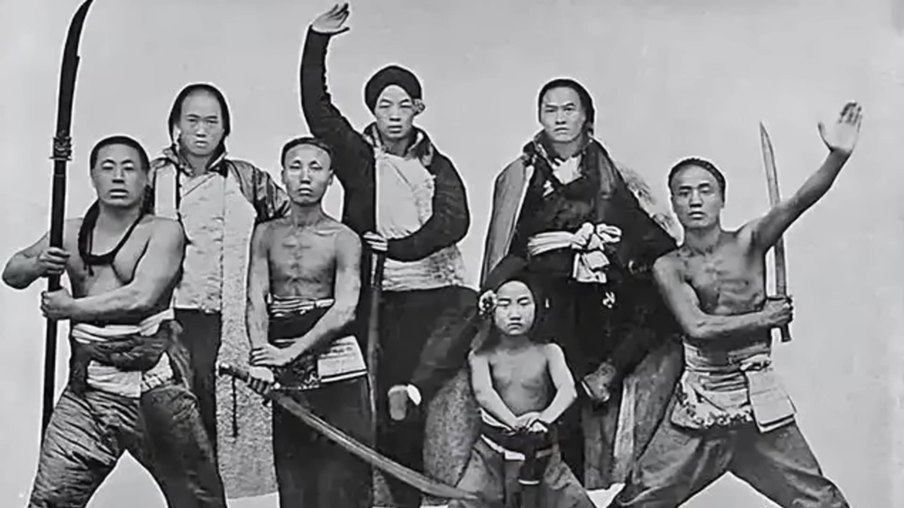
在義和團的作亂以及八國聯軍攻佔北京期間，慈禧太后與光緒帝兩宮倉皇西逃，而東南各省則進行了「互保」協議以自保。當時義和團活動的主要區域集中在華北地區。
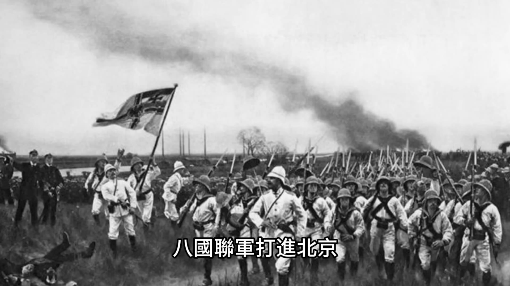
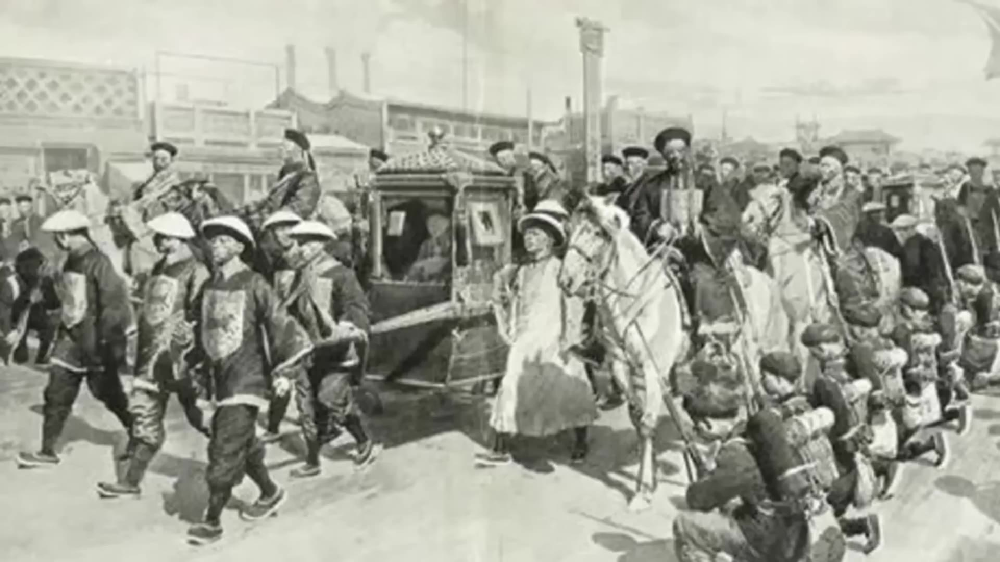
慈禧與光緒兩宮西逃後，東南各省實行互保政策，而義和團的活動主要集中在北方。最終，李鴻章代表清廷與列強簽訂了《辛丑條約》。

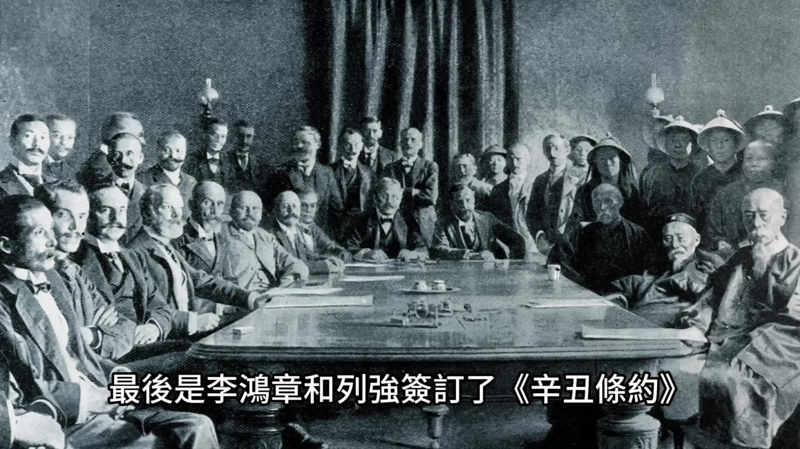
我們將用幾個節目來講述這個系列。今天先從義和團的起源開始。
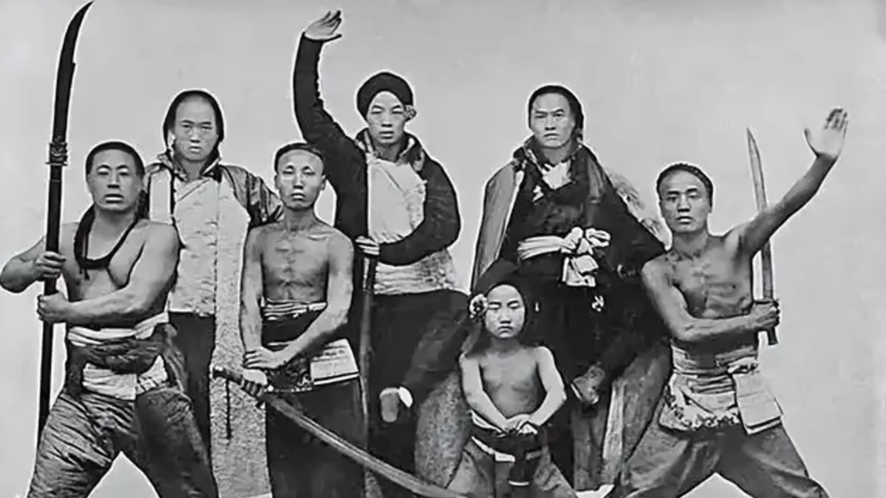
義和團拳民有一套「請神附體」的儀式，其中包含了一系列祈求神仙幫助的咒語：「夭靈靈地靈靈一請唐僧豬八戒三請二郎來顯聖四請馬超黃漢升五請濟颠我佛祖六請江湖柳樹精張請飛鏢黃三太八請前朝冷於冰九請華佗來治病十請哪吒三太子統領天上萬兵」。這個儀式非常正式，拳民會排隊行進，表演中他們表現得像戲劇舞台上的小生，口誦咒語。
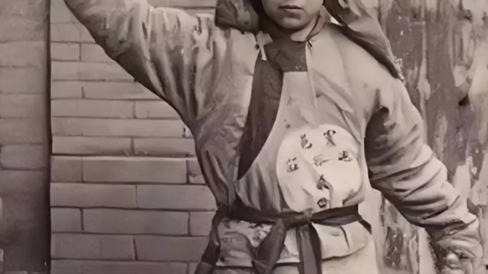
在儀式結束後，每個拳民都會感到有一種神秘的力量控制著自己，這被稱為「神靈附體」。一旦有了這種神靈的護佑，他們就被認為擁有刀槍不入的能力。
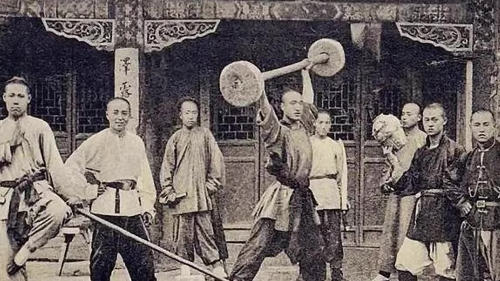
儀式之後，拳民會進行武術表演，這是每位拳民都必須學習的一項技能，也是最能吸引老百姓目光的部分。其中最受歡迎的是展示刀槍不入的特技。
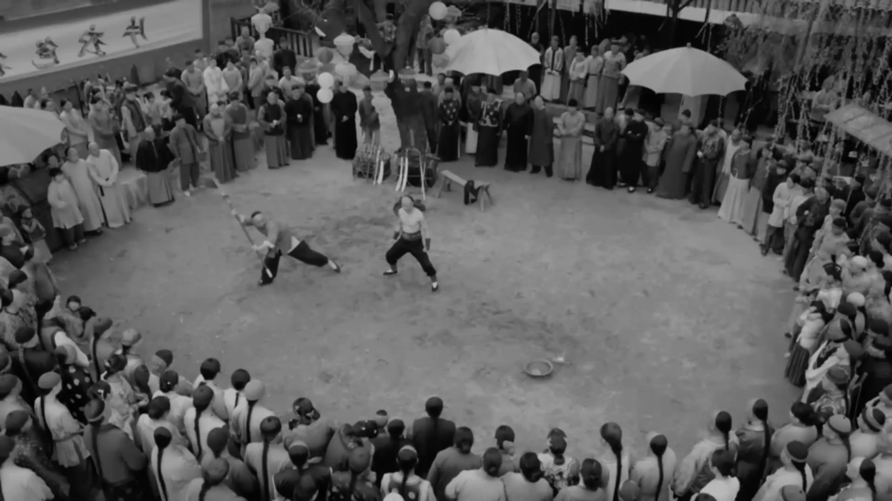
在表演使用大刀時，另一名拳民會用大刀往肚皮上砍一下，只留下一個白印子。
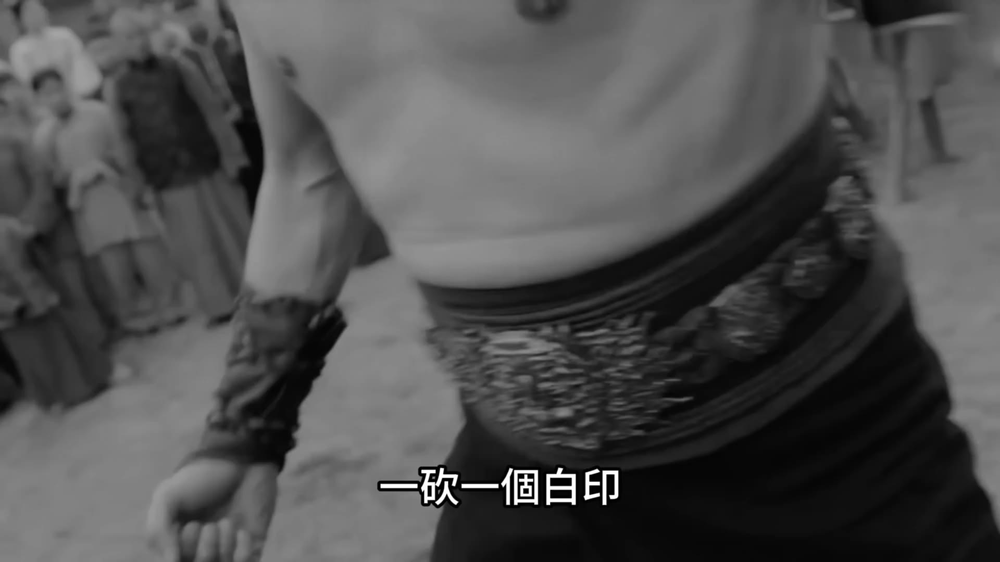
這需要一些氣功和技巧。當然，這樣的特技很容易被有識之士揭穿。
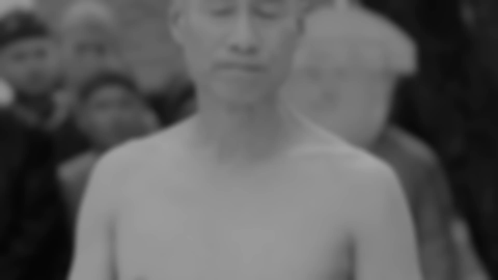
舉例來說，據說有一位義和團的大師兄在向袁世凱表演刀槍不入時，竟然不幸喪命。這些義和團團體，在現今的視角看來是非常荒謬的存在，卻能聚集上百萬人並讓清朝貴族也相信他們擁有超凡的能力。
要理解義和團是如何崛起的，我們必須先了解一個重要的背景：「教案」問題。教案指的就是民間與基督教教會之間的衝突。清廷官員對這些事件一直十分頭疼。從1844年法國與清朝簽訂《黄埔条约》起，西方傳教士開始重新在中國活動，並以治病和驅魔等方式吸引了大量信徒。
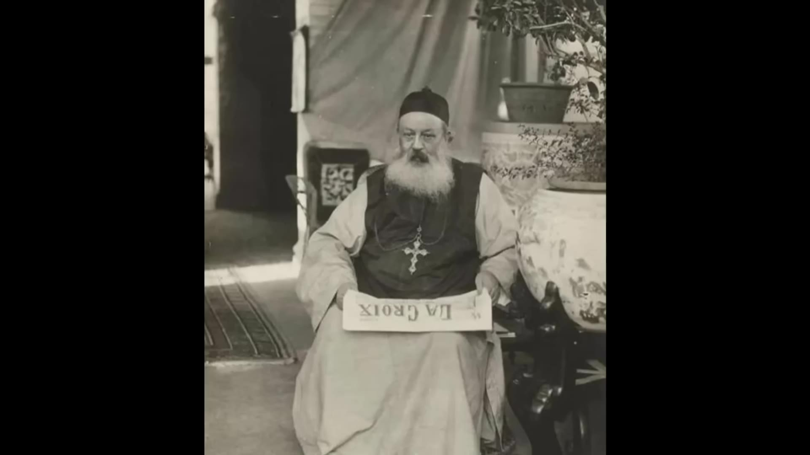
當時的傳教士常常是以醫生的身份來傳播基督教義。他們能治療許多當時中醫無法治癒的疾病，因此贏得了當地人的信任與支持。
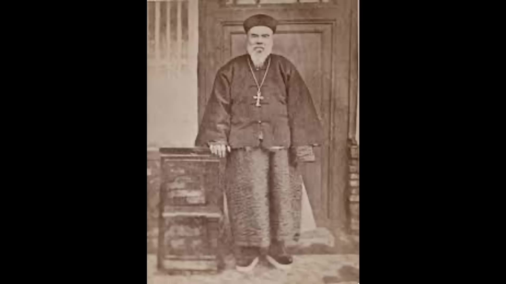
當地方醫生無法治療某種病症時，人們會求助於天主教傳教士，而這些傳教士通過念經驅魔等手段偶爾能幫助患者恢復健康。這種神秘的治療方式進一步增強了基督教在當地民眾中的影響力。
這段文字保留了原始文本的核心信息和所有標誌性圖片及說明，並對內容進行了適當的連貫編排以確保閱讀流暢度。
00:05:01
讓民眾信服，也要使民眾信教。然而，中國老百姓信教的方式與西方人有所不同。中國人信教並不排斥其他宗教，例如佛教的拜佛、道教的拜各路神仙以及儒家的敬孔孟之禮，他們常在同一座廟宇中祈求各種神靈的保佑。例如，一個大戶人家請人做法事時往往會請一對喇嘛和一對和尚，這稱為「四對」，他們認為這樣的安排才顯得氣派。這是中國人在宗教信仰上的傳統，即包容而不排他。
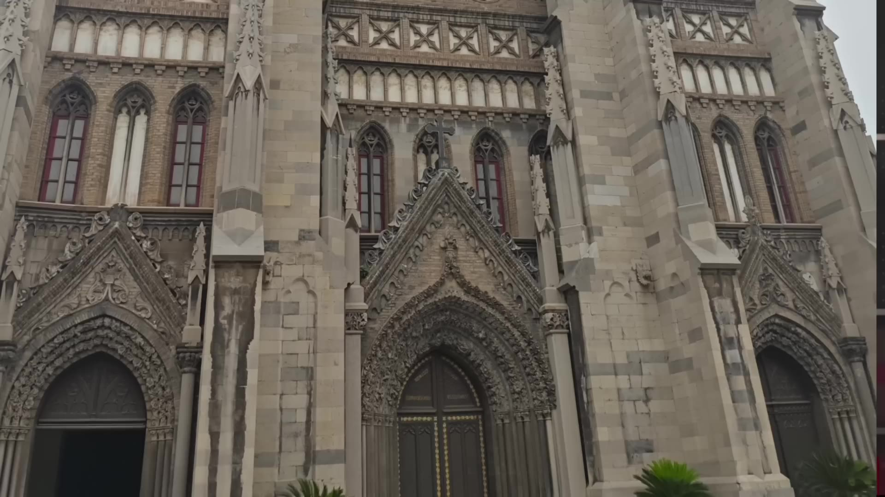
相較之下，天主教則是一種強烈排斥其他宗教的信仰體系，不允許其信徒同時信奉其他宗教。此外，天主教是中國少見的一種深度參與信徒日常生活的宗教，從出生時的洗禮、成年的成人禮到婚禮乃至死亡前的終傅禮，教會一直與信徒相伴。這使得它成為一個組織性極強且具體化的宗教社群。
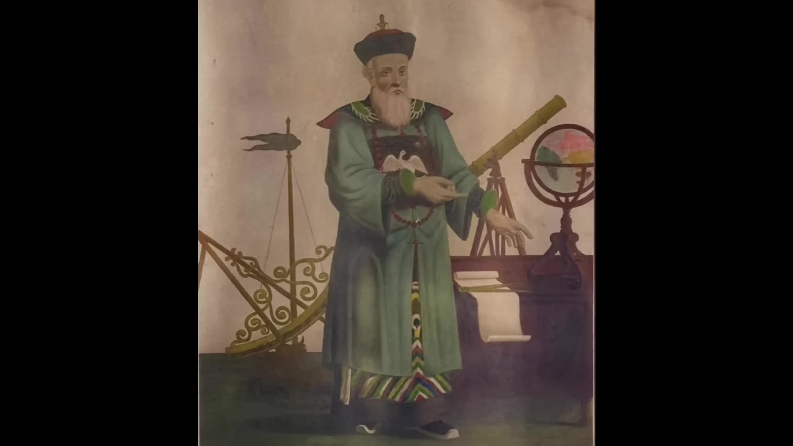
這種參與度和排他性的結合，在中國本土的傳統信仰中是少見的。信奉天主教的人們原本以為，像其他中國宗教一樣，只是在需要的時候才會拜祭神靈或請法師做法事，然而加入天主教後，他們被一系列活動規範著生活，這使得信徒最終成為完全忠誠的信眾。由於天主教對信徒生活的干預程度高，其組織性強，與中國社會原有的文化傳統和利益格局發生了直接衝突。
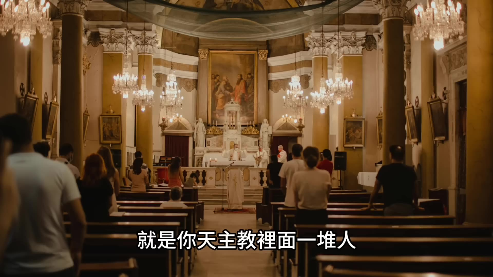
首先在文化方面，傳統儒家倫理道德中最重要的部分是祭祖，而天主教卻將此視為拜偶像。因此，在加入天主教後的信徒面臨一個嚴峻問題：是否應該參與祭祀祖先？如果不參加，可能會被宗族開除，這對於中國人而言是非常嚴重的事情。因為在傳統觀念中，「靠譜」原本是指一個人的名字在家譜上是否存在；如果名字不在家譜裡，則意味著此人沒有家族的支持和信用。
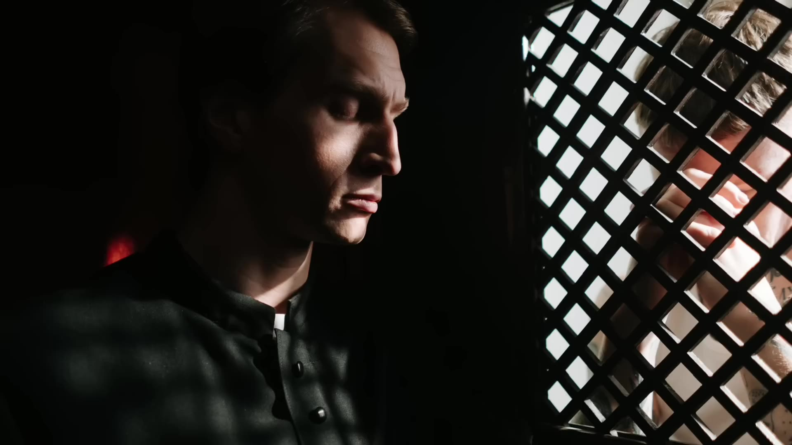
其次，天主教的活動形式也讓鄉民產生了許多猜疑。例如，他們在教堂中進行彌撒、告解等宗教儀式時，因為有男有女聚集在同一個密閉空間，容易引起村民們的猜測和誤解。這些誤解進一步加劇了天主教與當地士紳之間的衝突。
此外，天主教還引入了一些先進的思想和技術，對鄉民進行教育宣傳，這打破了士紳知識壟斷的局面，引發了他們的焦慮。然而，除了文化、習俗上的矛盾外，天主教在中國社會擴張過程中也帶來了新的思想與技術。
這種種原因使得天主教在中國的傳播並非一帆風順，往往伴隨著各種衝突和挑戰。
00:10:02
其中一段影片片段描述了一個名叫周瑩的婦女為了給丈夫治病，與一名傳教士前往教堂取藥。這件事情被其他人目擊後迅速流傳開來，引起了公眾譏諷和質疑，認為她不守婦道，甚至遭到公婆責罰。這個事件展現出當時普通老百姓對基督教會的普遍看法——在很多反對教會的士紳眼中，教會是萬惡之首，是社會淫亂行為的根源，因此常常有人向官府告發教堂。
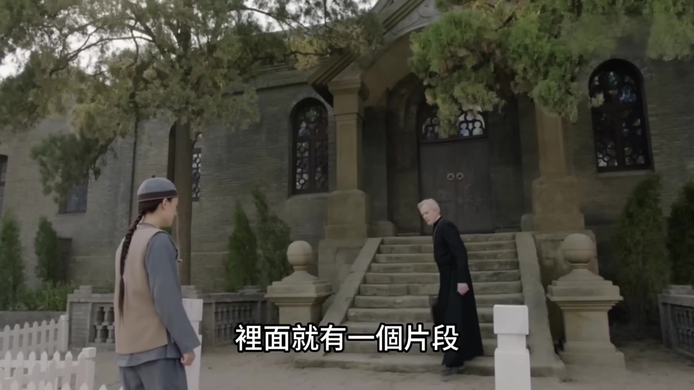
這些民教糾紛常被稱作“教案”，其中一個著名的例子就是天津教案。當時外國傳教士在中國進行宗教活動時，亦會從事商業交易，在生活過程中免不了與當地人產生摩擦，特別是經濟糾紛。然而，多數的經濟糾紛未被上報官府，而那些荒唐的情況卻屢見不鮮。天津教案是一起由育嬰堂引起的嚴重案件。
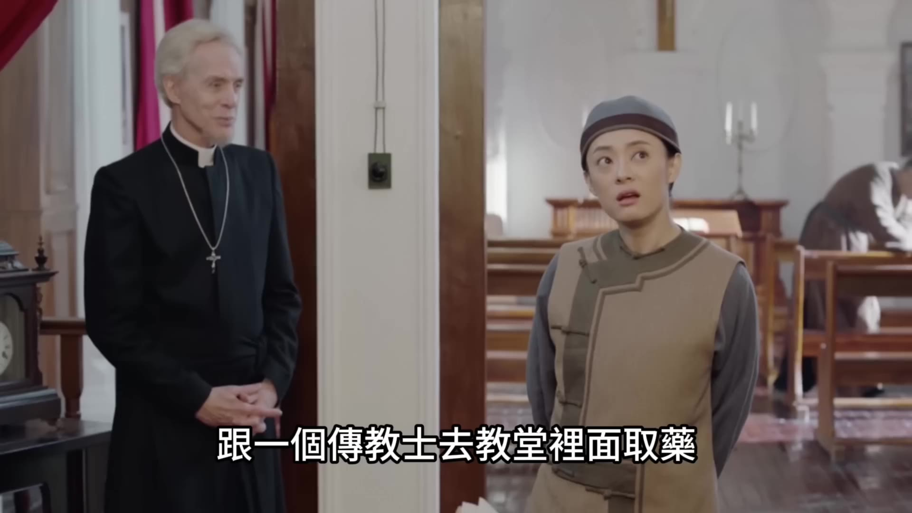
天主教在中國設立了多個育嬰堂，收養棄嬰和孤兒，其中一些修女會主動搜尋被遺棄的兒童，即使生命垂危也不例外。因此育嬰堂接收的嬰兒死亡率偏高，然而這些死亡並非因修女殘害而起；當時社會上普遍存在拋棄女婴的情況，若不被收養，很多孩子將在野外身亡。
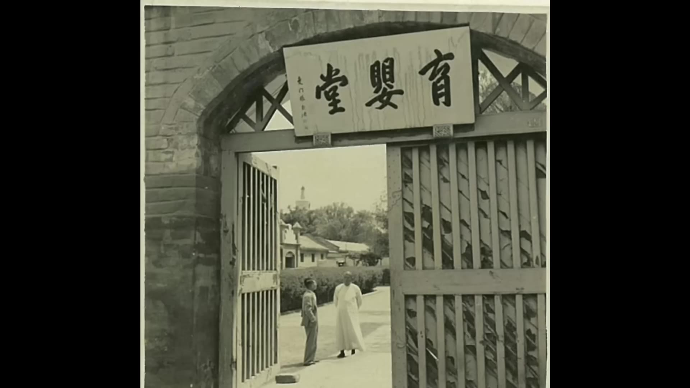
隨著育嬰堂收養失敗的兒童日益增多，坊間流傳出種種謠言，如說修女挖取小孩的心肝和眼睛做藥；甚至有荒唐之論稱中國人的眼睛能做成特殊藥水讓鉛變銀。這些不實的說法在當時被廣泛相信，引起民怨。
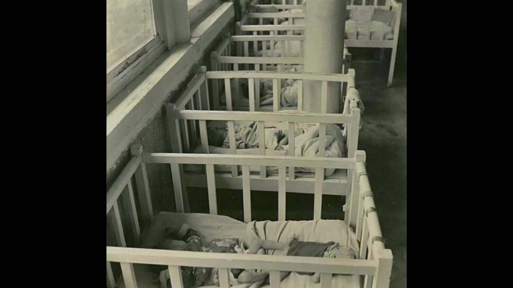
因此，民眾聚集於教堂門口示威，並最終演變成群體事件，聚集了上萬人。天主教會向法國領事豐大業求助，但遭拒絕。豐大業親自前往現場交涉時與靜海知縣劉傑發生爭執，結果開槍擊斃劉傑的隨從，引發公眾更大的憤怒，最終導致豐大業及隨從被殺害，並且教堂內外還有二十名外國人和數十名中國僱員喪生。
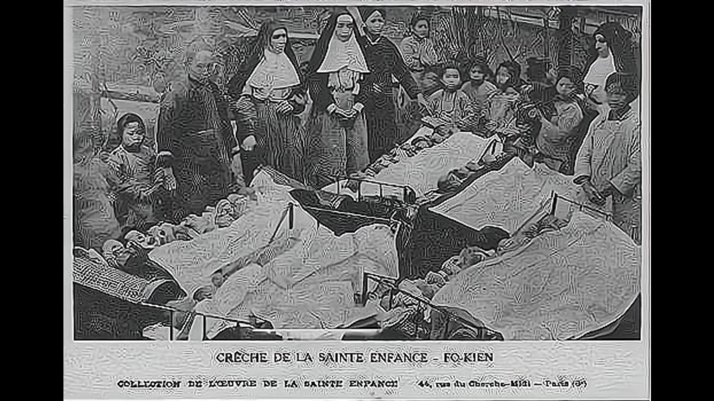
望海樓教堂遭縱火焚燒，法國領事館及其他多座英國與美國的教堂亦被毀壞。這場天津教案成為外交事件，引起七個國家對中國政府的抗議和威脅，使朝廷不得不正視此事。
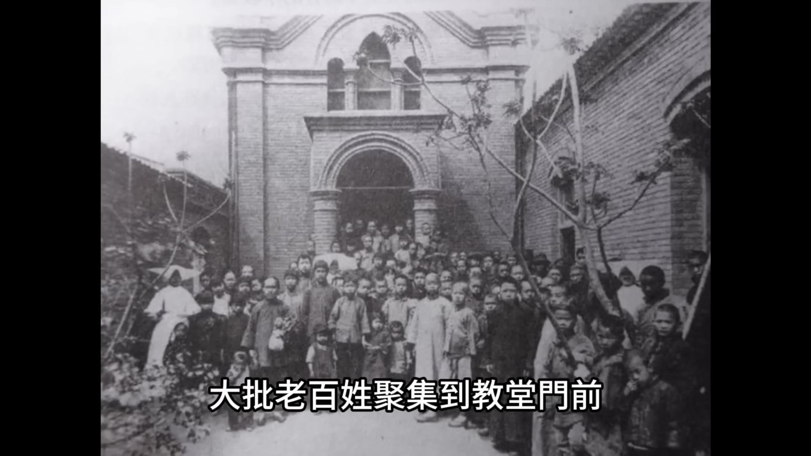
在朝堂上，大臣們多數認為是育嬰堂造成嬰兒死亡引起民眾反彈。面對外國施壓，大家表達要堅決對抗的態度；但具體誰來處理此事時，卻無人願意承擔責任，導致天津三口通商大臣崇厚藉機推脫職責。
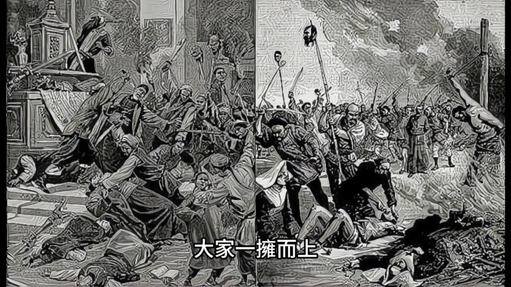
曾國藩當時是直隸總督，他面臨著如何妥善處理這一教案的挑戰。此事件凸顯了清廷在對抗外來勢力時所遇到的困難與矛盾。
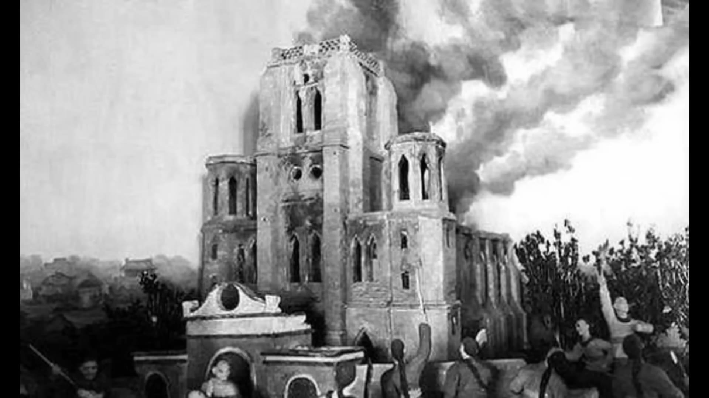
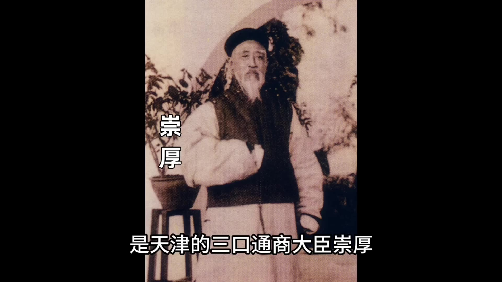
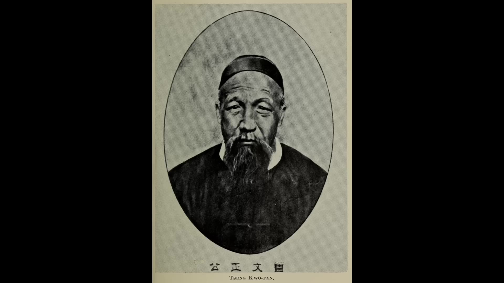
00:15:00
當時，朝廷讓曾國藩親自處理一場嚴重的外交危機。此時，曾國藩病重，右眼失明並患有嚴重眩暈症，幾乎每日都要量四次體溫，他感到了生命的終點臨近。然而，面對這起中國與外國之間極為複雜的爭端，曾國藩深知若處理不慎將會引發更大動亂。如果向洋人示弱，處罰殺害教徒者，可能會激起國內民眾反彈，被視為賣國賊；而對民眾過於寬容，則可能引起外國武力干涉。
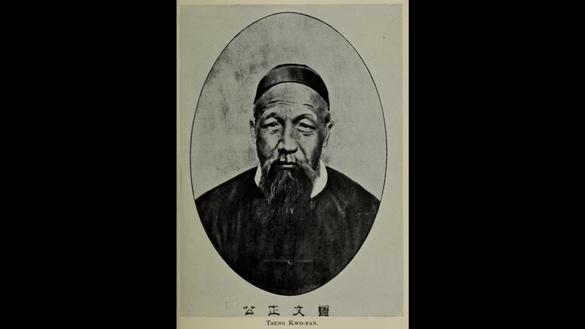
曾國藩抵達天津後，很快查明真相，發現所謂育嬰堂殺害嬰兒的傳言完全沒有證據。事實上，事件源於中國百姓因教會教堂內發生的一系列混亂殺人燒燬行為。曾國藩最終處置相關官員並依法懲罰兇手，不過由於當時現場混亂無法確定真實罪犯，因此選出幾名嫌疑人作為替死鬼。這些舉動雖讓輿論認為這幾個嫌疑人是「義士」，卻使曾國藩本人聲譽大跌。
隨著天津教案的處理，清朝民教衝突顯得非常嚴重，這種矛盾甚至從地方蔓延至全國各地。民間對洋人的宗教積怨已久，使得像育嬰堂殺害嬰兒這樣的謠言就能激發大規模騷亂。官方檔案顯示，最初官府總是偏向於保護當地民眾，但隨著外國公使的介入和壓力增大，他們往往改變態度以避免更大衝突。
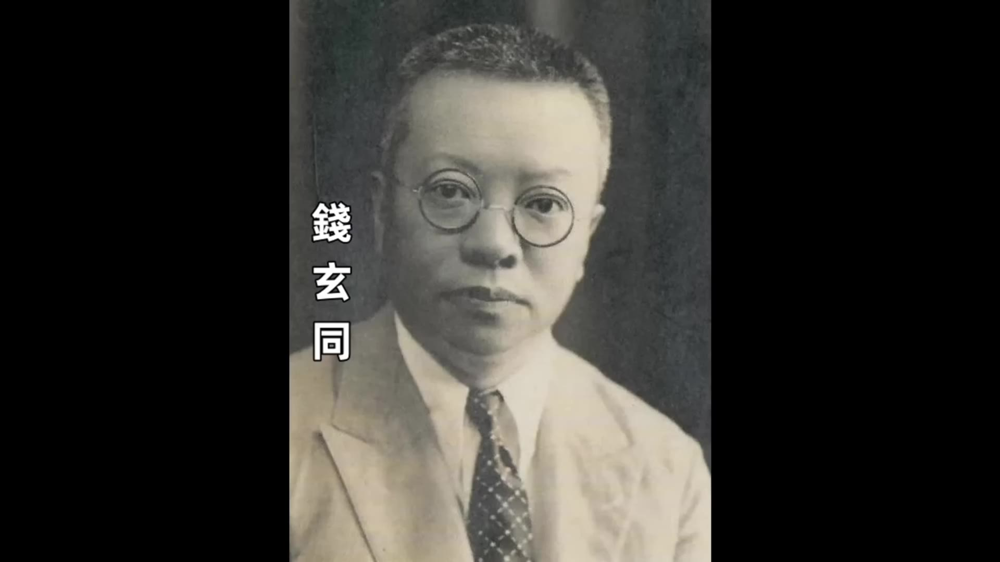
錢玄同曾記錄過一個典型事例：民國初期他與一名人力車夫交流得知，該車夫先前參加義和團，後改信天主教，並每日虔誠禮拜。這顯示了當初民眾轉向信仰西方宗教在很大程度上是出於實用主義考量——誰能帶來更多好處，他們就傾向於支持誰。

隨著甲午戰爭清朝敗北，西方列強進一步對中國產生瓜分之意。德國率先於1898年佔領膠州灣並修建了膠濟鐵路，此舉顯示出其侵佔行為相對於英國、法國及美國等老牌資本主義國家來說顯得更加蠻橫。
曾國藩在天津教案中的處理方式體現了清末民初時期中國政府面對內部與外部壓力時的兩難選擇，也揭示了當時社會大眾對於西方宗教和影響力日益增長的矛盾心態。
00:20:01
進入清朝的時候，各國都是用武力逼迫清朝開放市場，並未打算殖民中國。然而德國作為後起的資本主義國家，在它崛起之際世界上的可佔領地已所剩無幾，不甘落後的德國便將目光投向了中國，選擇對清朝出手。
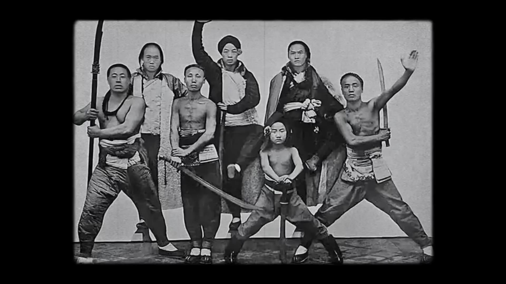
德國藉口民教衝突而強佔膠州灣。當時山東發生巨野教案，有傳教士被殺害，德國以此為借口侵占膠州灣。事實上，在中國境內傳教士遇害並非罕見之事，各地頻繁發生類似案件，本應通過司法程序解決，但德國選擇了武力介入。
朝廷在面對教案問題時一再退讓，儘管已經做出許多讓步，審判過程中也偏向外國人。然而這種做法仍未能令西方滿意。於是在1899年，清廷出台了一項新政策——《地方官接待教士事宜條款》，其內容主要是賦予傳教士與督撫、司道等級別相當的官方身份地位，規定主教與督撫相同，大司鐸與司道平行，司鐸則與府縣平行。該條款還規定發生教案時，主教及外國公使可以與當地官員協商處理問題，實際上就是讓西方傳教士直接參與審判和處置。
這種做法的後果是無論是非曲直，教民都會受到西方傳教士的保護，而非教民即便佔理也會敗訴。這導致加入教會成為一種階層上的優越感，清廷新條款頒布之後，入教的教民越來越多。這些新教徒多數是生活困苦、對朝廷不滿的人或是地痞流氓，他們純粹為了利益而加入教會。即便連傳教士也不認為這些人算是好教徒，因他們經常惹事生非。
例如曾經發生過這樣一個案例：一屠夫在賣肉時將羊頭掛於攤位上，有教民見此舉動便告訴外國傳教士稱該屠夫是故意侮辱洋教。因為「羊」和「洋」諧音不同（帶三點水與不帶三點水），兩者之間由此引發爭辯。隨後屠夫被告上法庭，官府不分青紅皂白就判決傳教士及教民勝訴，結果屠夫敗訴並遭受懲罰。
這類教案事件加劇了教民與非教民間的矛盾。由於政府無法保護百姓的利益，一些人便加入江湖幫會或義和拳等民間組織自保，大刀會、梅花拳、義和拳等組織因此壯大。
義和團正是由這些組織發起並形成的群體，他們起初被稱為「義和拳」，在官方看來則是「亂匪」。後來朝廷招安義和拳後改名為義和團，意圖表達官府不幫忙時老百姓只能自己抱團保護自己成為義民的意思。
義和團最初源於山東，與當地的民教衝突及對德國人蠻橫佔領反應有關。這也解釋了為什麼義和團會在山東誕生並最終進軍河北、天津乃至北京，發展壯大至慈禧太后的保護下，開闢總堂口於王爺家裡。
00:25:01
天無雨地焦乾升黃表敬香煙，這是義和團運動時期的一段歌謠「神助拳義和團」，它在民間起義時能起到非常大的作用。正如李自成的歌謠中所唱殺牛羊備酒漿開了城門迎闖王闖王來了不納糧，這類歌謠深得民心，反映了老百姓美好的願望。義和團運動中的歌謠同樣如此，天無雨，地焦乾，只因教堂止住天，這句話背後是當時山東鬧旱災的背景。
當時人們認為洋教堂阻止了降雨，因此他們要燒毀教堂並殺害洋人來祈求老天降雨。這樣的想法讓許多百姓加入了義和團組織。那麼，義和團究竟如何發展壯大的呢？
義和團最早在山東出現，但其具體起源沒有明確的記載。最早的組織形式包括義和拳、大刀會及梅花拳等，這些組織都設有「壇口」作為集中活動地點。
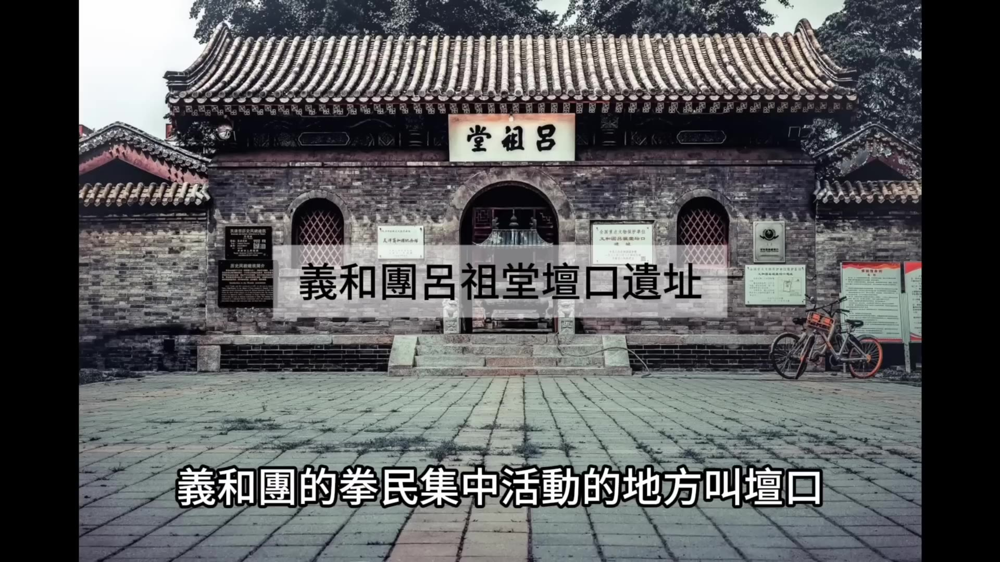
每個壇口是一個空曠的練武場所，在當地招募鄉民加入。新拳民入團有一套固定的程序，包括在神靈雕像前跪拜發誓、遵守團規以及進行「降神附體」等儀式。
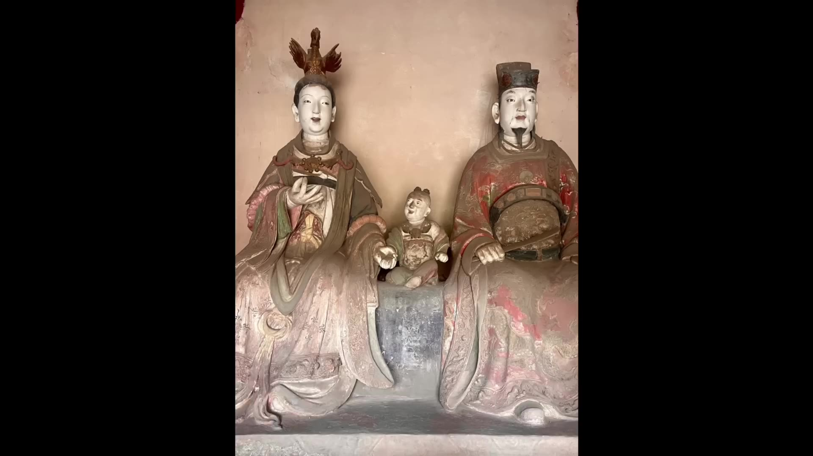
這其中最關鍵的一步是「上法」，新拳民需通過師傅指導來完成這一過程。師傅會在新拳民頭巾中放一張紙條並告知這是神靈符咒，讓其寫下自己希望請到的神仙名字。當師傅念完咒語後，新拳民便會感到身體似乎被一種神秘力量控制。
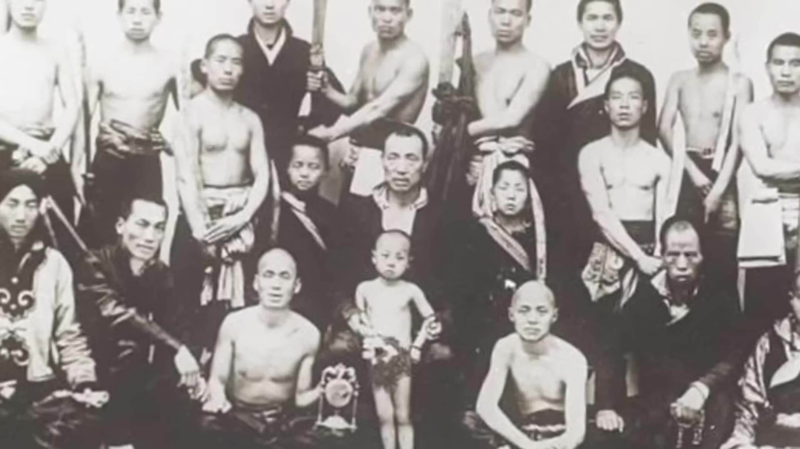
完成上法後的新拳民可以變身為各種神靈或歷史人物，如張飛、二郎神等，這些神靈形象通常來自民間傳說和小說故事，而非正式宗教中的神仙。
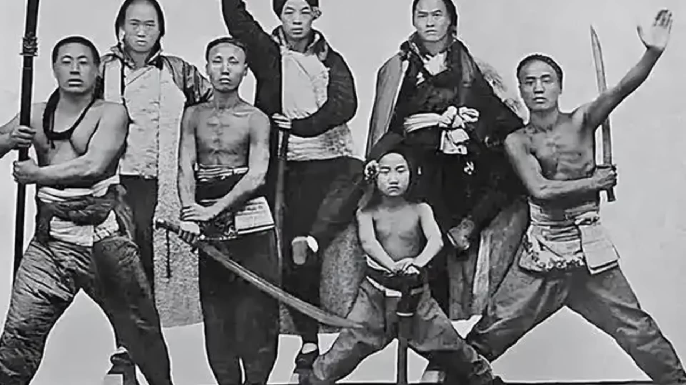
義和團組織中，大師兄是各壇口的負責人，法術則由專門師傅在各地間傳播。這些師傅被類比於後來的氣功大師，他們走村串巷地進行傳播工作。
關於參與人群的變化，在早期，如梅花拳、大刀會這樣的組織往往吸引的是有家業的人士，比如山東威縣張家屯的例子顯示，參加這些組織的多為當地的富戶。
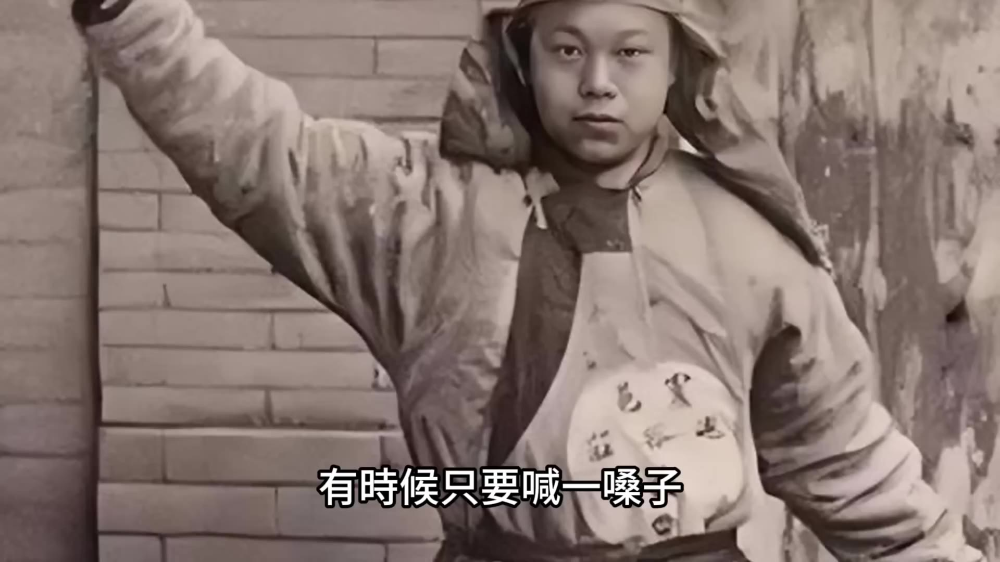
然而，1899年北方大旱使更多窮困之人加入義和團，這標誌著參與者身份發生了變化。
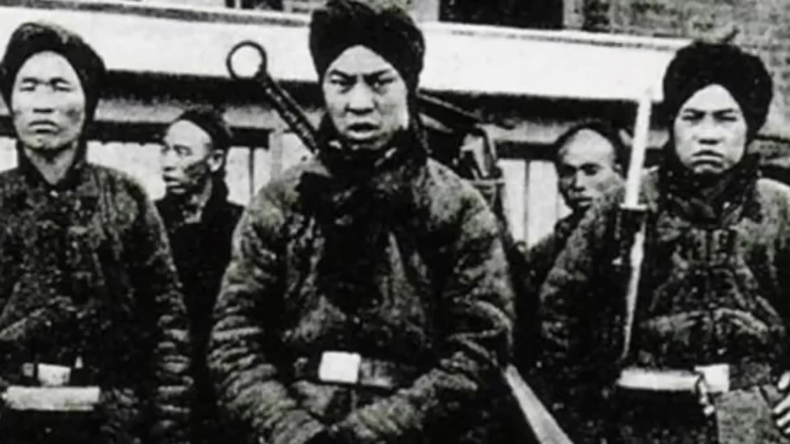
00:30:00
飢餓引發了教民與非教民之間的衝突，民間流傳一種說法稱洋教教堂阻礙了降雨，導致天旱地乾。這種觀念在義和團歌謠中也有體現：“天無雨，地焦乾，只因教堂止住天。”這類言論促使民教矛盾不斷升溫。同時，清朝政府頒布的《地方官接待教士事宜條款》使地方官員更加偏袒教民，加劇了民間組織如梅花拳、大刀會與官方之間的對立。
此時，這些組織的領導者多為當地富紳，他們感受到來自官方鎮壓風險日益增大。隨著災民加入義和團的人數增多，這群富紳因負有救濟義務而感到壓力山大，逐漸放棄了控制權。此後，領袖席位被從無業遊民中崛起的諸如趙三多、於清水等人物所取代。
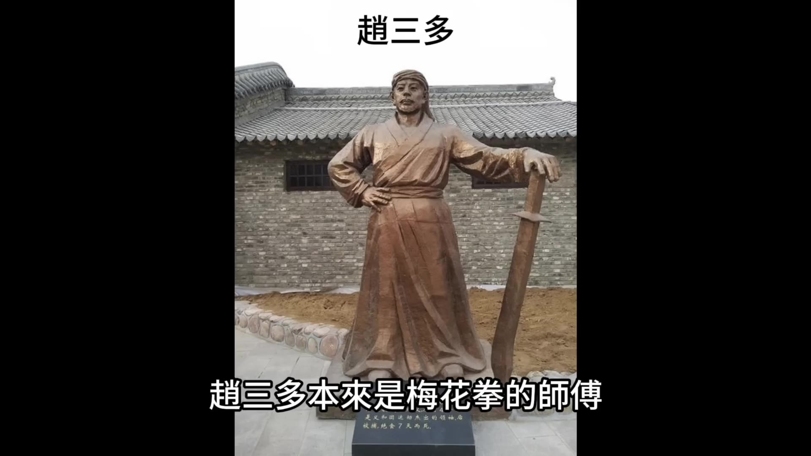
趙三多原為直隸山東交界地區梅花拳師傅，其收徒數量超過兩千人。在1895年和1896年的民教衝突中，他主導了對地方官府及教堂的示威行動。起初，趙三多欲以梅花拳名號為旗幟，但由於當地富裕人家反對，只得改稱義和拳。他們的抗議目標主要針對洋人和傳教士，並非要推翻清朝政權。
最初義和團活動時，山東巡撫是李秉衡，他是一位清流黨出身的官員，在甲午戰爭時期曾因對洋人態度強硬而被調任。1894年甲午戰爭後，他的表現引起朝廷關注。然而翌年因曹州教案處理不當導致德國佔領膠州灣，李秉衡因此遭到罷免。
接替李秉衡的山東巡撫是毓賢，此人長年在山東執政且極端排外。他最初將義和團視為叛亂組織予以鎮壓，例如1896年魯西南曹單縣教案中，大刀會焚燒教堂後，毓賢派遣軍隊並處決了數名首領與成員。
隨後，由於德國在山東的蠻橫行徑，毓賢改變態度，轉而利用義和團對抗外國勢力。他認為通過這種方式既能實現排外目的又能避免直接衝突帶來的風險。
00:35:01
他在招撫之際，將義和團轉化為鄉團及團練，於此時期，義和拳改名義和團。在山東地區，義和團幾乎演變成「毓家軍」，隨著獲得官方保護，其發展速度加快。由於毓賢對義和團的縱容，西方列強感到非常憤怒，並持續向清廷施壓。1899年，美國公使康格向總理衙門提出抗議，要求撤換毓賢。在壓力之下，同年12月毓賢被革職。接任山東巡撫的是袁世凱。
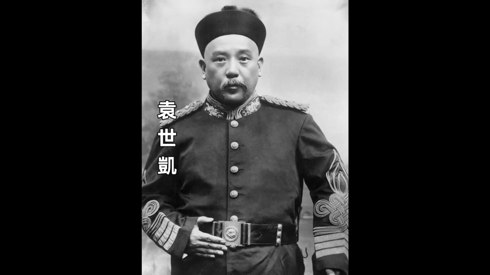
當時袁世凱正在天津小站練兵，在赴任山東時帶領新建陸軍前往。與毓賢相比，袁世凱對外國人的態度開明得多，他雖不排外，但也不縱容洋人。清廷讓袁世凱出任山東巡撫，此舉有深層含意：德國在1897年佔領膠州灣後修建了膠濟鐵路；到1899年時，德國仍不斷往山東內地滲透。袁世凱帶軍進入山東的名義是應西方列強要求彈壓匪類、保護教民，但實際上是要遏制德國對山東進一步侵佔。這兩件任務，在袁世凱到任後要同時完成。他在山東建立了嚴密的防禦體系。

當時德國以膠州灣為基地侵略山東，設立軍事總部及行政機關。袁世凱認為遏制德軍的重點在青州，於是將其軍事總部設於該處並分散軍隊部署。
他還把一支機動軍隊駐紮在濟南附近，這支軍隊可以支援四方的軍隊。袁世凱佈置的防禦體系對德軍產生很大震懾作用，在他任職山東巡撫期間內，德國未再進一步採取軍事行動。
解決外敵問題後，袁世凱開始清剿義和團。治標即是迅速鎮壓義和團，因為他看到山東的義和團已經發展起來，若放任不管可能會失控，因此必須立即鎮壓。他將義和團重新定義為「拳匪」，劃分多個剿匪區，派出親信如雷震春、張勳等帶兵剿匪，要求迅速擊潰義和團。張勳等人在剿匪時也極其殘酷，例如在魯西南地區對盤踞村莊進行炮轟，直接焚毀多個村莊。儘管引起了民憤，袁世凱的鎮壓確實有效控制了義和團的發展。
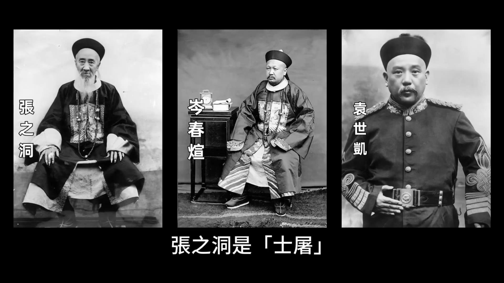
袁世凱也因此得到「民屠」之稱，與岑春煊的「官屠」、張之洞的「士屠」相比。張勳等人的殘酷鎮壓有效遏制了義和團，但也在當地引發民憤。
在治標後，袁世凱開始治本。他認為教案是義和團作亂的根本原因，提出地方政府應公平處理民教衝突問題，不分教民與百姓，只分是非曲直，並禁止外國傳教士干預訴訟過程。若有不安分的外國人或其傳教士，則會收集證據交由其上司處置。
根據此原則，袁世凱審理了許多案件，在碰到洋人袒護教民時也據理力爭。由於他之前在朝鮮與西方各國領事打交道多年，熟悉對外交往方式。
外國領事見袁世凱尊重其規則，漸生敬重，雙方逐漸磨合出辦理教案的「約章」。約章確立後，山東地區嚴重的教案問題基本解決。此時山東氣候亦給袁世凱帶來好處，1900年4月的大雨緩解了旱情，很多拳民退出義和團回家種地。經過一番操作，山東實現由亂到清的局面。
未被剿滅的義和團大多隱藏起來，但朝廷對義和團政策又有所調整：1900年6月下旬，朝廷開始招撫義和團。慈禧太后掌權下，朝廷態度轉變。
00:40:00
戊戌政變之後，清廷維新變法宣告徹底中斷。不僅如此，洋務運動多年來所推進的改革亦隨之倒退。此時，誰若在朝廷上提出改革或支持洋務政策將面臨處分，反映了當時朝廷內保守派勢力的壯大與主導地位。慈禧太后雖非固守舊制之人，但在維新變法失敗後被迫站於頑固派一方以打擊維新派。
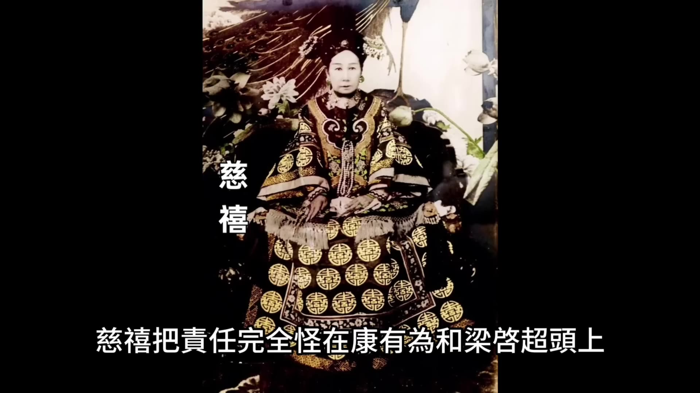
光緒皇帝被視為改革的最大障礙，因為他阻礙了慈禧的權力。戊戌變法結束後，光緒皇帝便成為慈禧最大的政敵之一。隨著時間推移，年老的慈禧擔心光緒一旦復位將危及她的統治地位，故萌生廢黜光緒的想法。
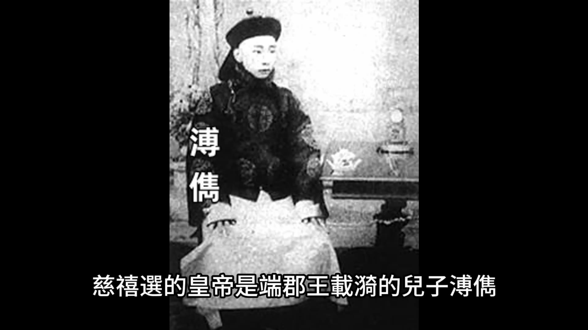
為了實行其計劃，慈禧選擇了端郡王載漪之子溥儁作為新的繼承人。當時溥儁年僅15歲，若他登基後，慈禧仍可繼續垂簾聽政以維持權力。
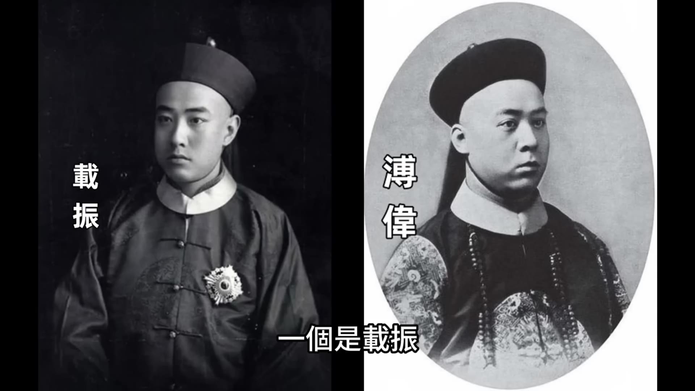
然而，選定溥儁並非全無爭議，其他潛在繼承人如載振和溥偉均遭到摒棄。此舉引發朝廷內外的反彈，包括洋務派與保守派大臣及西方列強。根據滿清祖制，太皇太后垂簾聽政實屬罕見。因此，慈禧選定新君的消息遭逢一致對抗。
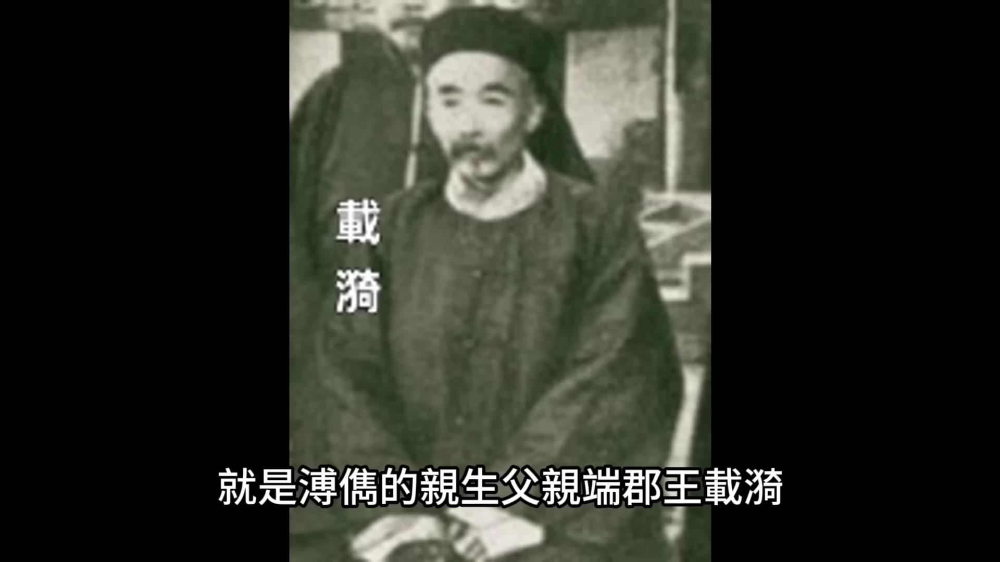
儘管存在反對意見，慈禧仍試圖依賴議政王制度以增加其統治的合法性與穩定性。然而，西方列強的支持光緒變法及對慈禧廢帝計劃的抵制使她陷入困境。
在多方壓力下，甚至連最信賴的大臣榮祿也勸阻慈禧停止廢帝行動。最終，在強烈反對聲浪中，慈禧被迫暫緩其廢黜光緒的決定。
此段文字保留了原始內容的核心資訊，並加入適當的轉折句以使敘述更加流暢和易於理解。
00:45:00
榮祿建議不正式冊封皇儲，僅立溥儁為大阿哥。1900年1月24日，清廷以光緒的名義頒布詔書，宣布過繼溥儁為同治帝之子，並稱光緒皇帝沒有子嗣。慈禧希望藉此將光緒逼退位，但這一舉動遭到強烈反對。上海電報局總辦經元善聯名1,200多人上書反對廢立光緒，地方大員劉坤一、張之洞等人也明確表示反對。西方列強同樣不希望清廷更換皇帝，因為這會影響他們在中國的利益，並可能阻礙改革的進程。多國公使拒絕祝賀新皇即位，英國公使甚至發出威脅要出兵干預。
慈禧因此感到十分惱怒，認為這是她的內政，不應該受到外國干涉。她決定與列強抗爭，從在改革問題上的較勁轉移到廢立皇帝的議題上。然而，在這個過程中，她並未考慮到可能帶來的嚴重後果，如朝野動盪或亡國危機。載漪為使兒子溥儁登上皇位，結黨營私形成「大阿哥黨」，該團體包括惇親王、端親王及輔國公等人。他們向慈禧建議利用義和團來對抗洋人，並聲稱義和團能刀槍不入。
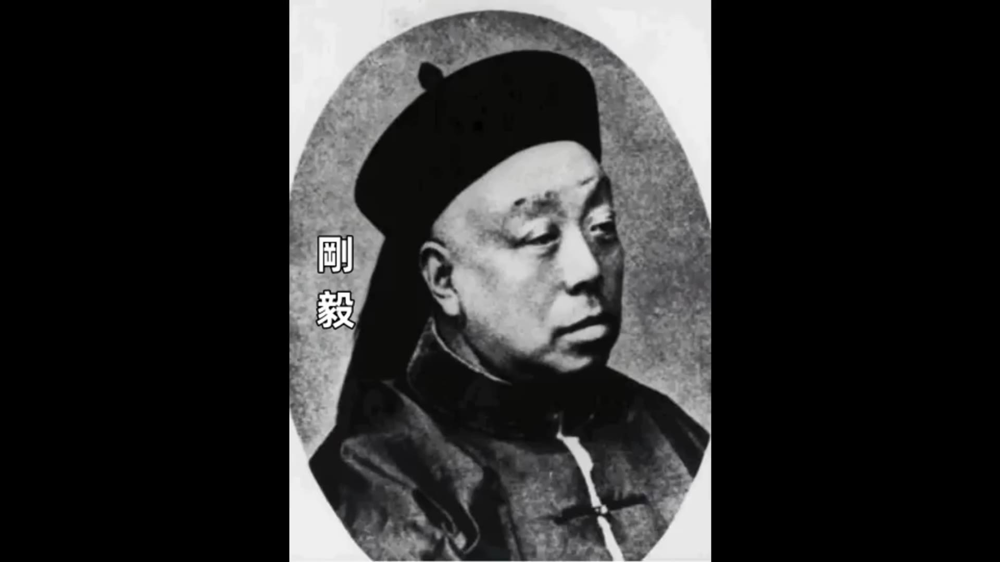
剛毅受命考察義和團，並信誓旦旦地報告說其確實有神力。慈禧聽後更加堅定利用義和團的決心，她開始考慮用義和團來削弱洋人的威望，而這時她還未打算與列強開戰。
在山東地區鎮壓義和團最嚴厲的人是袁世凱，他把許多拳民驅趕到直隸。隨著朝廷態度轉變，直隸總督裕祿放鬆了對義和團的剿殺力度，導致其快速壯大。至1900年5月27日，義和團攻佔涿州城，標誌著他們從農村擴展到城市。
隨著載漪等人向慈禧報告義和團的壯大及其可利用性，朝廷對義和團的態度轉變為招撫。此時的直隸，義和團已遍布各個地區，涿州攻佔事件更是激發了他們進一步發展壯大的勢頭。
00:50:00
隨著義和團活動的擴大，越來越多的人湧入天津和北京。
載漪作為支持義和團的大阿哥黨成員，在朝廷中並無實權，為了能夠掌控軍事力量，他開始積極拉攏義和團，甚至將自己的端王府設為義和團的總壇口，成為全國性的據點。這樣一來，各地義和團民只要到達北京都會在這裡報到，接受招撫，而載漪也藉此鞏固了自己的勢力。
隨著朝廷態度的轉變，6月13日正式下發上諭停止對義和團的軍事鎮壓並允許其進入京津地區。
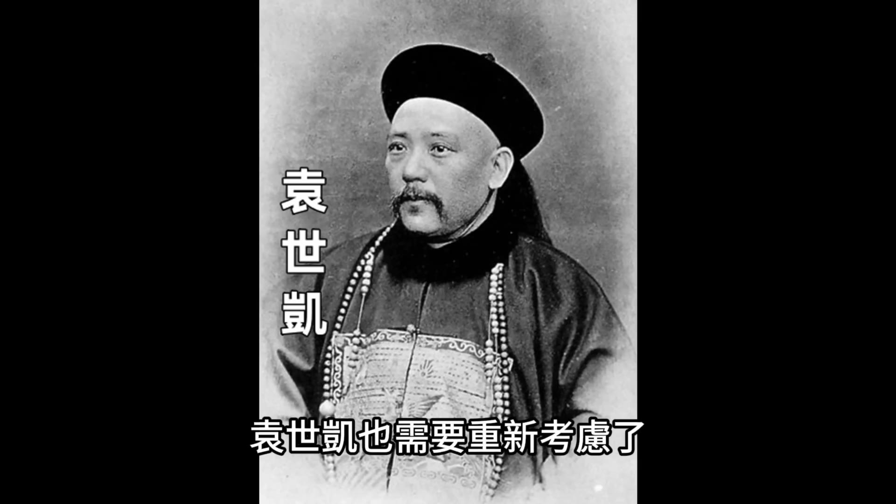
這時袁世凱也需要重新考慮自己的政策，他原先將義和團視為拳匪要予以堅決鎮壓，但面對朝廷新命令，他決定採取折衷策略：重新定義義和團，對外公佈良團與亂團之分。凡是忠勇義民想為國家效力的義和團成員可前往天津北京效命；而留在山東滋事的地方性組織則被視為亂團，予以嚴厲鎮壓。
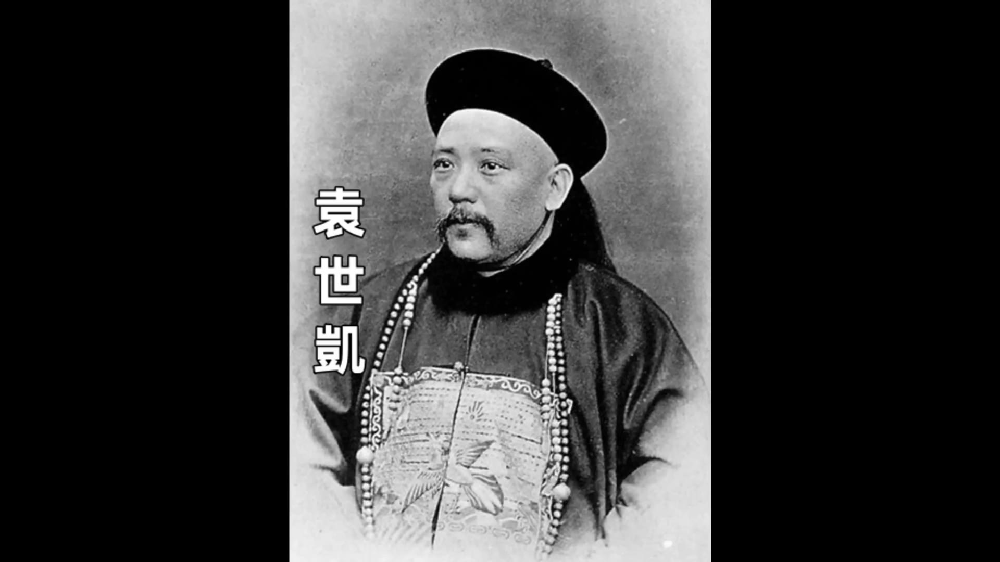
袁世凱這一策略確實有效，使山東境內的義和團活動大大減少，而原先發源地卻變得平靜許多。
在此期間，慈禧太后與英國女皇維多利亞相比較，表達了自己在國家治理中扮演的不同角色。
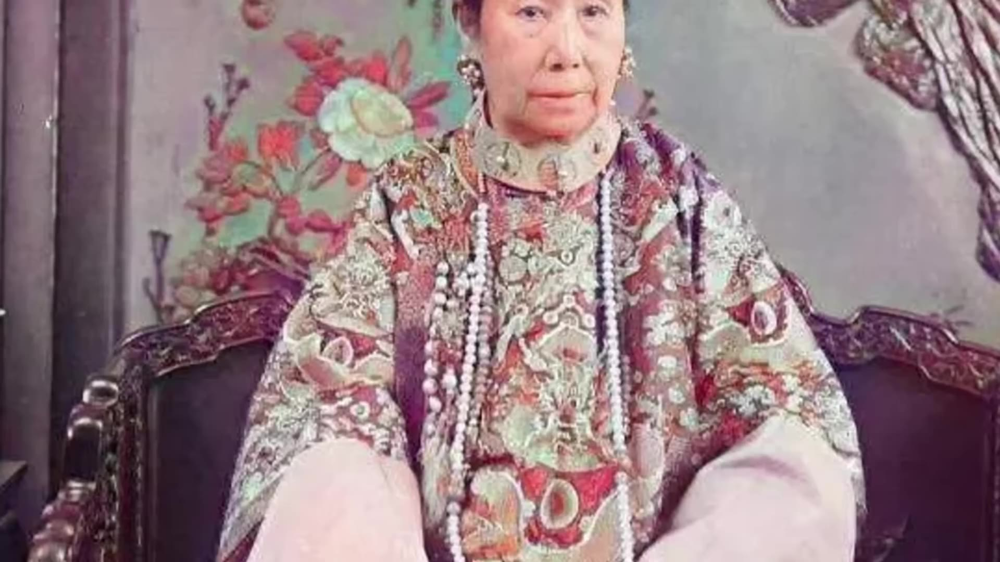
雖然英國是世界強國，但維多利亞女王的權力實質上受到議會制約；慈禧則認為她是當前中國實際上的最高統治者，擁有獨斷決策的能力。然而，這也讓她承受著重大壓力和責任。
隨著義和團在北京地區活動日益猖獗，燒教堂、殺教民、毀鐵路等行為頻繁發生。
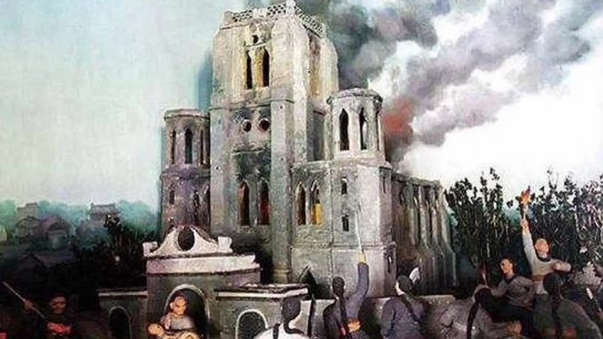
他們公開宣稱洋人入京已有四十年，強烈反對外來文化與宗教的存在。義和團這樣的舉動進一步加劇了滿漢民族矛盾以及清廷與西方列強之間的緊張局勢。
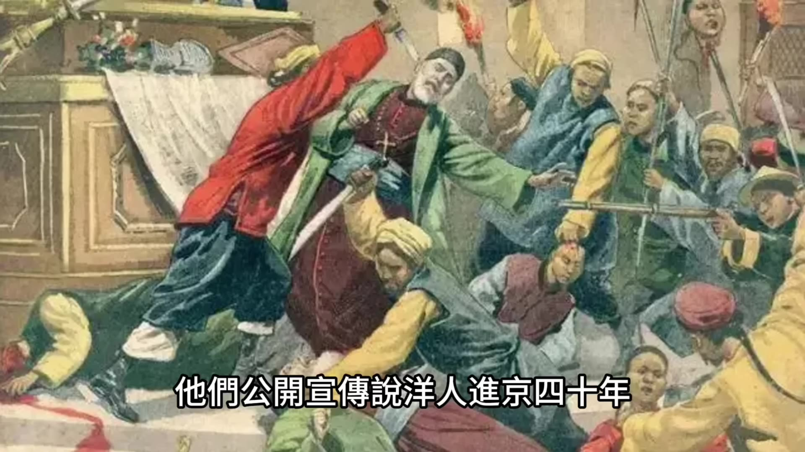
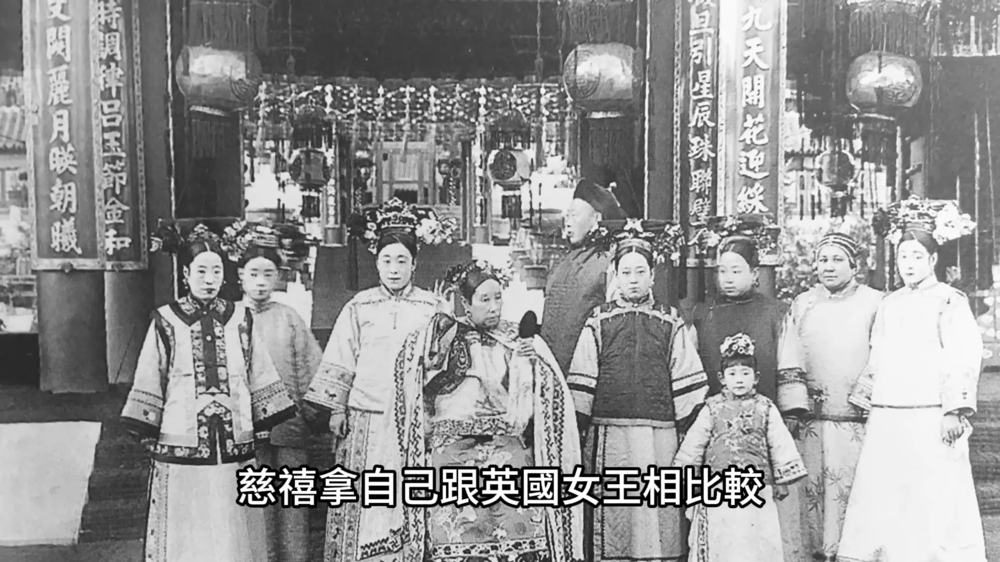
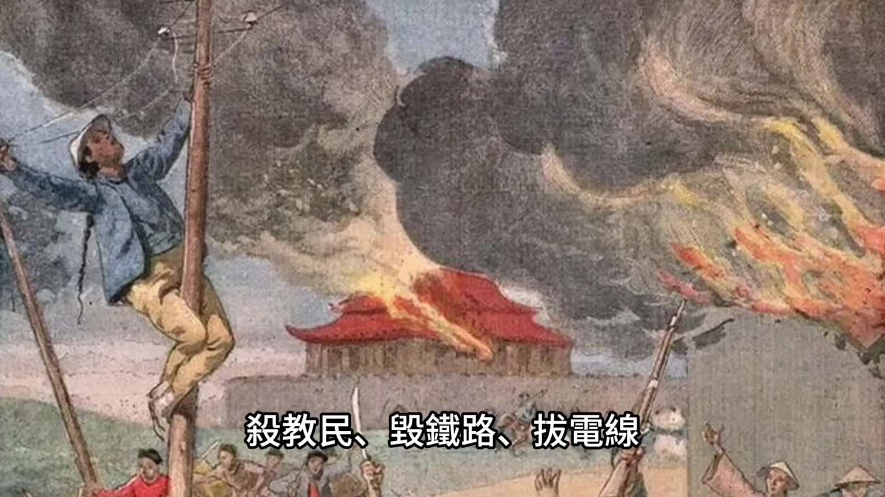
00:55:00
義和團成員認為清朝氣數已盡，天意該絕。因此，諸神下界借附在義和團民的身體中，將洋樓、使館以及洋人教民全部消滅，以興清朝大業。義和團稱洋人為「大毛子」，而那些信奉基督教的中國人則被稱作「二毛子」；凡是與洋人有聯繫的人，如給洋人打工或賣洋貨者，均被稱之為「三毛子」、「四毛子」。義和團對這些人都大開殺戒。
北京前門大柵欄地區是當時最繁華的地方，各類商品店鋪林立。
當然，在這些店舖中也有許多販賣洋貨的商店。
例如一些西藥和鐘錶店。當義和團拳民來到這裡時，他們要求那些經營洋貨的老闆拿出所有的洋貨進行銷毀。當時有一家非常有名的药店叫老德記藥房。
這家药店的老板不服從義和團的要求，不願交出西藥。義和團的人則直接要燒掉這間药店，並進行了一場所謂「大師兄發功」的表演，實際上是事先鋪好了煤油來點火。當旁邊的老百姓看到著火了想要過來滅火時，義和團的人阻攔他們說誰敢救火就燒死誰。結果火勢不斷蔓延，周圍的店舖也一起被燒毀，大柵欄共有1,800多間店鋪被焚燒，7,000餘棟房屋遭殃。
正陽門是皇城的正門，在這場大火中也遭受了損壞。然而，由於義和團有端郡王載漪作為領袖，即使這樣不吉利的情況發生，也沒有人敢說出來。
自從義和團進入北京後，駐京外國人變得十分恐慌，許多教堂的教徒為了躲避迫害都躲進了他們國家的大使館中。
當時各國大使館都在東交民巷，住在這裏的外交官也開始感到害怕。他們向清廷提出要求，希望能夠迅速制止義和團野蠻行為並清除義和團。然而，清朝政府對此態度曖昧。
尤其是端郡王載漪不斷拉攏義和團，他當時還出任了總理衙門大臣的職位。因此在跟外國公使交涉時，總理衙門只能拖延時間並沒有給出明確答覆。
後來各國大使館要求派軍隊進京保護自己的安全，他們認為這是駐在國政府的責任。但按照國際慣例，外國公使無權調動自己國家的軍隊自行保護。最終總理衙門迫於壓力同意了此請求，並安排直隸總督裕祿為這些士兵準備火車以便運送。
外國大使館人員在天津集結後搭乘火車抵達北京。然而隨著義和團在北京的拳民越來越多，到6月10日左右數量已超過了10萬人，這些人都對北京造成了嚴重破壞，讓外國人的恐慌再次升溫。
此外，義和團還破壞了從北京通往天津的鐵路，這使得駐扎在天津各國軍事力量前往保護大使館變得更加困難。在北京的外國公使們幾乎天天都在開會討論，他們認為這樣孤立無援的情況不能再維持下去，決定撤往安全的地點——天津。
由於只靠目前來到北京的300多名士兵不足以保護這群人安全離開，因此各國大使館要求派遣更大規模的軍隊到達北京，最少需要2,000人以上的軍力才能保障他們的安全。
01:00:01
當時各國政府在天津也沒有多少駐軍，僅有少數國家在大潔口擁有軍艦，艦上有海軍陸战队。另有部分國家則只有商船，船上配備著水手。這些海軍陸戰隊士兵與水手臨時組成了一支聯軍部隊，約2,000多人，由英國人西摩爾擔任聯軍司令一職，他是此次任務中級別最高的一員。
西摩爾被任命為聯軍指揮官的原因在於他是一名海軍中將，具有較高的權威。他們的目標是前往北京接應駐華使館人員，然後再護送至天津。西摩爾認為此次行動相對簡單，從天津到北京乘火車僅需一天之內即可往返。
據西摩爾的預測，在當天晚些時候就能在位於北京的各國公使館裡享用晚餐。因此，在行軍準備上，聯軍並未做足長期戰鬥的準備，每人僅帶了兩三天的食物供應和200多發子彈，隨身攜帶的重武器包括幾門速射炮及野戰炮，另外還帶有數名英國工程師與70多名清朝勞工以應對鐵路損壞時進行快速修復。
西摩爾的聯軍以為這不過是一場簡單的任務——接走使館人員便告一段落。然而，清廷對於此舉卻感到茫然無措，當時總理衙門由極端排外的載漪掌控，因此朝廷內部對此次行動存在諸多猜測與不解。
當西摩爾的軍隊出發後，清廷認為這是列強對中國正式挑戰的一個標誌。慈禧太后等人也紛紛推測是否要迎戰這些外國軍隊，然而在朝廷尚未作出決策之際，義和團已開始阻撓西摩爾的行軍進程。他們首先切斷了北京到天津之間的所有電報線路，使北京各國公使與聯軍部隊的聯絡完全中斷。
義和團在沿途不斷破壞鐵路，致使西摩爾的軍隊不得不一路維修鐵道前行。每當鐵路被破坏一段時，工程兵便立即進行補救工作，這使得聯軍行進速度極其緩慢。此外，在遇到義和團攻擊時，雖然每次戰鬥都造成對方重大損失，但聯軍也同樣遭受一定程度的傷亡。

在鐵路被破壞的重要站點處，西摩爾不得不留下部分士兵駐守防止再次被破壞。然而留守的這些士兵常遭義和團突襲，如6月14日，落垡車站的士兵就因無法抵禦攻擊而請求廊坊前進部隊的援助。
當西摩爾的大軍正好行至廊坊之時，他們被迫分兵回援陷入困境中的落垡車站。此後聯軍不得不在邊行軍邊戰鬥和維修鐵道的狀態下緩慢前行，幾日過去糧食已消耗殆盡，沿途搶劫補給成為必要。6月17日，當西摩爾率領的聯軍抵達廊坊時，卻見到清軍旗幟，並遭其開火。這標誌著雙方關係開始緊張化。
在這之前，西摩爾及其部隊遇到的主要敵對力量來自義和團，而非正式的清軍部隊；然而面對董福祥率領的甘軍，則標誌著北京方面態度的重大轉變。清廷在此地區掌握軍事力量的是榮祿，他是慈禧最信任的一員，在甲午戰爭結束後便掌控京津一帶的所有軍事部署。
榮祿將京津部隊重新編組為五個武衛軍，分別是聶士成的武毅軍、董福祥的甘軍、宋慶的毅軍和袁世凱的新建陸軍，以及榮祿親自統領的滿洲八旗軍隊。其中戰鬥力最強的是袁世凱的新建陸軍。
01:05:02
新建陸軍完全是由外國顧問培訓而成，配備了當時最先進的西式武器。其中聶士成統領的武毅軍和宋慶統領的毅軍皆為淮軍的老底子，雖也配備了現代化的西方武器。
榮祿統率的八旗軍員額雖多達一萬人，但其戰鬥力最弱，剩下的便是董福祥統領的甘軍。
這支甘軍十分獨特，由一大半穆斯林士兵和漢人士兵共同組成，在左宗棠平定陝甘回亂期間被收服歸順清朝後一直駐守邊疆，並在新疆的戰事中立下汗馬功勞。
甲午戰爭之後，清廷為拱衛京師拉攏董福祥及其甘軍北上。1898年1月朝廷下令讓董福祥率領甘軍進駐平陽府一帶，同年榮祿改編武衛軍時將其編成了武衛後軍。

當時的五支駐軍分別駐紮在蘆台（聶士成統領武衛前軍）、薊州（董福祥統領武衛後軍）、山海關（宋慶統領武衛左軍）、小站（袁世凱統領武衛右軍）以及南苑（榮祿統領武衛中軍）。在八國聯軍侵華戰爭中，宋慶的武衛左軍未參與作戰，而袁世凱率領的武衛右軍則已調往山東。因此參戰的主要部隊為聶士成的武衛前軍和董福祥的武衛後軍。
這支甘軍極端排外，對洋人尤其仇視。1899年5月27日慈禧在頤和園召見董福祥時，他自信地向慈禧保證可以消滅外國蠻夷，這一說法大大增強了慈禧與西方列强抗爭的信心。
甘軍入京負責北京防務後，與洋人多次衝突，每次對抗都顯得不落下風。1899年6月11日發生了一件關鍵事件：日本使館的一位書記衫山彬在經過甘軍關卡時被士兵殺害，這一舉動引發了北京的外交震動。然而朝廷不僅未懲罰甘軍，還頒布上諭稱讚董福祥為真英雄。西方媒體於是將這支部隊戲稱為「一萬個伊斯蘭暴民」。
當西摩爾聯軍進攻時，在廊坊遭遇了以董福祥統領的甘軍的阻擊，雙方展開激戰，互有傷亡但總體上還是聯軍損失較小，甘軍傷亡嚴重。至6月18日一天之內，聯軍方面報告共有六人陣亡、四十八人受傷；而甘軍則報稱陣亡數量達到四五百人。
隨著後續鐵路被義和團拆除，西摩爾聯軍失去補給通道和與天津大本營的聯絡，不得不撤退回天津租界。這次行動最終以失敗告終，聯軍總計死亡六十二人、受傷兩百二十八人，歷時十七天。
在此期間，北京朝廷內慈禧連續召開了四次御前會議，討論應對策略及如何處理義和團運動。這些會議參與者包括奕劻、世鐸、載漪、載濂、榮祿等多位重要大臣。
01:10:02
御前會議上的大臣按照對洋人的態度分成兩派，一派是主戰派，他們主張對列強開戰。另一派則為主和派，傾向於維持與外國的友好關係。主戰派以載漪和剛毅為首，前者認為應該依靠義和團以及董福祥的甘軍來應對列強。
主戰派的觀點是義和團忠勇愛國、甘軍威猛無敵，能夠剿滅洋人。然而，主和派的大臣深知清朝與列强抗衡無異於以卵擊石，建議清廷鎮壓義和團並繼續維持與外國的友好關係。
在御前會議上，主和派主要發言的是太常寺卿袁昶、吏部侍郎許景澄、兵部尚書徐用儀、內閣學士聯元以及戶部尚書立山。他們認為義和團只是搞邪術的亂民，靠義和團對抗洋人是不可行的。
載漪對此怒斥主和派為漢奸，強調民心可用並提出甘軍有能力打敗敵人。立山則指出，單憑民心無法擊退列强。兩派互相針鋒相對，光緒帝亦按捺不住。經歷過甲午戰爭的光緒深知清朝實力不濟，堅決反對開戰，他說「斷無同時與各國開釁之理」。
按照主和派的意見，清廷現在唯一的選擇就是痛下決心鎮壓義和團殺掉其首領，並派人前往各國使館表明心意。因此，儘管第一次御前會議上主戰派十分強勢，但最終會議結果還是維持了和局。
慈禧在會後的反應是雙面行動：一方面派遣許景澄等人與外國公使協商，勸說西摩爾聯軍不要進京；另一方面又表示如果外國公使不答應則派董福祥甘軍阻攔。這次御前會議參會的大臣並沒有世界眼光和見解的權重人士。以往面對列强危機時，都是有實力的大臣主持，如恭親王奕訢、李鴻章等。現在這些有能力的人不在朝廷中央了，這是慈禧決策失誤的原因之一。
慈禧深知需要一位能人來幫助她做出正確的決定，在御前會議當日即召李鴻章迅速進京商討大計。但李鴻章收到電報後並沒有立刻出發，以「粵省匪患未平」為理由拖延進京。
主戰派的載漪在會議上費盡口舌，對結果極其不滿。他既要說服慈禧太后，又要回擊主和派，希望能夠得到更多的支持。
01:15:00
最終，載漪並未能使慈禧下定決心。為讓慈禧下決心，當晚他偽造了一份外國公使的照會。這份照會以各國公使的名義發給朝廷，內容包含四條：第一，指明一個地方讓皇帝居住；第二，代收各省糧錢；第三，代掌天下兵權；第四，勒令太后歸政。慈禧在次日（6月17日）看到此照會時勃然大怒，尤其是最後一條要求她退位，這完全激起了她的反對情緒。此時，慈禧的憤怒已經壓倒了她對列強的恐懼，在當天下午召開第二次御前會議。
在這次會議上，主戰派與主和派的大臣先展開一番爭論。隨後慈禧宣讀了前三條內容並表態，單憑這些已足夠理由對列強開戰。她表示，若任由外敵入侵而坐視不理，死亦無顏見先聖；應先抗擊再言他事。此番話說出後，朝廷內幾乎沒有人再提出異議，即便是光緒皇帝也無法接受列強代收錢糧和兵權的要求——這實在是亡國的前兆。然而，光緒不解為何會有這樣的照會出現。
清廷此時收到了兩廣總督劉坤一、湖廣總督張之洞等地方大員的緊急電報，他們表示堅決反對宣戰，主張迅速鎮壓義和團並重建與列強的信任關係。這份電報進一步影響了慈禧的態度，因為南方的大臣們都不支持她。6月18日召開第三次御前會議時，由於有了昨天慈禧不惜一戰的決心，載漪等主戰派更佔上風。
然而載漪提出的攻打各國使館之議顯得荒唐無稽。兩國交戰不斬來使，此為古訓；況未正式宣戰，公使不受襲擊。縱使慈禧頭腦再如何混亂，也不會同意這一點。主和派大臣內閣學士聯元等人則表示反對，稱攻打使館只會逼迫列強加快進京步伐，並會加大軍事規模。
慈禧聽罷這些言論也感厭煩，她轉向主和派大臣說道：「你們若真有本事便去勸說列國公使，否則就斬了你們。」此次會議並未做出最終決定；僅命令主和派大臣立山、王文韶、許景澄等人前往各國公使館繼續勸說阻止列強進兵。
當立山與許景澄等人去到英國公使館會晤竇納樂時，他們首先對義和團騷亂表示歉意，並陳述朝廷正採取嚴厲措施平息動亂。然而，對於停止聯軍進京的要求，竇納樂明確拒絕了。
就在這時，直隸總督裕祿傳來一個令人震驚的消息：法國駐天津總領事杜士蘭遞交最後通牒照會，要求清朝守軍限期交出大沽炮台，否則將武力佔領。實際上此時大沽炮台已經被佔領，而裕祿僅向朝廷報告了最後通牒的情況並未提及炮台已失。
慈禧收到這個消息後反應激烈，但當時朝中仍不知曉大沽炮台已被佔領。大臣們仍在討論如何應對列強索要大沽炮台的要求，而該炮台是天津海防的重要屏障，也是守衛北京的關鍵所在。
01:20:01
若將大沽炮台交予聯軍，相當於為進攻北京打開了大門，喪失此重要屏障後，北京城便完全暴露在列強武力之下。因此大臣們一致認為絕對不能答應列強的要求。
慈禧太后最終決定不妥協，向列強發出宣戰詔書。這份詔書被廣泛流傳為「慈禧向十一國宣戰詔書」。事實上，該詔書由兩份文件組成：第一份是清廷於6月19日給各列強駐京使館送去的照會；第二份則是在6月21日朝廷發放給內閣和各地督府大臣的上諭。這兩份文件的原文已附在這裡，有興趣研究的觀眾可以暫停影片查閱。
首先，我們來看第一份文件——清廷給列強公使的照會：內容大意為「你們索要大沽炮台是開釁之源；現在京城拳民四起對你們不滿，你們在北京很危險。為了保護你們的安全，請在24小時內離開北京，我們將派兵護送至天津暫時躲避」。從這份照會來看，實際上並未提及宣戰或斷交，而是安排列強公使撤離。
再者，清廷下發給各地督撫的上諭則是先陳述了列強蠻橫行為，繼而號召大清官民支持朝廷共同抵抗外敵。這更像是一份動員令而非宣戰詔書，只秘密下发至內閣大臣和地方督撫手中。
最終清廷並未正式向列強宣戰。即便在第四次御前會議上慈禧決定決裂後，讓許景澄去給各國公使送照會；光緒皇帝得知此事後極為恐懼，親自拉住許景澄的手，詢問開戰的可能性及是否能勝過列強。
面對年輕君主的緊張情緒和直接詢問，許景澄選擇誠實回覆，表明一國對抗諸多敵國無異於以卵擊石，並逐一陳述不能開戰的理由。光緒皇帝聽後頻頻點頭，至激動處二人甚至淚流滿面；慈禧見狀斥責道「放手，勿誤事」。
許景澄最終因此插曲在一月後被慈禧下旨誅殺。至此，清廷宣戰的過程可謂強硬而不具正式性。
隨後講解了俄國海軍中將基利傑勃蘭特及六位其它國家海軍指揮官於6月15日在俄國軍艦上開會，商討是否武力奪取天津的大本營；當前形勢是列強的天津大本營與各國北京公使館之間通信已中斷，而西摩爾聯軍亦失去聯繫。


01:25:01
當時的局勢是，列強們面臨著是否採取武力奪取大沽口的決定。義和團不斷地進行燒殺活動，導致天津和北京地區的情況日益惡化，各國駐華公使的生命也受到嚴重威脅。因此，在權衡利弊之後，他們做出決定，認為不能坐以待斃，必須採取行動保護在中國境內的權益。
列強們向直隸總督裕祿和大沽炮台提督羅榮光遞交了最後通牒。該文件明確要求清軍在6月17日凌晨2點前撤出大沽炮台，否則將採取武力奪取的措施。這份最終備忘錄獲得了七國的簽名。
美國當時表示，除非受到直接攻擊，否則不會對清朝開戰，因此美國並未加入最初的七國聯軍之列。
當裕祿收到最後通牒後，顯得有些驚慌失措。他同意了外國人的要求，開放海口水道讓部分外國船隻進入河道，以保護天津的外國人。然而羅榮光則堅決反對這種做法，他強調不能答應列強的要求，並做好了隨時迎戰的準備。
在葉祖珪開放海口水道後，一些軍艦得以進入河道。羅榮光對於此舉非常生氣，認為這是對他的直接挑釁。隨後，各國軍艦開始佔據有利位置，準備進攻大沽炮台。
6月17日凌晨，在緊張的等待中，雙方都做好了戰鬥準備。當最後通牒到期時，清軍率先開火，一場激烈的海陸攻防戰隨即爆發。德國、法國和俄國艦隊首當其衝，遭受重創，而美國艦隊則按兵不動。
隨著清軍的炮火猛烈轟擊敵艦，列強不得不調整戰術。在第二波進攻中，北岸炮台成為了主要目標，由於彈藥庫被命中而導致大規模爆炸和損失。
隨後，埋伏在側翼的聯軍部隊發動突襲，擊敗了守衛力量薄弱的北岸炮台。即使羅榮光率領南岸炮台士兵全力抵抗，最終亦未能逆轉戰局。
大沽口失陷的主要原因有三：一是聯軍事先已掌握了清軍重要設施的位置；二是裕祿未派遣援軍支援羅榮光的防衛力量；三是葉祖珪在關鍵時刻選擇投降。此戰標誌著列強開始全面進攻北京，進一步加劇了義和團運動帶來的衝突與動盪。
01:30:01
這場戰爭於1897年6月17日零點五十分爆發，持續約六小時。清軍在此役中有七百餘人喪生，而聯軍則損失六十六人。最終大沽口被列強佔領，天津大沽口淪陷的同一天，北京城內義和團開始攻打西什庫教堂。在北平城內流傳著一句歌謠：「吃面不擱醋，炮打西什庫；吃面不擱醬，炮打交民巷」，這句話反映出當時攻打法國人控制的西什庫教堂與英人駐守的交民巷的情況。
西什庫教堂是北京最大的教堂之一，其主教為著名的法國神甫樊國梁。樊國梁來華傳教將近四十年，堪稱中國通，能說一口地道的北京腔，經常穿著清朝長衫，深受天主教徒尊敬。
樊國梁在中國享有崇高的威望，曾經代表教皇向慈禧太后上書並贈送禮品。他也獲得過三品頂戴的榮譽，在清朝與赫德一樣是外國人中的元老級人物。義和團進入北京後，對教民及教堂進行瘋狂的燒殺，大量的教民湧入西什庫教堂尋求庇護。這座教堂因此成為了兩千餘名清國教民的安全避難所。隨著第一批聯軍五百人的衛隊抵達使館區以保衛西什庫教堂，情勢變得愈加緊張。
義和團接連燒毀了幾座教堂後，最終將目標鎖定在了西什庫教堂。數萬名拳民包圍了該教堂。然而他們並未立即行動，在舉行儀式大師兄做法之後才開始進攻。教堂內的四十一名士兵皆為正式海軍陸戰隊成員，具有豐富作戰經驗；此外還有數十名傳教士做好準備以對抗義和團。
聯軍指揮官下令開槍射擊時，衝鋒在前的拳民紛紛倒地。面對這突如其來的情況，後方拳民紛紛掉頭逃跑，現場一片混亂。義和團並非不怕死，只是他們相信「降神附體」可以刀槍不入，一旦發現此法失靈便立即撤退。
為了對抗洋人的所謂「妖法」，義和團尋找了一些船上賣身的妓女（船妓）當作黃蓮聖母來破除洋人的污穢之物。然而這些法術顯然未能發揮效果。義和團甚至嘗試用火攻的方式攻打教堂，確實令教堂損失慘重，但因為燒光了周圍可燃物質而無法長期進行。
最終，載漪見單靠義和團無濟於事，調遣清軍並部署八門大炮，在距離教堂約五百米處轟擊西什庫。清軍指揮官納繼成遵照榮祿的指示，故意不裝鉛子於大炮彈藥中，僅作虛張聲勢之態。
01:35:00
清軍在建築物上挖掘一些坑洞，只要不擊中人體基本上不會造成重大傷害。即使有故意瞄準失誤的情況下，炮彈大多數也打向了義和團的拳民據統計，清軍共發射了三百六十多枚炮彈，造成的傷亡很小，僅導致一些房屋被破壞以及一人死亡、不到十人受傷。納繼成的這種做法最終被載漪發現，載漪大怒之下將其逮捕準備交給刑部治罪，卻引來義和團群眾的憤怒，直接將納繼成殺害。
此後，慈禧下令將列強公使趕出北京以示宣戰，而西什庫教堂內糧食日益匱乏。到六月底時已開始宰馬充飢，至八月初已經斷糧，人們開始吃樹皮和野草，甚至有人餓死。不過自進入八月份以來，義和團與清軍的攻擊顯著減弱，直至八月十四日八國聯軍攻入北京，西什庫教堂才得以解圍。
在談及使館區的情況時，我們來梳理一下時間線：六月十六日列強向裕祿發出最後通牒要求限時交出大沽口，次日列強聯軍佔領了大沽口；十八日朝廷收到報告並決定將公使趕出北京宣戰；十九日至二十日期間清軍進行軍事部署；六月二十一日正式攻打使館區。
攻打使館區的義和團、董福祥的甘軍與榮祿的八旗軍，其中後者是象徵性地作戰而前者則真打。實際上清軍將義和團推至前線，對後退逃跑的拳民開槍擊斃，其間並未與義和團緊密合作，而是利用他們進行進攻。根據英國公使竇納樂的日記記載，在六月二十九日下午清軍向使館區發動猛烈炮擊卻不得法，多枚炮彈越過目標落入外城，顯示出「射不准」的現象。
這種情況下，英國人赫德認為必有「明白人」操控清軍，而榮祿在北京控制重砲卻並未使炮火集中於目標。事實上，慈禧在西逃過程中曾自己說過「我沒有叫他們盡意地胡鬧」，這表明「打不准」的策略來自她的最高指示。她在給李鴻章的一封密電中也表達了這種態度：由於義和團人數眾多、勢力龐大、與洋人對立，在此局勢下只能因勢利導利用他們，逐步緩解困境。
慈禧的策略反映出她對於如何處置義和團進攻使館區這件事情的心態：既不願真正傷害列強使館，卻又不得不讓清軍去攻打。這種矛盾態度也體現了她在面對義和團起事時的無奈與苦衷。
總之，這段時期的北京處於動盪之中，慈禧在多方壓力下採取了一種微妙的政治策略。
01:40:00
當載漪帶著義和團衝進宮中欲要殺害皇帝時，慈禧太后感到了極大的憤怒與不安。面對義和團與大阿哥黨的聯合，慈禧感到她已無法掌控局勢，同時也懼怕洋人的報復以及歸政之難免。在這種困境下，她以李鴻章密電為藉口，表達了自己的無奈與苦衷——剿滅義和團並非易事。因此，在清軍和義和團聯合攻打使館區時，慈禧很可能指示將義和團擺於前線作戰，以此減輕自身的風險。
事實上，慈禧的主張是通過武力威脅讓列強服從她的要求，實現一種“以戰求和”的策略。她希望藉由攻打使館來迫使列強放下武器並進行談判，而非侵入北京。然而，列強對於這種威脅反應冷淡，攻擊越是頻繁，他們的態度就越加堅定，這令慈禧感到十分尷尬。
在此背景下，總理衙門與各國公使仍維持著溝通。清廷表示如若列強不再派遣聯軍進入北京，他們將停止攻勢並保障使館安全，甚至願意剿滅義和團。然而，這種示好措施未能獲得對方的信賴；以竇納樂為首的各國公使拒絕離開使館區，不相信清廷能夠真正提供保護。
隨著天津於7月14日淪陷，八國聯軍進逼北京的消息傳來，朝廷開始感到恐慌。總理衙門遂通過榮祿親王與各國公使交涉，希望他們能同意撤離北京前往安全的天津。然而，儘管雙方一直保持著聯絡和談判，但由於列強對清廷的信任度低落以及擔心2,000多名避難於使館區內的清朝教民安危，各國公使遲遲不肯離開。
隨著形勢日趨嚴峻，各國公使進一步得到天津被佔領的消息後，他們更加堅定了留在北京的決心。清廷由此意識到依靠談判促使列強離去已非易事，未來的發展將不再能由朝廷控制。

當局轉向考慮撤退計劃時，另一個歷史事件——東南互保——正悄悄浮現，這標誌著清廷對地方控制力的進一步削弱。
01:45:00
分別是盛宣懷、李鴻章、劉坤一和張之洞。
其中，劉坤一是兩江總督，張之洞是湖廣總督，而李鴻章是兩廣總督。這三位都是手握實權的東南地區高級官員，他們聯合起來可以形成足以影響中央政府的力量。盛宣懷則是促成三人聯合的重要靈魂人物。
盛宣懷在其中扮演著關鍵角色。他早年為李鴻章的幕僚，由於能力出色，被賦予了管理洋務事業的重任，如輪船招商局總辦、鐵路總公司的督辦以及煤礦和鐵廠等事務；此外，1900年時他又被任命為會辦商務大臣，在上海工作。除了這些職務外，盛宣懷還擔任電報局督辦。
當時的電報局督辦職位看似並無實權，但從信息傳播的角度來說卻極為關鍵。上海作為全國電報通信系統中心和越洋海底電報路線的重要節點，扮演著國內外情報交流樞紐的角色。
清廷與外國政府及駐外使館的聯繫大多需通過上海電報總局傳遞。因此，盛宣懷掌握了信息流通的大權，這為他提供了暗中操縱的空間。例如，在1900年6月21日中央朝廷向各地督撫發送動員支持義和團並抵禦外敵的上諭時，上海的電報總局收到了該電報。
盛宣懷收到這份電報後，立即扣留了它，未轉發給各地督撫。他的這種做法相當於大膽地違抗朝廷命令，他之所以如此行動，是因為擔心直接執行上諭會將北方的戰事引向南方。因此，他決定先與李鴻章溝通，了解對方的想法和建議。
盛宣懷向李鴻章分析了形勢，並提出“聯絡一氣，以保疆土”的方案，即不聽從朝廷命令亦避免與列強開戰，而是將東南各省聯繫起來。然而，這一過程面臨三項挑戰：如何回應朝廷、怎樣團結各地督撫、以及如何獲取洋人的信任。
李鴻章之前就上奏慈禧稱義和團為亂匪，故不願與列強開戰。因此，他贊同盛宣懷的看法，並給朝廷回復說這是“亂命”，粵不奉詔。這一回答顯現了極高的政治智慧，最終幫助慈禧在戰敗後免於責任追究。
解決第一個問題之後，盛宣懷馬上召開會議，聚集東南地區的士紳和商人領袖討論下一步行動。召集這些人是因為他們擁有影響力，能夠幫助聯繫各地督撫。因此，盛宣懷之所以這麼積極促成東南互保，也是基於對形勢的深入理解及對未來發展的考量。
01:50:01
在盛宣懷在上海期間，他自稱「局外閒人」，實際上卻十分忙碌，積極推動各地勢力與洋務相關企業的合作。他是東南互保中最重要的策劃者和中間人，因為他在清朝擁有眾多涉及洋務及金融的商業企業。華北失控之後，盛宣懷在北方創辦的通商銀行等企業遭到義和團拳民焚燒和搶劫，被迫關閉或停業。由於北方業務受挫，他將主要精力轉移到上海、武漢、蘇杭等地。大沽口事件後，天津與上海的貿易斷絕，大量貨物積壓在上海，導致各行各業都受到影響。
盛宣懷掌握著清朝鐵路督辦大臣和輪船招商局總辦等重要職位，掌控著清廷的經濟命脈。無論朝廷能否度過當前危機，只要他手中的經濟命脈不遭損失，未來就有資本重建國家。盛宣懷對國際形勢有深刻認識，知道清軍無法與列強抗衡，因此積極促成東南互保。
盛宣懷召集了包括張謇在內的東南地方士紳領袖和商界領袖開會，因為他們在利益上休戚相關，希望有一個穩定的時局。會議中得知李鴻章態度支持後，大家對於東南互保抱有信心，決定讓張謇去說服劉坤一，趙鳳昌則負責說服張之洞。
在慈禧對列強宣戰前，劉坤一與張之洞等東南各省督撫上奏朝廷，認為義和團是土匪邪教，應予以剿滅，避免開戰。劉坤一作為兩江總督，在東南各省中地位顯赫。張之洞收到盛宣懷轉發的上諭及榮祿密電後，即刻下令武昌、漢口地區加強安保措施，並與各國領事進行溝通，確保洋人和傳教士的安全。這表明他堅決反對開戰。
當劉坤一與張之洞意見達成一致時，盛宣懷面臨的另一個問題是當時在東南地區極端排外的李秉衡。由於他的態度，使得東南互保更加困難。最終，通過張謇和趙鳳昌的努力，劉坤一與張之洞成功上奏讓李秉衡北上勤王，解除了東南互保的最大障礙。
01:55:00
江蘇巡撫鹿傳霖同樣是一位排外的官員，他亦主戰。劉坤一則採取與前者類似的策略，派遣其進京勤王。至此，李鴻章、劉坤一、張之洞這三位重要人物聯手所形成的障礙已被掃除。
洋人對東南地區的態度十分明確。英國等國家在清朝最大的商業利益集中在上海和長江沿線，因此他們對於該地區的局勢非常重視。當時在上海的歐洲人約有7,000多人，在長江沿線其他城市的則共計8,600人。保護這些人的安全及維護他們的商業權益成為了洋人的主要關注點。
英國駐上海的總領事霍必瀾，其職責甚至比駐北京公使竇納樂更加重要，因為他負責地區對英國的重要性遠勝於北京。天津局勢失控後，霍必瀾向英國外相索爾伯里發出電報，詳細描述了清國局勢的嚴重性：義和團運動正在迅速發展，如果聯軍無法在天津制止其蔓延，它將擴展至中部和南部，甚至可能成為全國性的運動，導致內地所有外國人被驅逐或殺害，以及外國貿易遭受毀滅性打擊。由此可見，派遣軍隊以遏制義和團的發展並支持總督維持秩序成為了必要措施。從霍必瀾的電報內容可以看出，他對清朝局勢的前景感到非常悲觀，認為英國政府唯一應該做的事情就是增派軍隊來控制局面。霍必瀾的態度在很大程度上反映了駐上海其他各國公使的共同立場，因此當劉坤一派人與各國公使談論東南互保事宜時，這些公使都表示認可。
1898年6月26日下午，在上海清朝代表和各國代表會商並簽訂了《東南互保協定》，其中清朝代表為盛宣懷和上海道台余聯沅，外國代表則是各國駐上海的總領事。雙方經過磋商後議定了包含九條內容的《保護上海長江內地通共章程》（即《東南保護約款》），其核心內容包括：上海租界由各國共同保護；長江和內地地區由當地督撫負責維護；清軍需堅決剿滅義和團活動；外國艦隊不得侵犯長江地區。這份協議得到所有領事的同意，然而他們均未簽字，因相關決定需上報各國政府批准方可生效。從原則上看，清政府也應對此予以確認，但實際上清廷並不知情，即使知情也不會同意。雙方均未正式簽署協議，但在往後的行動中，各方卻依約行事，參與互保的省份在這場戰爭中未曾受到波及。
參與東南互保的省份有哪些呢？

包括劉坤一統治下的兩江地區（江蘇、江西、安徽）、張之洞主管的湖廣地區及李鴻章負責的兩廣地區（廣東、廣西）。此外，還有許應騤管理的閰浙地區和山東巡撫袁世凱也參與進來。這些省份在義和團活動的主要區域外，共同維持了地方穩定。
朝廷對此反應如何？慈禧得知後最初非常憤怒且充滿恐懼，這是她面對真正的內憂外患：內部有地方督撫公然抗旨，外部則是列強準備進攻北京。由於八國聯軍很快就要打進北京，慈禧不得不倉皇西逃。當一切塵埃落定、她再次返回北京執政時，已無力與這些地方督撫清算。通過八國聯軍之役，清廷唯一可用的軍事力量武衛軍已經瓦解，兵權則掌握在袁世凱手中。慈禧若再追究責任可能會引發地方叛亂，導致清朝崩潰。因此，李鴻章以「亂命」為由拒絕慈禧的詔書，迫使她接受這一解釋。當李鴻章與列強談判《辛丑條約》時，他為太后開脫戰爭責任，這也默認了東南互保的合法性。在發佈「罪己詔」時，實際上是肯定了這些地方督撫保護東南地區經濟命脈所做的貢獻。
慈禧回鑾之後，她對東南互保的定性為「度勢量力，不欲輕構外釁」，認為這是老成謀國之策。為了表彰這些地方督撫在此次事件中的貢獻，她也予以嘉獎。例如，劉坤一被加授太子太保銜並繼續擔任兩江總督；張之洞同樣獲授太子太保銜並升任軍機大臣。
02:00:00
袁世凱因鎮壓義和團之功，進一步掌握了新軍實權。然而表面上的成就並未使他真正獲得慈禧信任，對於南方巡撫聯合抗旨的行為，慈禧自然不會置之不理，在所有事務都穩定下來之後，她通過分化手段削弱了互保勢力，例如將張之洞調至北京、罷免閩浙總督許應騤以及以其他罪名罷免安徽巡撫王之春等。東南互保雖然是抗旨行為，卻確實保護了清朝的經濟命脈，使得清廷在八國聯軍入侵後仍能維持運行。此舉雖然穩定了南方局勢，但亦增強了漢人官僚與滿清權貴之間的對立，為日後辛亥革命及南方各省獨立埋下了伏筆。
回顧先前所述內容，我們曾提到義和團進入天津和北京後造成的嚴重破壞。列強原本指望清廷鎮壓義和團，但朝廷卻轉而招撫之以控制局勢。列強遂先行攻佔大沽口，並在次日由清軍及義和團攻打西什庫教堂與各國公使館。
慈禧決定與列強決裂後，向各地督撫發佈上諭要求支持朝廷對抗外敵。然而東南的各督撫在劉坤一、張之洞和李鴻章領導下公然抗旨，與列強達成了東南互保協議。西摩爾聯軍組建2,000人部隊意圖解救被困北京的公使們，但途中被清軍及義和團擊退，迫使列強聚集更多兵力準備再次進攻。
在天津，隨著義和團佔領，各教堂遭焚燬、教民躲避租界、電報局受損、海關與衙門武器被掠奪，不僅洋人和教民受害，當地百姓也深受其苦。拳民身穿特殊裝扮成群結隊行經街市，商鋪商人及路上行人遇見拳民必須跪拜讓路，即便官員亦不敢在他們面前耀武揚威。天津各國領事與直隸總督裕祿交涉未果，因朝廷反而縱容義和團活動。裕祿雖接見大師兄，但實際上並未有效控制局面。在此背景下，外國領事決定採取軍事行動保障租界安全。
6月17日，在聯軍拿下大沽口之後，他們計劃對天津進行軍事干預。然而由於兵力不足，只能等待增援到來方能實施行動。各國之間對如何增兵以及各自派出多少兵員存在分歧與算計，誰派兵多將在戰後獲得更多利益。日本和俄國因其地理位置接近而更希望大規模出兵，在滿洲與朝鮮問題上競爭的兩國同樣在這次軍事行動中暗中較量。
前面我們所提及之內容包括義和團進入天津和北京之後造成的大規模破壞，列強隨後開始了對清政府的軍事行動。
當列強與義和團決裂時，他們首先採取行動攻打大沽口，同時清軍和義和團則對西什庫教堂及各國公使館發起了攻擊。
在慈禧決定與外國列強斷交後，她向各地的督府下達了指示以支持朝廷對抗敵人。然而東南地區的各省巡撫，在劉坤一、張之洞以及李鴻章的帶領之下，他們公開反對這一決定並與列強達成了東南互保協議。
隨著東南互保的達成，南方的情勢暫時穩定下來。然而對於列強而言，當務之急是營救在北京受困的各國公使們，因此他們組織了一支由西摩爾指揮的2,000人聯軍來實現這一目標。
義和團進入天津之後使得那裡的情勢急速惡化，教堂遭破壞、電報局被摧毀、租界的外國人也受到了嚴重的威脅與騷擾。
拳民在街上活動時穿著特殊的服裝並成群結隊地行進，商鋪商人和路上行人見到他們都會下跪迎接；而政府官員也同樣被迫讓路以示尊重，無法展示任何權威。
義和團進入天津之後，各個教堂幾乎都被破壞殆盡，教民紛紛躲入租界避難，電報局也被搗毀，路上的電線桿被砍斷；海關遭砸、縣屬衙門武器被掠奪一空。
天津各國領事與直隸總督裕祿溝通後得到的是朝廷會妥善處理義和團的答覆，實際上卻是清廷轉而招撫義和團並縱容其活動。
當聯軍打下大沽口時，他們開始計劃對天津採取軍事行動以確保租界的安全。
02:05:02
日本在北洋時期渴望增派部隊，但又不敢輕舉妄動。三國干涉還遼事件尚記憶猶新，日本深知需謹慎處理外交問題，故首與英國接洽，尋求其對增兵計劃的支持。當時英國在清朝的利益巨大，且自視為老大地位，當然希望控制局面；然而彼時英國正陷於南非戰事，無法再派更多軍力支援，因此日本主動請纓對英國而言不失為一利好。英國可以利用日本制衡俄國，故同意讓日派大規模部隊增援，隨後日本協助其向德、法等國徵求意見。德國擔心日本擴張勢力會影響其自身在華利益和聯軍地位，未表態；俄國與法國也態度遲疑。因各方反應冷淡，日軍增派問題一度擱置。
然而隨著西摩爾聯軍被擊敗，局勢緊急，英國政府同意日本立即增兵，各國亦陸續響應。6月23日，日本第五師團的第一批部隊抵達大沽，約有5,000人；俄國則派出若干駐扎於旅順和海參崴的軍力來華助戰。
英國從印度等殖民地及香港調遣增援部隊，法國也從越南等地派兵支援。至6月26日聯軍兵力增至約12,000人，翌日開始進攻天津；首戰東局子，此處乃清廷最大的兵工廠和軍火庫。
東局子面積廣闊，內有超過兩千名工人負責製造槍炮彈藥及水雷，供北洋水師及其他駐軍使用。由於存有大量武器，聯軍視其為首要攻擊目標。
清軍以武衛前軍守衛東局子，提前佈置地雷；俄軍率先發起進攻，遭清軍猛烈阻擊，多數士兵被炸死或重傷；英、日、美等國部隊接踵而至支援，最終東局子淪陷。該役中2,000餘名工人全部殉難，義和團亦參與戰鬥。
老龍頭火車站與北京鐵路交通息息相關，誰佔據此站便掌握重要運輸權。大沽口陷落後俄軍迅速控制該站，清軍聯義和團猛攻試圖奪回，最終無功而返；聯軍占領老龍頭火車站，其下一目標則鎖定八里台。

聶士成率領武衛前軍駐守此地，作為天津外圍最後一道防線；該部隊為京畿最強武力，武器裝備先進，與聯軍相差無幾。
聶士成對待義和團態度獨特，能與其協作。
02:10:01
聶士成從最初便認為義和團是亂匪邪教，主張對其進行嚴厲鎮壓。隨著事態發展，朝廷態度轉變，開始招撫義和團，裕祿亦改變策略令清軍與義和團合作共同作戰，如在攻打天津租界時即讓義和團先行沖鋒陷陣，若有人退縮則開槍處置。聶士成一方面抵抗聯軍進攻，另一方面仍對義和團進行打擊。
7月9日清晨五點，6,000名聯軍士兵同時向八里台發動攻擊，另有500名日本兵從後方包抄。聶士成親臨前線指揮作戰，他騎馬督戰大大鼓舞了部隊的士氣。隨著戰鬥持續進行，清軍彈藥耗盡轉而與敵人展開肉搏戰鬥，士兵見主帥換上鮮亮黃馬褂，皆知其決意赴死，更加奮勇向前。德國指揮官庫恩認出聶士成，曾於甲午戰爭期間擔任其部隊的騎兵教練，故派人勸說聶士成投降，遭到拒絕。隨著戰鬥激烈進行，聶士成雖多次中彈仍奮力作戰直至最後一顆子彈擊中頭部身亡。
聶士成壯烈殉國後清軍士氣大挫，八里台失守。聯軍隨即進攻天津城，當時駐守天津的總兵力僅7,000人左右，而直隸總督裕祿早已棄城逃跑。經歷了整整一天一夜的激烈戰鬥後，於7月14日凌晨天津城被聯軍佔領。
聯軍攻陷天津後隨即展開了殘忍的大規模屠殺，縱容士兵燒殺搶掠並奸淫婦女，整個城市屍橫遍野。經歷三天瘋狂的破壞和殺戮，天津人口從原先的一百萬減少到十萬人左右。之後列強暫時接管了天津的管理，設立了天津都統衙門直至1902年8月15日撤銷。
聯軍打下天津後，接下來目標便瞄準北京。8月4日，聯軍從天津出發，總兵力約近兩萬人，其中日本和俄國的兵員數量較多：日軍八千人、英軍三千人、美軍二千一百人、法軍八百人；德、義大利、奧匈帝國派出的人數相對較少。然而德國派出的大批增援部隊尚未趕到北京戰場。

聯軍進攻的第一站發生在天津北面的北倉——進京必經之路。日軍8,000人率先發起進攻並迅速佔領此地；駐守北倉的清軍同樣有八千人的數量，但因戰力不足加之當地帶路黨的問題，未能有效抵抗敵軍進攻，最終全線失陷。根據聯軍情報官、英國傳教士寶復禮日後的回憶，他在攻打北倉前便網羅了當地的一批人。
02:15:01
充當密探清軍在北倉的佈局，包括人數、炮位及埋雷地點等情報早已被聯軍掌握。

攻下北倉之後，聯軍繼續前進。第二場戰役發生在楊村，防守楊村的是2,000名清軍，統帥為馬玉崑。
楊村的戰鬥進行了四個小時，清軍潰敗，馬玉崑撤退。值得一提的是，直隸總督裕祿從天津跑出來後逃到了楊村。
楊村戰敗之後，裕祿自殺身亡。

聯軍繼續前進，下一場戰役發生在河西務，該位置大致正好在北京和天津的正中間。
防守河西務的是李秉衡。對此之前他曾經率領部隊從東北向北京進軍，並得到慈禧的召見。當他得知聯軍出發要攻打北京的時候，再次率領部隊出城禦敵。李秉衡到達河西務時剛好碰到從楊村撤退回來的馬玉崑，希望與其合兵共同抵禦敵人，但無果；馬玉崑帶領部隊繼續撤退，而李秉衡沒有權力去指揮馬玉崑。

聯軍攻打河西務的時候，只用大炮轟擊，李秉衡的軍隊便全軍潰散。
李秉衡根本沒想到自己的這支部隊會如此不堪一擊，只能帶領剩下的部隊撤退。

李秉衡率軍退到了運州，在運州與敵人做最後一搏，但無論他如何努力，最終在通州自盡身亡；聯軍毫不費力佔領通州。
佔領通州之後，下一步目標就是攻打北京城了。聯軍在通州召開會議制定攻擊方案：俄軍負責進攻東便門，英軍進攻廣渠門，美軍協助俄軍攻打東便門。此時紫禁城內慈禧連夜召集榮祿和載漪商討京城守衛的佈置；北京城現有神機營、虎神營、甘軍以及從天津方向撤退回來的一共10萬清軍，重點防守期陽門、東直門及東便門。

8月14日凌晨2點俄軍率先發起攻擊，目標是東便門；清軍在該處防守最嚴。俄軍從凌晨2點打到早晨7點，一直攻不進去且傷亡一百多人；上午7點圓軍開始攻擊朝陽門，亦為清軍防禦重點，雙方大炮對轟並用炸藥桶炸城門，同樣沒有成功且付出了一百多人的代價。

此時美軍抵達廣渠門，當時的清軍正在全力防守俄軍，無暇顧及廣渠門的美軍；因此，美軍在沒有傷亡的情況下用梯子直接爬上牆頭與守軍激戰。

英軍中午時才到達廣渠門下的時候發現美軍已經將其打開，隨後進入外城先佔領天壇。英軍手裡有著使館區的英國公使竇納樂繪製的地圖，這張地圖標明了崇文門西側有一個御水河門，裡面有一條非常小的暗道可以直達內城；因此英軍順利進入內城並到達使館區，北京自此淪陷。

聯軍進駐北京之後展開對京城的大肆搶劫與屠殺。
原本規定縱兵搶劫三天，但由於士兵們瘋狂的需求，期限被延長至八天。這期間北京城遭遇了前所未有的劫難，曾經設過拳壇的端王府、莊王府等著名建築都被焚毀。
所有衙門包括翰林院、仁壽寺、天元閣等地的錢財、文物、檔案以及珍貴書籍被搶劫一空，建築也被燒毀。
聯軍士兵以抓捕義和團為名，在北京挨家挨戶搜查，踹門而入翻箱倒櫃地尋找值錢的東西。凡稍有阻攔者即被殺害。
所有值錢的物品都被搶劫一空，老百姓遭受巨大傷害。

02:20:00
聯軍入侵北京後，因報復心理對義和團拳民進行了瘋狂的屠殺，在莊王府一個地方一次性殺害了1,700多人。聯軍在實施這些暴行時並不區分是拳民還是普通老百姓，一律加以屠殺。昔日人聲鼎沸的北京城經過這場野蠻屠殺變成了墳場，死屍遍地無人掩埋。
下面我們來談論北京城被攻破前後的一些細節事件。其中一樁重要的事件是慈禧在聯軍進京之前杀害了五位主和派的大臣。
這五位大臣分別是許景澄、袁昶、徐用儀、聯元和立山。此前我們已經提到，慈禧在戰爭開始前曾開過五次御前會議，在這些會議中主戰派與主和派勢力對峙激烈，而上述被殺害的五位大臣都是主和派成員。
許景澄在第四次御前會議上曾拉著光緒皇帝痛哭，這一舉動讓慈禧感到非常不悅；袁昶則是在第二次御前會議中與載漪激烈爭論，當時載漪指控他裡通外國，而袁昶反駁說載漪根本不了解外國形勢，卻敢主戰，是失職行為。徐用儀曾經強烈反對慈禧立大阿哥，這點不僅得罪了慈禧，因為溥儁的生父就是載漪；而立山則是在御前會議時力陳不可開戰，更在會後被慈禧命令勸洋人退兵卻拒絕執行這一任務。這幾位大臣之所以被殺，主要原因是他們得罪了慈禧及載漪。
當然，慈禧殺害這五位大臣並非僅因為生氣或報復心理。實際上，在她準備逃離京城時還有四天時間，處死這些主和派的大臣是為了防止聯軍進城後他們與洋人關係密切，可能會向洋人透露慈禧的不利情報。在殺害許景澄和袁昶時，監長官由徐承煜擔任，他是義和團支持者徐桐之子。
袁昶被行刑前對徐承煜說：「我死了也好，省得看見洋人打進京城，國破家亡。」這番話激怒了自稱為排外主義者的監斬官徐承煜。
袁昶回擊道：「你們徐家父子可把國家害苦了！你這狗一樣的東西還敢罵我！」言畢，徐承煜便命令將袁昶拉出去殺掉。
在被行刑前的對話中，袁昶又警告徐承煜：「我死得很痛快，只是你們將來死得連一隻老鼠都不如。」這預言很快便成真了。
聯軍進入北京後，徐桐因排外名聲太大而心生恐懼，認為洋人肯定不會放過他，整天焦躁不安不知所措。其子徐承煜建議全家集體自殺以殉國，但這位老排外主義者卻不肯遵從此舉。最終，在徐承煜的勸說下，徐桐同意了全家人一起投井自殺。然而在實行時因人數太多造成水位上升而無效後轉變為上吊自殺，徐承煜扶著其父親跳入井中但未能淹死，最後改為上吊，由徐承煜將父親的脖子套進繩子並踢掉凳子使其死亡。
事後，當全家只剩徐承煜一人時，他突然覺得自己應該留著有用之身，以期未來能有機會再大幹一場。於是，他拋下了家人的屍體逃出京城。
02:25:00
非常不幸的是，他尚未跑多遠就被日軍抓獲。後來在聯軍審判中把他列為動亂的主要罪魁禍首，處以極刑折磨而死。袁昶當時對徐承煜說的話沒想到真的應驗了，這是一個細節。
慈禧殺五大臣再談另一個細節——華勇營。在英重的隊伍裡有一支稱為華勇營的部隊，它是由山東人組成。這支部隊的來歷可以追溯到1898年12月，在甲午戰爭之後威海衛被日本佔領，後來日本人撤出後英國人強行進入並與清廷簽訂了《訂租威海衛專條》，使威海成為英國的租借地。英國為了維護當地治安，招募了一支警察部隊，實際上這支軍隊是類似於其在印度殖民地的武裝。
一開始沒人願意加入英軍，但由於待遇極為豐厚（根據英國方記載，華勇營普通士兵每月軍餉8兩銀子，小隊長則為12兩），且發放及時從不拖欠，很多威海當地人都參加了。到1900年5月份的時候，華勇營已經有600人之多，接受英軍訓練，平日執行維護地方治安的任務。
在威海，如果有清朝百姓對英國統治不滿意而舉行群體抗議，華勇營會幫助英軍鎮壓這些百姓。八國聯軍侵華時，英軍將華勇營調至大沽，讓其參與軍事行動，攻擊清軍和義和團。起初，聯軍擔心華勇營士兵對同胞下不了手，結果發現他們毫不猶豫地向自己的同鄉開火。
在戰鬥中，華勇營士兵表現出色，訓練有素、果斷冷靜。英國少尉艾斯戴爾受重傷時，華勇營的士兵冒著生命危險將其救出陣地；而在攻佔天津城之際，面對猛烈炮火，印度士兵臨陣脫逃，華勇營士兵則沉著冷靜地拖拽大炮前進，為聯軍攻佔天津立下汗馬功勞。華勇營最終代表英軍接受檢閱。
同樣都是山東人，義和團仇視洋人、屠殺洋人，而華勇營則保護洋人利益、為洋人打仗。出現這種差異的原因可能在於他們來自不同地區，魯國講究禮數、忠君愛國，所以排斥外國人；齊國則開放務實、看重利益，因此華勇營會有這樣的表現。
根據慈禧身邊的貼身宮女榮兒回憶，在1900年8月15日凌晨三點，正在紫禁城值夜班的她聽到了房頂上有貓叫聲。起初並沒有在意，但隨著時間推移，貓叫越來越多且聲音異常長，讓她心生恐懼，擔心珍妃陰魂不散來顯靈。
直至四點天色蒙蒙亮時，榮兒聽見東南西北多個方向的貓叫聲依然不止。老太后也醒了，準備起床，榮兒被派去外面查看，卻未發現任何異常，在此時李蓮英慌忙地走進來驚報：德國鬼子從朝陽門進來了，日本鬼子從東直門進來。
根據上述記錄，華勇營在威海衛的特殊地位及其參與八國聯軍侵華行動，揭示了晚清時期地方武裝對外國統治者的態度及其對抗義和團運動的角色。
02:30:03
當時，天壇已被圍得水泄不通，子彈交織地飛過半空。人們可以清楚聽到槍響聲，榮兒後來才明白，半夜貓叫似的聲音其實是子彈呼嘯而過的噪音。
李蓮英向榮兒解釋道：為了不驚動皇宮內的聖駕，慈禧太后曾被請暫時避開。當時，慈禧鐵青著臉色，沒有發出任何言語。當八國聯軍進逼北京的消息傳來之際，榮兒才初次得知這個緊急情報——這是他隨侍慈禧太后身邊時才知道的，宮裡其他人都還蒙在鼓裡。
準備早膳的時候，突然一顆流彈落在樂壽堂西偏殿房頂上，石破天驚，打破了早晨的寧靜。李蓮英大喊著「老佛爺起駕吧」，這才讓慈禧真正感到恐慌，隨即傳令皇后、小全及慈寧宮中的太妃們迅速到達樂壽堂。同時，慈禧還指派了一位太監通知大阿哥準備隨時出逃。
李蓮英從某處取出一個紅色包袱，裡面包著漢人的衣物，包括頭繩和簪子等。他為慈禧梳了個漢民老婆婆的髮型並建議她改用羊盤式的髮型較舒適。換衣後的慈禧看起來已與普通漢人老婦無異。
榮兒拿剪刀替慈禧修剪指甲，這些長指甲是多年精心養成之物，尤其是左手無名指和小手指上的指甲足足有兩寸長。慈禧多日來精心養護的指甲，在此時被一一剪掉。
榮兒回憶道，皇帝的衣服也跟著換好了，新裝使他看上去像一個跑買寶的小夥計。隨後，皇宮內眾人陸續集結。
隨著人員的不斷聚集，張福等人跪在地上向老太后辭行，表達了他們對未能保護好皇宮和聖駕的無能與懊悔。
慈禧環視四周，吩咐晉二皇貴妃、張福及陳全福等守護樂壽堂，告誡他們在任何困難情況下都不得有負擔或猶豫，等待她凱旋而歸。

隨後，慈禧帶領眾人沿著宮內的道路緩緩前行，這是向老太后告別的場面。根據規定，妃子不能出宮一步，在宮裡，只有兩個門可以通向外側——御花園面對神武門的一道門和順貞門。
榮兒回憶說這是永別的送行。如果洋兵進入皇宮的話，皇宮內的人可能會有極其悲慘的結局。因此，被慈禧選中帶走的人都像是能活下來的人，而留下來的人則會陷入絕望。
慈禧一行共計十五人，分別為光緒皇帝、隆裕太后、瑾妃；大阿哥溥儁及貝子溥倫；元大奶奶、三格格與四格格等。李蓮英和崔玉貴兩位太監，侍女榮兒與娟子，皇后的一位侍女以及格格的另一位侍女。
慈禧與宮女娟子坐在第一輛車上，而大阿哥溥儁則跨轅坐於第二輛車中。光緒皇帝乘著第三輛車，其他人擠在第三輛蒲籠車內。慈禧囑咐沿途如果遇到盤查，只須謊稱是鄉下人，若有誰敢多言便將其拋棄車外。
榮兒回憶起當晚跟其他宮女姐妹聊天時說到：老太后出逃到底是早有準備還是臨時應付的謎題，至今仍是一個不解之謎。
02:35:01
極其狼狽，慈禧不敢打着老佛爺的旗號逃難，也不敢多帶東西，更不願提到皇家一個字。既無車輛又缺食物，究竟往哪逃也沒有定計。

三輛車出了神武門之後往西過景山，順著景山西牆到了地安門，趙舒翹向慈禧請安，慈禧比了一個手勢讓他在前面開路。車隊過了地安門後直奔德勝門，到達時逃難的人群非常多了，大篷車、小轎車、驢車各種各樣的車擁堵不堪，慈禧的車隊遠遠落在後面，距離城門還有很遠的距離。趙舒翹在前面疏導北京演樂潭店，不知用了什麼方法讓慈禧的車隊插到了前面，順利出了德勝門。出了德勝門，見到很多清軍殘兵敗卒在處處找吃的，還有很多頭上纏著紅布的義和拳。
榮兒說，出了德勝門他就想明白了，在宮里改裝成老百姓為的是混出城去，雇大車店的車為的是不沾絲毫皇家的氣息，再弄一輛蒲籠車裝成下等拉貨的樣子更容易蒙混耳目。最難得的是宮裡面奇珍寶物有的是，老太后捨棄珍寶的狠心實在令普通人佩服。

車隊繼續往前走，路過魏公村然後奔向頤和園，車子進的是頤和園的東大門內務府當值大臣恩銘在頤和園接駕，車隊在此簡單吃了個飯。
休息一會兒，這時端王爺、慶王爺、肅王爺都趕過來了，慈禧召見他們，簡單說了幾句話後讓他們跟著走。
慈禧說看情況洋人還不知道他們出來，要快走。她讓崔玉貴一人走在前面探路，李蓮英隨時探聽消息，自己和皇上走第二批，各個王爺走第三批，頤和園的清兵斷後。從頤和園開始，車隊增加到5輛。

從海淀奔溫泉村後北上至居庸關的古道，原本是南來北往的做買賣開客棧的地方，如今都跑的一乾二淨。殘兵敗卒有什麼搶什麼，義和拳也是有什麼拿什麼，殷實一點的人家都躲起來了，剩下的都是窮得只剩一條命的人。
每個人分了一顆玉米半碗豇豆粒，這就是慈禧一行從頤和園逃出來後的第一頓飯。吃完之後繼續趕路。太陽落山時車隊來到一個大村子。

這裡是昌平縣西貫市村，是一個比較大的村子，還是個回民村，村裡住的都是回民，他們不願意跟漢人混在一起，所以不能借住在村民家裏。
最後慈禧一行選擇是在村頭的一個破舊清真寺內住下。李蓮英在村民家要了一些小豆粥，其他人則繼續生火煮玉米和豇豆。幸好下午走的時候他們把玉米和豇豆都帶上了一些，晚上慈禧也吃了玉米，可能她是真的餓了。
當天晚上，慈禧和光緒睡在一個屋裡，太后枕著的是個破簸箕墊上一塊手巾，光緒則是倚著牆角用帽子遮住臉伸直兩腿勉強休息。這也是太後與皇帝第一次同住在一個屋裡。晚上天氣悶熱蚊子又多，睡得非常難受。慈禧和帶出來的所有人都是在皇宮裏養尊處優慣了的，居然沒有一個叫苦的。
西貫市村有一個姓李的大戶送了一些吃的過來，村民知道這批人是宮裡出來的也不敢聲張。姓李的大戶還給貢獻了三頂騾馱轎，這種特殊的運輸工具是兩只老搭檔訓練有素的騾子中間搭成一種轎子，沒有畜生拉車那種顛簸之苦，在西北地區大戶人家的主要交通工具。西貫市村的姓李的大戶一次性奉上三頂騾馱轎，這份豪氣實在令人佩服。
02:40:00
姓李的大戶家中經營鏢局，並為慈禧的車隊配備了一名嚮導楊巨川。楊巨川曾是鏢局裡的趟子手，趙子手則是在走鏢時沿途喊字號的人。他在回京城的路上發揮了巨大作用，因為他對路途熟悉，每到一個地方都知根知底，因此一路上雖遇暴雨侵襲、環境艱苦，但有了楊巨川在場，車隊就不怕遇到土匪的騷擾。
慈禧返回北京後，記念楊巨川的貢獻，封他為引路侯並授予縣令職位。從西貫市出發，沿著長城古道向西行進，道路崎嶇不平，條件艱苦。途中遭遇暴雨，大家被淋得濕透，穿著不舒服；榮兒提到老太后要解手時的情況極為尷尬，由於周圍前不著村後不著店，最終還是由榮兒和娟子帶領下人組成人牆，在草叢中解決問題。
車隊經過居庸關，見到許多散兵游勇及義和團人士，但因護衛力量足夠，未受騷擾。

。
過了居庸關後車隊進入延慶州，在岔道口安頓。
岔道口原本是一大型兵營，屬於交通要塞，但經歷逃兵及義和團的洗劫後，這裡已荒涼不堪，只剩慈禧一行人入住一座軍用倉庫。
慈禧住在東屋，光緒則在西屋，其他人住於廂房，雖然條件不佳但較前一天晚上破舊的清真寺好得多。
從西貫市出發後，車隊沿途見到許多荒廢水井，這些井裡常漂浮著屍體或頭顱，令人不敢飲用其中之水。

。
車隊從岔道口出發往榆林堡進發。該地位於延慶和懷來的交界處，榮兒與娟子稱此地為陰陽界；過了這裡才算是從「陰間」回到了現實世界，因為在這裡有地方官吳永前來接駕並安排北軍護衛。
吳永是曾國藩孫女婿，前一天得知皇室將經過當地的消息後立即前往迎接慈禧一行人；他沿路三十余里，在炎熱天氣下步行至兩縣邊界接駕。
慈禧見到吳永非常感動，稱讚其忠誠。
根據榮兒回憶與《庚子西狩叢談》，慈禧在榆林堡飲用了吳永端來的豆粥並請求多找雞蛋吃；雖然吳永的描述中提到慈禧曾哭訴，但在榮兒回憶裡則沒有這段記載。
慈禧在喝完粥後要求再尋幾個雞蛋，吳永於榆林堡挨家挨戶搜尋，最終找到五個並讓慈禧吃掉了三個。
02:45:00
吳永在榆林堡碰到的兩件好事之一是岑春煊帶兵前來護駕。岑春煊出身官宦世家，其父曾為雲貴總督岑毓英。當時岑春煊任甘肅藩台職務，負責管轄錢糧，但他主動請求前往北京勤王，在得到甘肅巡撫的同意後帶領2,000名士兵及5萬兩銀子前往北京。
岑春煊抵達北京時，軍機處並未重視他的到來，只讓他駐紮在張家口，錯過了守衛北京的戰役。等到他得知慈禧和光緒已經出逃的消息後，便沿路追尋，最終在懷來縣迎上了他們一行人。岑春煊千里迢迢前來護駕，對於亟需安全感的慈禧來說意義重大，因此獲得了她的高度認可。隨著岑春煊的到來，慈禧出逃途中不必再擔心土匪、強盜以及潰散的殘兵和義和團。之後，岑春煊一路官運亨通，最終成為兩廣總督。
在榆林堡，吳永與岑春煊均前來護駕，榮兒因此稱榆林堡為“陰陽界”，過了此地如同重獲新生一般。慈禧一行當晚抵達懷來縣，在吳永安排下住進了他的衙門並享受了一頓豐盛的晚餐。吳永還拿出了自家女眷的衣服供慈禧等人更換，這也使他們不再顯得狼狽。
軍機大臣王文韶來到懷來縣向慈禧彙報京城形勢並帶來了軍機處的所有印章。這些印章使得慈禧在路上能發號施令，調動資源。隨後，慈禧派王文韶返回北京，開始籌備議和事宜。她在懷來縣稍作休息便繼續出發，此時的行進已不像逃難般匆忙，更像是正式的西巡。
每站都有當地官員迎接，軍機大臣及各路親貴也隨行而來，並有軍隊護衛。慈禧一行沿途經過宣化府、懷安縣等地直至太原，整個逃亡過程均得到各地官員和武將的支援。

大約在8月19日離開懷來縣後經過多地抵達太原。慈禧一行於9月10日到達，停留了21天用以修整和觀望形勢。然而由於八國聯軍進攻山西的威脅，她決定再次西逃。

從10月1日起，慈禧一行由太原出發途徑聞喜縣、臨晉縣等地，在10月19日進入陝西省境內，歷經潼關縣、華陰縣、渭南縣後於10月26日抵達西安。自8月15日離開北京至10月26日抵達西安，慈禧的逃亡路線歷時72天，成為清朝最長的一次出巡。
關於慈禧逃跑路線是事先籌劃還是臨機應變的問題，可以從當時的情勢分析得出。首先考慮到東北方向由於俄國軍隊的壓制而無法前進；南面則因漢人大臣忠誠度不確定以及外國聯軍在長江流域的力量較強而不安全；北方蒙古地區生活環境惡劣且俄軍也對其構成威脅。因此最佳選擇為西逃，太原三面環山，具備良好防守條件，成為了理想目的地。
毓賢與東南督撫不同，他對於此次出巡有著獨特的見解和支持。
02:50:01
毓賢對清廷還是絕對忠誠的，這與山西作為晉商雲集之地、非常富裕有很大關係。慈禧選擇將逃亡的第一站設在太原，並在此獲得必要的物質保障。到了10月份，隨著聯軍計劃進攻山西的消息傳來，慈禧決定繼續往西南方向撤退最終抵達西安。

太原至西安是合理之選，因西安為古都，位置更佳且較太原繁榮。慈禧抵達西安後便安定下來，在此停留近一年時間。她在西安處理公務，進行朝廷議事活動，使該地成為清廷臨時的京都，史稱「臨時行在」。為了維持宮廷生活所需，全國各地原本運往北京的糧餉轉向西安調撥集中。清廷派遣專門官員至江浙與兩湖地區設立轉運局，確保各處徵得之糧餉都能調撥到西安。

慈禧一行沿途經過山西、陝西等地區時，對當地百姓造成沉重負擔，王公大臣及隨行官兵以護駕之名大肆掠奪民財物資，並強徵巨額接待費用。例如在山西聞喜縣僅三天的接待就耗費白銀二十萬兩，相當於该县三年的財政收入，導致地方經濟崩潰。民間將清廷路過形容為「蝗災」，形容宮廷人員如同蝗蟲一樣掠奪當地資源。
在八國聯軍攻入北京前夕，光緒曾反對慈禧西逃計劃，主張與列強直接交涉，認為外國人並非敵意，派兵旨在討伐拳匪。然而慈禧堅決不同意，並派人嚴密監視，不許光緒外出。最終迫使光緒一同西行。
王照在《方家園雜詠紀事》中記載了光緒所言，他是維新派官員，記錄晚清宮廷的爭鬥。因立場原因，在記事時可能偏向於光緒，因此光緒是否真有此語存疑。
據榮兒回憶，珍妃臨死前說了三句話，其中之一是「皇上沒讓我死」，另一句是「你們愛逃不逃，但是皇帝不應該逃跑」。這讓慈禧無言以對。
珍妃認為皇帝不應逃跑，光緒很可能也持有相同觀點。然而受制於慈禧的威脅，他只能隨同西逃。到太原時得知列強可能進攻山西，慈禧開會討論是否繼續西行，光緒再次提出反對意見，表示作為一國之君不能拋棄京城百姓，且此時仍須商議與洋人議和事宜。
載漪則言道，大清入關二百五十六年從未有過如此恥辱之事，若與洋人議和將無顏面對祖宗。
光緒怒斥載漪誤國、為禍首。慈禧最終壓制了光緒的言論，並強迫他繼續西行。
根據上述情況，慈禧不可能讓光緒單獨與列強接觸，因她必須維護自身權力。一旦大清滅亡，她的統治也將失去基礎。因此，隨著慈禧和光緒到達西安建立臨時政府，確實為列強帶來了一定的壓力，未能抓住太后和皇帝代表著清廷仍存。
02:55:01
慈禧太后在八國聯軍攻佔北京後與列強進行了多番談判，當時她和光緒帝已逃往西安。列強的兵力高達二十萬人，全面控制華北及東北地區，清廷幾乎沒有任何籌碼。在這樣的背景下，李鴻章被指派為主要談判者，而奕劻則是配角。
當時李鴻章身處廣東，慈禧於六月十六日召開第一次御前會議時即電令李鴻章進京，希望他能提供戰略建議並與列強進行溝通。但李鴻章以廣東尚有事務需處理為由拖延了進京的時間。隨後，列強開始攻佔大沽口、天津等地區，清軍亦反擊使館區，慈禧不斷發電催促李鴻章北上。
當天津於七月十四日淪陷時，北京震驚不已。慈禧再次嚴厲電令李鴻章啟程進京，並表示他在此事上的重要性無人可比肩。面對慈禧如此強硬的要求，李鴻章終於在七月十七日在廣州天字碼頭登船北上。
登船前，李鴻章接受中外記者訪問時表示，義和團多為失地農民與愚昧群眾，容易受人唆使。他認為官方在引導上有責任，但傳教士和教民也難辭其咎。對於清廷的「宣戰」說法，李鴻章澄清這僅是一種動員令而非正式對任何國家發出的戰爭宣言。當被問及如何處理當前局勢時，他提出懲辦禍首、遣散拳民並與各國議和。
李鴻章於七月二十一日抵達上海後又繼續拖延，聲稱由於酷暑及身體原因無法立刻啟程。他觀察慈禧態度與列強是否願意談判，並以此決定下一步行動。
當兩宮西逃時，列強在北京鬧事後同意議和，李鴻章於十月十一日抵達北京開始正式談判。談判主要焦點包括懲辦禍首、賠款數額以及列強駐軍等問題。
《辛丑條約》的簽訂過程雖然屈辱，卻至少確保了國家未分裂及無割地。李鴻章在談判中盡力保護國家利益，而慈禧則在此後恢復執政。
03:00:00
與列強的談判過程對李鴻章來說異常艱難，因為他要面對十一個國家政府、各自軍方和教會。這場談判不僅是挑戰，也是機會，李鴻章利用了各國間的利益分歧作為突破口。首要問題便是懲罰禍首。列強開出了一份名單，其中最重要的爭議點在於慈禧太后是否應該被追究責任。列強與李鴻章都清楚慈禧在此事件中的核心角色，這成為談判的核心焦點。
李鴻章堅決支持保全慈禧，原因在於東南各省督撫如劉坤一、張之洞等人的利益與中央政權密切相關。一旦慈禧被廢黜，清廷的中央政府可能崩潰，這些地方官員的地位也會失去合法性。因此，李鴻章等人支持慈禧逃亡後組建的臨時政府，使得慈禧仍能繼續維持其作為國家最高統治者的地位。
列強內部也存在分歧。德國因其駐華公使克林德被殺而主張嚴厲懲罰慈禧和主戰派官員，並一度提出以懲辦慈禧作為談判的前提條件。英國最初同樣支持廢除慈禧，因爲它在戰前就偏向光緒帝而非慈禧。
李鴻章利用列強的分歧展開了策略博弈。他首先向列強解釋中國文化的特殊性，稱太后是國家母親，若加罪於她將導致社會動亂和義和團再度肆虐，最終影響賠款兌現。隨後他又通過分化瓦解列強內部聯盟，特別與英國、俄國及日本進行私下交涉。
例如，在與英國的談判中，李鴻章指出懲罰慈禧將導致東南各省獨立，四億人民抗議，使賠款無從著手。對於俄國，則提出考慮其在東北鐵路方面的權益。同樣地，他還向日本暗示清廷工業貿易優先考慮與日方合作的潛力。隨著俄、日態度轉變，德國也只好讓步。
最終，在利益博弈之下，李鴻章成功使慈禧從禍首名單中去除。而其他列強要求懲罰的主要對象，如載漪、載勳、剛毅等人，則被革職查辦，但並未受到更進一步的處分。
上述談判策略最終讓慈禧能夠重新回到北京執政，背後的原因包括：其一，她成功逃往安全的西安；其二，東南地區高級官員仍支持她；其三，列強自身利益考量使他們無法全面接管清朝政府。
03:05:00
當中國公使克林德被殺後，英國方面要求必須處死王公大臣載漪和載濂以示懲戒。據傳載漪將義和團引進北京並在王府設置總壇，而載濂作為右翼總兵與載漪合作密切。李鴻章向列國表示這些都是皇室的懿親，若處死他們會損害皇室尊嚴，建議先判斬監候再由皇帝赦免流放或永久監禁，但各國拒絕讓步，堅持要處決王公大臣。談判過程中，聯軍統帥瓦德西甚至發出威脅。
李鴻章將談判情況上報慈禧，她最終決定先處死載勛以向列強交代，載勛曾在他王府設拳壇並招募義和團殺洋人。在定下處死載勧之後，其他王公大臣的死刑則被免掉，載濂被判流放新疆，而載漪和其他的大臣則獲輕判或革職。
毓賢是地方官員，在山西公開支持義和團殺洋人，也被視為罪魁禍首。最終他被處決於蘭州，啟秀和徐承煜也被點名必須處死。
剛毅也是被列為禍首之一，但並未被處死；他在陪同慈禧逃亡的過程中病逝於山西。清廷力保董福祥免死，因他護駕有功且駐紮西安保護慈禧。李鴻章與列強交涉時說明如果殺掉董福祥可能會引發激變，影響西部外國人及傳教士安全，最終列強同意免其一死。
列強要求清廷恢復為五位主和大臣的名譽：許景澄、袁昶、徐用儀、聯元和立山。這些人在慈禧逃亡前被殺害了。除懲辦中央大臣外，各國還提交了一份地方官員的懲處名單，包括142人，其中三人被處決，十一人判斬監候，八人流放，其餘主要革職。
這次懲辦禍首的過程清楚地顯示出清廷已淪為列強傀儡政權。通過犧牲官員來維持統治，但清朝威嚴已掃地。庚子拳亂破壞巨大，賠款自然不可避免。
慈禧授權李鴻章與列強談判賠款數額。在摸清國家財力後，各國公使提出高額索賠。赫德參與了這些調查工作並向委員會建議各國應克制以適度。
最終列強成立了一個賠款委員會，根據14個國家的損失估算清廷需支付4.5億兩白銀作為賠款。這筆巨額債務對清朝國庫造成極大壓力。
赫德在清國財務狀況摸底過程中發揮了重要作用，但賠款最終還是以超出清廷承受能力的金額敲定下來。此次談判標誌著清政府已經成為列強手中的傀儡政權。
03:10:01
對於要賠償四億五千万兩白銀，各列強態度非常堅決，不允許李鴻章有任何討價還價的餘地。而關於這個數額，美國代表竟有反對意見，認為金額過高，可能導致清政府崩潰，失去索賠意義。
美國代表柔克義將其提出的賠款要求上交海牙國際仲裁法庭，並以合理賠償為原則，僅覆蓋各國實際損失。他舉例說美國自估的損失為二千五百萬兩白銀，若按最終定案則需支付三千多萬兩，加上利息更是高達五千三百萬兩。
然而，美國提交仲裁後，其請求遭其他列強干預而被海牙國際仲裁法庭駁回。各國仍堅持原定四億五千万兩白銀的賠款數額不變。自此，清政府與列強開始協商還款方式，討論過程長達四個月，最終決定以海關常關稅、鹽稅及三項收入為擔保存入外資銀行監管。還款期限定為三十九年，年息四厘，總計需償還九億八千萬兩白銀。
根據比例分配，俄國獲最高賠款一億三千萬兩（佔比28.97%），德國次之九千零七萬兩（佔比20.02%），法國為七千零八十七萬兩（佔比15.75%），英國五千零六十二萬兩（佔比11.25%），日本三千四百七十九萬兩（佔比7.73%），美國三千二百九十三萬兩（佔比7.32%）。比利時、奧匈帝國及荷蘭共獲四十三萬兩，而西班牙、葡萄牙、瑞典和挪威亦瓜分了部分賠款。總計共有十四個國家獲得庚子賠款。
談判初期規定以白銀結算，但自1902年國際銀價暴跌後，列強要求清廷改用黃金支付。清政府於1905年7月2日被迫簽署《金價償付協定》。美國在退款問題上表現出不同態度，在與中國駐美公使梁誠交涉時，提出教育落後導致民眾愚昧是拳亂的原因，並同意部分退還賠款。根據統計，庚子賠款實際支付總額為六億六千四百萬兩白銀，扣除各國退款後，實際支付額為五億七千六百萬兩白銀（佔總額的58%）。
回歸《辛丑條約》談判內容，列強要求在北京使館區駐軍，並自行派兵駐守東交民巷一帶。李鴻章答應此議題後，列強進一步提出拆除大沽口炮台及沿線所有炮台的要求，並允許在多處地區駐紮軍隊。李鴻章對這一要求表示強烈反對，稱炮台為京師門戶，如若全部拆除，清政府的海防將會蕩然無存。
這樣改寫後的文字更加通順且有條理，能夠清晰地展現當時的情況。
03:15:01
李鴻章對列強要求在北京至山海關駐軍進行抗議，但無效。迫於壓力，他不得不接受此條款，這為日後中日戰爭埋下了隱患。列強還要求天津地區也不允許清政府駐軍，李鴻章也同意了這些條件。
1901年，清廷與十一國公使簽訂《辛丑條約》，共計十二款及十九個附件。該條約的主要內容包括懲辦禍首、賠款、駐軍等多項條款。其中懲辦禍首的規定是對附和過義和團的官員從中央到地方按級別處罰，一百多人被處死或流放；賠款則為四億五千萬兩白銀，分三十九年還清本息共計九億八千二百萬兩。另外，清廷需派出王公大臣赴德國及日本道歉並設立紀念碑，在北京到山海關等地區允許列強駐軍。此外還有拆除大沽口至北京沿線的炮台、停止某些地區考試五年等內容。

慈禧於1900年10月26日抵達西安，直到次年10月6日才啟程回鑾。她由河南開封經保定返回北京，在途徑滎陽縣時接獲李鴻章病逝的消息。
李鴻章於1901年11月7日逝世，享年七十八歲。在臨終前俄國代表仍要他簽署《交收東三省條約》，但最終未能如願。
李鴻章曾寫下「秋風寶劍孤臣淚，落日旌旗大將壇」這句詩，形象地描繪了他一生的風範。
得知李鴻章去世的消息後，慈禧痛哭失常。根據吳永在《庚子西狩叢談》中的記載，兩宮對此感到震驚和悲傷，並表示朝廷已失去重要支柱。
當慈禧返回北京途中經過開封時，她決定撤銷溥儁的「大阿哥」名號。己亥建儲事件成為庚子拳亂的一個根源。這一決定表達了慈禧對過去錯誤的反思和對未來改革規劃的開始。
李鴻章逝世後，袁世凱被任命接替其職位，成為慈禧新的肱股之臣及晚清新政的主要推動者。慈禧回宮後改變了以往對列強的态度，在紫禁城接見各國公使並邀請他們夫人進宮訪問。
庚子拳亂是一場國家災難，清廷的威嚴、財力和軍事實力均受到嚴重損傷，北京成為不設防城市。在這場戰爭中，主和派與主戰派大臣都被處死或殺害，而像袁世凱這樣的審時度勢者則在戰後崛起。
以上就是庚子拳亂的主要內容，感謝大家的觀看。
00:00:01
大家好今天我們講一個新的系列講庚子之變庚子之變也叫庚子國難也叫義和團運動庚子之變是中國近代史的一個大事件
義和團作亂八國聯軍打進北京
慈禧和光緒兩宮西逃東南互保義和團活動主費區城
最後是李鴻章和列強簽訂了《辛丑條約》
我們會用幾期的節目來講這個系列今天先講義和團的起源
夭靈靈地靈靈一請唐僧豬八戒三請二郎來顯聖四請馬超黃漢升五請济颠我佛祖六請江湖柳樹精張請飛鏢黃三太八請前朝冷於冰九請華佗來治病十請哪吒三太子統領天上十萬兵這是義和團拳民「請神附體」的咒語是有非常正式的儀式上百個拳民排隊走步前進步態誇張有點像戲劇舞台上的小田表演振振有詞
儀式結束之後每個拳民都會感到身體似乎有一種神秘的力量控制著自己這叫「神靈附體』神靈附體之後拳民就有了刀槍不入的神功
然後拳民就開始武術表演武術表演是每個拳民都要學的技能也是最能吸引老百姓的內容老百姓最愛看的是刀槍不入的表演
表演大刀的時候另一個拳民拿著大刀往肚皮上砍一砍一個白印
這是需要點氣功也需要點技巧的
一個拳民赤裸著上身另外一個拳民距離10米之外向他開槍砰的一聲槍響之後最後還能耍一通把式一場表演下來圍觀的老百姓佩服的五體投地他們相信只有這種方法才能消滅洋人只有這種方法才能恢復風調雨順不過義和團的把戲啊糊弄老百姓還可以真碰上明白人一下就能給拆穿了據說一個義和團的大師兄給袁世凱表演刀槍不入的時候大師兄直接就命喪當場這樣的義和團呀在現在的視角來看實在是很荒誕的一個團體他們為什麼能搞出那麼大的陣仗聚集了上百萬人最後讓滿清貴族都能相信他們有刀槍不入的本事居然連慈禧太后都認為「民氣可用」想靠他們來跟洋人對抗先講義和團是怎麼崛起的啊要講義和團的崛起先要講一個很重要的背景就是「教案」問題我們會花比較長的篇幅來講這個教案問題
教案是什麼教案就是民教衝突「民」指的是一般的老百姓和士紳「教」指的是教會和信教的民眾其實就是老百姓和西方傳過來的新教天主教教會的衝突教案問題是清朝從上到下所有官員最頭疼的問題我們從頭開始說新教和天主教在清朝大規模的傳播是在1844年清朝和法國簽訂《黃埔條約》之後在《黃埔條約》法國特意增加了一條要求清朝重新開放教禁允許傳教士傳教為什麼叫重新開放教禁啊因為在明朝中後期一直到清朝的初期基督教是可以在中國傳播的到康熙雍正年間朝廷下達了禁止基督教在中國傳播的詔令這個禁止令一直到《黃埔條約》才被廢除西方傳教士才可以重新開始傳教西方傳教士進入中國他們是怎麼開始活動的呢我們看過很多的資料記載
傳教士多是以醫生的身份開始傳教活動的天主教的傳教士大多數都是醫生他們能治病那時候呀有很多病中醫治不好但是西醫可以治我們現在看啊醫院是以西醫為主有些病是西醫治不好的中醫給治好了我們會覺得中醫很神奇但當時的那個情況呀恰恰是相反的當時社會是以中醫為主大家都不知道什麼是西碰到一些有中醫治不好的病西醫一下子給治好了村民就覺得很神奇他們就會信教了有時候呢要是一個村子裡面著名的鄉紳或者是村長信教會帶動整個村子都跟著信教全村就都成了一個教民村除了會治病之外啊當時的天主教還能驅魔我們看有的記載啊當時中國經常有這樣的事就是一個小孩突然中邪了有的地方找個鄉村醫生有時候呢也能弄個偏方捉個鬼有時候呢也能把病給治好但是呢也有不靈的時候
這時候就有人去求助天主教的教士教士念念經驅驅邪哎有時候病還真就給減輕了這是什麼原理我們不知道啊但是天主教的教士有這方面的本事
00:05:01
就讓民眾能信服民眾也會信教但是中國老百姓信教跟西方人信教不太一樣中國人信教不排斥其他的宗教比如說佛教的拜佛拜觀音道教的拜各路神仙儒家的拜孔子拜孟子其他的還有拜關公的還有拜媽祖的這些神仙中國人經常是每個廟都拜就比如說一個大戶人家要請人做法事的時候經常會出現請—對喇嘛請一對和尚這叫「四對」他們覺得這樣做法事才叫氣派這是中國人在宗教方面的傳統是不排他的天主教不一樣天主教有排他性不允許信徒信仰其他宗教還有啊天主教是一種硬性宗教教規嚴格什麼叫硬性宗教啊我們對比著說中國的宗教一般都是人們需要他的時候他才出來宗教對人的生活沒有很強的干預
天主教不是天主教深度參與到教徒的日常生活一個人從生到死都有教會參與你出生的時候教會會給你施洗你成人的時候會有成人禮你結婚也要參與平時還得固定的到我這裡來告解做彌撒你死的時候呢神父會給你做終傅禮天主教就通過這麼多的活動把信徒集合成一個非常固定的組織老百姓從一開始信天主教本來以為跟信中國的教一樣就是需要的時候才會拜一拜或者家裡面有事的時候才會請個法師來做法事但是參加了天主教之後呢被教會安排的這一系列活動最終就會變成一個完全的信徒這種結構的宗教在以前中國是沒有的雖然中國人以前也信教呀信佛教道教信很多宗教但從來沒有一個教會天天去組織活動天主教的活動是經常性的信徒不僅要聽教導還要談體會教會不僅組織公益活動還要干預信徒的生活所以加入天主教的教徒就和外面的人形成了鮮明的對比加入天主教的教徒和普通老百姓經常發生衝突最早的是和士紳發生衝突我們以前講過呀中國古代的社會在鄉村裡面士紳的權力是最大的朝廷的官府最多是管到縣一級下面的鄉村都是士紳在治理士紳治理的依據是什麼呢就是民間的傳統文化傳統文化裡面最大的信仰不是神靈是祖先拜祖先是比拜神靈更重要的活動但是呢天主教就認為你拜祖先也是拜偶像
這就是個很現實的問題信了天主教的教民現在入教了到底參不參加祭祖要是不拜呢可能就會被宗族的族長給開除對中國人來說啊從宗族裡面被除名是很嚴重的問題我們知道有一個詞叫「靠譜」現在說一個人靠譜不靠譜啊是說一個人有沒有誠信有沒有信用靠譜原始的意思是什麼呢是說你靠近家譜就是說你在不在家譜裡面你要是在家譜裡面你就是靠譜你要是被除名了就是不靠譜靠譜就代表著你背後有你家族的支持別人就相信你別人就相信你會有信用你要是不靠譜就沒有信用所以被家族除名是很嚴重的問題所以那些加入教會的教民呢跟鄉村裡面的族長也就是士紳起了很大衝突這是一方面文化方面的衝突還有利益方面的衝突天主教的教義雖然有排他性但是呢也帶來了一些新東西
比如說他們辦了一些學習引進了很多先進的儀器教會會通過這些來對鄉民普及知識和思想這些事啊就讓這些士紳覺得很痛苦因為以前在知識層面啊都是他們在壟斷的沒人會來質疑士紳說的儒家倫理道德但是呢現在從外面來了一批人講的道理跟你說的不一對世界的解釋跟傳統的說法也不一樣不過人家講的呢還有道理所以士紳會很著急除了這些之外還有習俗和風俗的問題就是你天主教裡面一堆人
有男有女在一個密閉的教堂裡面做某個宗教儀式比如說你做彌撒老百姓對此的想象力就是很豐富的教民說他們在念經說他們在談體會過組織生活但是老百姓肯定不相信什麼組織生活肯定是在裡面亂搞男女關係還有呢天主教聖經裡面有一項是告解
告解就是在密室裡面懺悔男信徒能進去女信徒也能進去女的進去之後在小黑屋裡面一關老百姓的聯想就更多了所以很多人啊都猜測天主教的教徒在教堂裡面是亂搞男女關係當時這樣的傳說在社會上流傳的很廣我看過一個電視劇啊叫《那年花開月正圓》不知道有沒有人看過
00:10:02
裡面就有一個片段
講的是女主人周瑩為了給她丈夫治病跟一個傳教士去教堂裡面取藥
這件事被人看到之後就傳出來了所有人都說她不守婦道她公公還責罰她這個細節呢講的就是當時普通老百姓對教會普遍的看法在很多反對教會的士紳眼裡啊教會就是萬惡之首是淫亂的源頭所以呢就經常有人去官府告教會這就是因為民教糾紛引起的案子這樣的案子叫做教案當時外國傳教士生活在清朝他們有的時候呀也會做買賣在生活中不可能跟人沒有摩擦有時候有一些經濟糾紛這些正當的糾紛老百姓不去告官老百姓告的反而都是那些很荒唐的事情我們說一個當時影響很大的教案天津教案
天津教案是非常著名的教案成熟老練的曾國藩都在這個案子上栽跟頭了
天津教案的起因是育嬰堂天主教在中國開設了很多育嬰堂育嬰堂裡面長期有一些修女她們的目的就是要幫助那些被拋棄的孤兒但是在那個時候啊一般沒人會把孤兒送給她們她們就主動的到外面去搜尋那些被人遺棄的孤兒
那些剛被扔掉的孤兒啊很容易救助有一些被扔的時間比較長了都快不行了但是呢只要還有一口氣在天主教的修女就會把他們給帶回去所以呢育嬰堂接收的嬰兒死亡率很高死亡率高並不是被修女給害死的啊她們要是不帶回來肯定在外面也會死了清朝當時丟棄嬰兒的現象很普遍尤其是女嬰丟棄的很多這是當時的一種陋習棄嬰死在郊外的現象大家都知道也沒人去管
但是這些棄嬰被育嬰堂撿回來之後CRECR尤其是育嬰堂還集中掩埋於是就有傳言傳出來了說這些小孩都是被育嬰堂的修女給害死的她們收這麼多孩子肯定有問題有的說法是說這些修女挖小孩的心肝和眼睛做藥我們看很多關於民教糾紛的檔案裡面都有傳出來說傳教士挖人眼睛的記載還有人做出解釋說眼睛可以做成藥水把眼睛做成的藥水往鉛上面一撒鉛就能變成銀子了而且只有中國人的眼睛才有這種功效因為中國人很貪財這種說法在今天看來是很荒唐的但是當時就是有很多人相信這樣的說辭這種說法越傳越盛之後就激起了民憤有幾個領頭的號召大批老百姓聚集到教堂門前
把教堂給包圍了教堂外面聚集了上萬人這就變成了群體事件群體事件發生之後天主教向法國領事豐大業求救豐大業要求崇厚出兵鎮壓崇厚是三口通商大臣崇厚就沒有同意豐大業自己親自到聚會現場他碰到了靜海知縣劉傑他跟劉傑發生爭論豐大業認為中國老百姓的理由實在太荒唐劉傑就說外國人太野蠻在爭論的時候豐大業開槍嚇唬知縣結果呢打死了知縣的一名隨從群眾本來就是憤怒的這下開槍打死人了群眾的怒火就更是被點燃了
大家一擁而上豐大業被打死了豐大業的隨從也被打死了然後呢憤怒的群眾就衝進教堂撕碎了法國國旗，汉打死了好多教堂裡面的職員和修女一共死了20個外國人這20個外國人分別屬於好幾個國家還死了好幾十個中國的僱員
而且他們縱火焚燒了這所著名的望海樓教堂望海樓教堂被焚燒之後群眾還燒了法國領事館還燒了其他的好幾座英國和美國的教堂這就是震驚中外的天津教案天津教案發生之後法國英國美國德國俄國比利時西班牙七個國家聯合向清廷發出照會抗議要求中國人償命法國軍艦更是往大沽口鳴炮27響示威教案事件升級成了外交事件朝廷開始格外重視這個事件要是處理不好搞不好會再來一次英法聯軍殺進北京對於這個事件怎麼處理啊在朝廷上絕大多數大臣都認為是育嬰堂殘害嬰兒引起的面對外國人的威脅說我們不能退讓即使開戰也要跟列強硬剛這些主戰派的大臣喊的聲音很大人也多但是真問到應該誰去處理的時候就所有人開始躲得遠遠的了誰也不願意去按照職責呢應該出面處理這個事件的是天津的三口通商大臣崇厚
但是崇厚很滑頭他一看事情鬧大了他就找到他的後台他的後台是恭親王奕訢讓奕訴把他給調走了崇厚躲了曾國藩沒躲
曾國藩是當時的直隸總督
00:15:00
朝廷讓他親自處理曾國藩當時已經病的很嚴重了他右眼失明還患有嚴重的眩暈症我們看他那段時間的日他寫的是幾乎每天都眩量4次感覺自己的大限將近了曾國藩病得這麼重啊按理說他跟朝廷彙報一下說他不去處理這個事情也可以但是呢曾國藩夠擔當他知道外交事件處理不好會很嚴重這個事件其實真的不好處理啊你要是向著洋人把殺人放火的中國百姓給處死了在中國人眼裡你就是賣國賊朝廷也會失去民心你要是向著中國百姓去敷衍洋人洋人可能真的就開戰再來一次英法聯軍殺進北京這個罪名誰也承擔不起曾國藩到了天津之後他很快就查明真相他發現那些傳言說什麼育嬰堂殺害嬰兒這些事情沒有任何證據完全都是謠言事情確實是中國百姓殺人和燒教堂沒有道理他處理的結果就是處分了相關的官員殺人的人也按照法律償命實際上抵命的都不是兇手當時場面很混亂根本不知道是誰殺的人所以就選出來幾個人當替死鬼當時的輿論都稱贊這幾個人是「義士」
曾國藩在之前啊本來名望是很高的經過這個事件之後名望是徹底的一落干丈輿論都說他是賣國賊公正文會但是曾國藩呢公正文會也沒辦法他這麼處理是他個人名譽受損失TSENG KWo-FAN.如果不這麼處理呢TSENG KWo-FAN.公正文會TSENG KWo-FAN.TSENG KWo-FAN.從這個案例我們就能看出來清朝的民教之間的衝突非常嚴重修女殺害嬰兒本來是一個謠言竟然能爆發出這麼大的教案說明民間老百姓對洋人的宗教已經積怨很久了當時不僅天津有教案全國各地都有教案所有的地方官一碰到教案都很頭疼我們翻看了很多地方的教案啊從檔案的記載來看幾乎所有的民教衝突一開始官府都是向著民方的官府判案很不客觀官府判案不客觀帶來的問題是什麼是教會的人就會跟你打官司打官司打得不可開交因為兩邊的法律不一樣嘛教會的人跟官府說不清楚就會去找他們外國的駐華公使外國公使一進來問題就上升成了外交問題外交問題解決不好的話洋人就會把戰艦開過來逼著你就範就像天津教案一樣所以呢外國公使介入之後總理衙門也會派人到地方一起查案總理衙門怕洋人就導致地方官員的態度一下子就會翻轉過來改成了保護教民這種事情發生多了之後啊地方官員為了保住自己的仕途遇到教民和非教民之間的訴訟
他們就開始傾向於保護教民我們看這些教案還有一個特點就是那些大的群體性事件往往是由一些很荒唐的事情激化的就比如說天主教用嬰兒的眼睛做藥說教民在教堂裡面亂搞男女關係這都是一些很荒唐很離譜的事情那些大的教案都是這麼引起的教民和非教民呢也會有一些經濟糾紛呀或者房產糾紛但是這些正常的糾紛反倒是沒引起太大的衝突大的衝突都是由於很荒唐的事情引起的這種荒唐的背後實際上是雙方文化的隔膜造成的誤解
教民和普通老百姓發生衝突官府向著教民這就造成教民有了一種特權可以被優待我們這裡說的教民啊教民有洋人但是我們指的大部分是信了天主教的清朝百姓這樣造成的結果就是信西方教的人有特權
我們看錢玄同的目記有一段記錄他說民國初年他在北京坐人力車他跟車夫聊天車夫說自己以前參加過義和團後來不信了改成信天主教了他在房間裡面供了耶穌和聖母瑪利亞的像每天早晨都要禱告禮拜而且禱告的很庋誠錢玄同就問他問他你為什麼改信天主教了呢車夫回答的很直接說他們的菩薩靈我們的菩薩不靈所以我們看啊老百姓是很實用的誰家的教好使我就加入誰當時天主教的教民有特權他們就加入天主教這種教民的特權其實並不是宗教帶給信徒的是西方的國家的武力帶給他們的到1894年甲午戰爭之後清朝戰敗割地賠款清朝的虛弱就完全暴露出來了西方國家動了瓜分清朝土地的想法因為他們認為日本已經開始吞併清朝了他們不能讓日本把清朝給獨吞了
所以就都動了要瓜分清朝的想法清朝迎來了一波瓜分潮第一個動手是德國1898年 德國強佔膠州灣1897年強行修建膠濟鐵路德國的這個做法呀跟西方那些老牌的資本主義國家來比是很蠻橫的因為英國法國美國這些國家
00:20:01
進入清朝的時候都是用武力逼迫清朝打開市場並沒有想要殖民清朝但是德國呀它是個後起的資本主義國家等他崛起的時候世界上已經沒有多少塊殖民地了他變強大之後呢又不甘心所以就對清朝搶先下手德國強佔膠州灣一個重要的藉口就是民教衝突當時山東發生了巨野教案有傳教士被殺德國就以這個教案為藉！強佔了膠州灣其實我們說傳教士在中國被殺也不是什麼新鮮事了因為當時全國各地被殺的傳教士太多了這種案件通過司法程序完全可以解決但是德國不幹德國就以這個理由強佔了膠州灣又是因為教案引起的糾紛啊造成了這麼嚴重的後果朝廷對於教案問題就再一步退讓其實朝廷已經做出很多讓步了啊審判的時候基本上都是向著外國人的但是還不行這時候朝廷又出了一個新政策叫《地方官接待教士事宜條款》這個條款是清廷1899年出台的這個條款的主要內容是給傳教士賦予清廷官方的身份地位規定主教的品位和督撫相同大司鐸的品位和司道平行司鐸的品位跟府縣平行各地發生教案的時候主教、外國公使都可以跟清政府的地方官員一起協商辦理交案說白了呀就是讓西方滿意讓他們的人可以直接參與到教案的審判和處置這樣帶來的後果是每當遇到教案的時候就不論是非曲直教民都可以獲得西方傳教士的保護非教民就算佔理也會敗訴
變成教民就等於有了一層保護傘也是一種階級的優越清廷的新條款頒布之後加入教會的教民就越來越多了這些加入教會的人；當時來看啊主要有兩種人第一種是吃不飽飯的他們對清政府本來就很不滿意還有一種是地痞流氓他們純粹是為了利益加入教會這些新教徒連教堂里的傳教士都認為說他們不是好教徒他們也確實經常惹事無事生非比如說我們看過一個案例啊就在一個市場上一位屠夫在賣肉的時候把一個羊頭掛在攤位上有教民看到之後就告訴外國傳教士說這個屠夫的舉動是故意的侮辱洋教因為「羊」和「洋」是一個諧音就一個帶三點水一個不帶三點水一場爭辯之後屠夫就被外國傳教士告到了官府官府不分青紅皂白直接向著傳教士和教民結果屠夫敗了官司吃盡了苦頭從這個例子我們能看出來教民和非教民變成了兩個階級教民受到教會的保護非教民得不到官府的保護得不到官府的保護應該怎麼辦他們只能自己保護自己自己保護自己的方法就是加入江湖的幫會義和拳等等當時民間的大刀會、梅花拳、民間幫會的壯大都是因為清朝政府保護不了百姓造成的說了這麼多啊終於說到正題了說到義和團了義和團就是由大刀會、梅花拳義和拳這些民間組織形成的教案的問題政府失衡的問題最終造成的結果就是一些信了教的變成了教民一些投靠了江湖
變成了拳民拳民指的是義和拳的「拳」加入義和拳的人一般就被稱為是「拳民義和團最開始叫義和拳「團」和「拳」還是有差別的被稱為「拳」的時候說明是江湖勢力在官方看來你就是亂匪所以這場運動會被稱作是後來朝廷是要招安義和拳朝廷肯定了義和拳之後呢就把他們看成是民團民團就是官方認可的組織了所以就改名叫義和團「義和」是什麼意思啊義和就是官府不幫忙老百姓只能自己抱團保護自己成為義民義民扎堆在一起活動就叫義和義和團就是這麼來的義和團最初的時候呢源頭有義和拳有大刀會有梅花拳有紅拳等等組織他們的發源地在山東在山東呢也不是偶然的是民教衝突的延續是對德國人野蠻略的反抗這就是義和團的起源和義和團老百姓為什麼會加入的原因好了那今天就先說到這裡吧今天主要講的就是為什麼會出現義和團下期我們繼續講義和團出現之後朝廷是怎麼應對的為什麼義和團會在山東誕生之後是在河北發展壯大又是怎麼進到的天津和北京最後義和團的總堂口居然能開在王爺的家裡他們還成為了慈禧太后的幫手「1921-1945年的專題歷史課程」我開通了有興趣的朋友歡迎點擊影片下方鏈接瞭解今天分享就到這裡了
00:25:01
天無雨地焦乾升黃表敬香煙
附著人體把拳傳兵法藝都學會拆鐵路拔線桿可勁毀壞火輪船
這段話呀是義和團運動時期用於宣傳的歌謠「神助拳義和團」歌謠的名字叫其實這種歌謠啊在民間起義的時候能起到非常大的作用就像李自成的歌謠殺牛羊備酒漿開了城門迎闖王闖王來了不納糧這樣的歌謠啊老百姓聽得懂老百姓也愛聽闖王來了不納糧這是說出了老百姓心中美好的願望義和團的歌謠也是天無雨，地焦乾，只因教堂止住天當時老百姓參加義和團有一個很重要的背景就是當時山東鬧旱災鬧旱災啊明明是天氣的問題但是義和團帶有迷信色彩說就是洋教堂惹怒了老天所以不下雨所以他們要燒教堂要殺洋人把教堂都燒了把洋人都殺死了老天爺下雨這也是老百姓的心聲所以呢這樣的歌謠能說到老百姓的心裡去老百姓就會加入組織跟著一起幹上期節目我們講了義和團的起因起因主要是因為教案的問題今天我們講義和團它能發展壯大的真實原因又是什麼
我們上期說過義和團最早是在山東出現的但它具體是怎麼出現的呢沒有一個明確的源頭最早的組織有義和拳有大刀會有梅花拳義和團的拳民集中活動的地方叫壇口
壇口就是—塊空曠的練武場地義和團他們在他們活動的各個的鄉村都設有壇回然後呢招募鄉民鄉民加入之後就變成拳民新拳民加入有一套固定的程序
比如說要在神靈雕像前面跪拜發誓比如說要遵守團規然後還要就是「降神附體」這是個關鍵的程序
是把特定的神靈呼喚過來附在自己身上拳民「上法』之後就進入狀態這些人就會變成特定的歷史人物或者神仙新拳民加入的時候有師傅指導他們「上法」有的地方啊師傅會在拳民的頭巾裡面放一張紙條師傅會告訴他說這是神的符咒想請哪位神仙就把神仙的名字寫在符咒上新拳民寫好之後跪在地上師傳在他頭頂上念咒語在師傅念完咒語之後
新拳民都會感到身體似乎有一種神秘的力量在操控自己
拳民自己學會上法之後在上法的時候有時候只要喊一嗓子
說我是張飛他就覺得自己變成了張飛另外一個喊一嗓子說我是二郎神他就變成了二郎神關於神是怎麼來的他們不需要知道拳民上法請的這些神靈啊一般不是某個宗教的神仙更多呢是來自於民間的小說人物比如說三國演義裡面的關羽張飛趙雲馬超比如說西遊記裡面的孫悟空豬八戒還有楊家將啊薛家將啊等等這是上法義和團的性質呢有拳術有氣功功法有宗教迷信迷信是很重要的一點啊有迷信就會傳播的很快
義和團的組織領袖是大師兄大師兄是每個壇口的負責人拳民的法術是有專門的師傅來傳播這些師傅走村串巷在一個村子裡面傳完了就到下一個村子繼續傳這些師傅啊就有點類似於我們後來說的氣功大師這是義和團的性質那我們再說義和團的參與人群的變化關於參與的人群啊像大刀會和梅花拳這樣的組織最開始參與的人一般都是基層社會裡面有家有產的人比如說我們看過一個數據啊在山東威縣張家屯全村有186戶其中有104戶參加了梅花拳佔到了全村總人數的將近六成這個村裡面呢可以算富戶的有13月13戶裡面有11戶加入了梅花拳可以算貧困戶的有26戶26戶裡面卻只有8戶參加了梅花拳從這個比例我們就能看出來富戶參與梅花拳的遠遠比貧困戶要多這個村裡面的領袖人物是一個叫張漢的人張漢擁有的土地達到110畝他在當地的聲望很高遠遠超過了趙三多趙三多也是威縣人他在後來義和團的歷史敘述裡面很有名但是論在同鄉中的威望呢他是不如張漢的像張漢這樣的富戶最早是梅花拳大刀會這些組織裡面的領導者後來事情發生了變化1899年的時候先是北方大旱北方大旱呀吃不上飯的人就變多了
00:30:00
飢餓刺激了教民和非教民之間的衝突飢餓為什麼會刺激到教民和非教民的衝突因為民間有一種說法說是洋教的教堂止住了老天爺下雨我們看義和團的歌謠裡面有一句啊是天無雨，地焦乾，只因教堂止住天就是這種民間思根使得民教衝突加劇還有呢就是朝廷上新頒發的《地方官接待教士事宜條款》這個條款使地方官在面對民教衝突的時候對教民的偏袒越來越嚴重這也就造成了梅花拳大刀會這樣的組織跟官府對立越來越嚴重這時候梅花拳大刀會的領導者也就是當地的士紳富戶都嗅到了風險風險是什麼呢風險就是對立越來越嚴重官府就會鎮壓他們他們要是還做這個拳會的領袖他們要承擔的風險就會遠遠大於他們能得到的利益還有呢加入拳會的災民越來越多這些富戶有救濟入會災民的義務這項義務呢也讓他們負擔越來越重他們就開始放棄對拳會的控制權富戶放棄之後呢取代他們位置的就是一些從無業遊民中生長出來的領袖比如說趙三多於清水姚文起、朱紅燈、心誠和尚、曹福田、張德成等等這裡面啊
趙三多本來是梅花拳的師傅他在直隸山東兩省交界地區的一些村子裡面開設拳場教拳他收的徒弟啊多達2,000多人在1895年1896年的時候他所在的地區爆發了好幾次大的民教衝突衝突發生之後地方官府都是偏向教民趙三多就出來帶頭舉起義旗向地方官府和教會示威他舉旗的時候本來想打出梅花拳的旗號都是比較富裕的人家他們不願意參與起義也不同意趙三多用梅花拳的名號所以趙三多舉旗的時候他就把名字改成了義和拳他們雖然起義啊但是本意並不想反清他們起義是因為政府對待教民和非教民不公平他們只想對抗教民對抗洋人所以呢他們打出來的旗號最開始是「興清滅洋」後來是「扶清滅洋』我們從他這個旗號「扶清滅洋」就能看出來「扶清」明顯就是一種向官方示好的意思請官府不要鎮壓他們義和團在抗議的時候更多的是針對清朝的教民對待洋人在開始的時候他們也是不敢大開殺戒的我們看義和拳初期的一些案例很有意思啊他們雖然燒教堂殺教民但實際上死的洋人很少死的大多數都是清朝教民其實義和團的人都很清楚啊如果死了洋人官軍一般就會強力鎮壓只要不死洋人官府就有可能睜一隻眼閉一隻眼但是後來就不一樣了後來他們就開始大開殺戒了
在義和團最早出現的時候山東巡撫是李秉衡
李秉衡是1894年甲午戰爭的時候調到山東當巡撫的•在講甲午戰爭那期的時候啊•李秉衡的表現我重點講過大家可以翻出來看看他是清流黨出身對待洋人奏折上喊的是堅決主戰但實際上真正要打的時候卻是處處搞內鬥然後處處拖後腿1897年李秉衡因為曹州教案處理不當引起了德國出兵佔領膠州灣李秉衡就被免職了1899年接任山東巡撫的是毓賢
毓賢是1889年當上的曹州知府然後又擔任了山東按察使山東布政使等職務他是個老山東官員啊在山東先後幹了有將近20年李秉衡和毓賢有一個共同的特點就是他們都是極端的保守極端的排外對洋人的入侵他們恨之入骨但是朝廷呢又受制於洋人的武力在處理教案的時候他們又不得不向著洋人義和團鬧起來之後最早期呢李秉衡和毓賢都是把他們當成匪徒來剿滅的比如說1896年在魯西南曹單縣發生的教案是由大刀會組織的大刀會成員焚燒教堂毓賢率領軍隊進行處理他把大刀會的首領緝拿歸案之後直接處斬對於其他被捕的大刀會的成員要是有一點抗拒的他也就當場殺掉毫不手軟這是最開始的時候毓賢的態度是把他們當成土匪來剿滅的但是當毓賢升任到巡撫之後他對待義和團的態度就有了明顯的變化他想要義和團幫他對抗洋人因為毓賢從骨子裡面啊是非常排外的當時在山東德國人態度很蠻橫毓賢他自己是官方身份不能直接跟洋人對抗他的前任李秉衡就是因為在發生曹州教案之後對德態度強硬被朝廷給罷免官職的所以毓賢吸取教訓他不直接跟洋人對抗他想排外又不直接對抗他就想到了利用義和團毓賢對義和團的態度就從「剿匪」改成了『招撫」
00:35:01
他招撫就是把義和團變成鄉團變成團練也就是在這個時期啊義和拳的名字就改成了義和團山東的義和團幾乎就變成了「毓家軍」有了官方的保護義和團在山東發展迅猛毓賢對義和團的縱容讓西方列強非常憤怒列強不斷的給清廷施加壓力1899年美國公使康格向總理衙門提出抗議要求把毓賢撤職在列強的壓力之下呀1899年12月毓賢被革職接任山東巡撫的是袁世凱
袁世凱當時是在天津小站練兵他到山東上任的時候是帶著他的新建陸軍去的袁世凯對洋人的心態啊比毓賢要開明的多他並不排外但是呢他也不縱容洋人清廷讓袁世凱出任山東巡撫其實很有深意德國在1897年強佔膠州灣然後又修建膠濟鐵路到1899年的時候德國還在不斷的往山東內地滲透袁世凱帶兵進入山東名義上是應西方列強的要求彈壓匪類保護教民但實際上他要起到的作用是遏制德國對山東的進一步的侵佔遏制德國是抵御外敵對付義和團是平定內亂這兩件事袁世凱到山東之後他要同時完成袁世凱到了山東之後呢他建立的一套嚴密的防禦體系
當時德國以膠州灣為侵略山東的基地設立了德軍的總部和行政機關袁世凱認為遏制德軍的重點在青州他就把自己的軍事總部設在了青州然後他把軍隊分散開
他還把一支機動軍隊駐紮在濟南附近這支軍隊可以接應四方的軍隊袁世凱佈置的這套防禦體系對德軍起到了很大震懾作用在袁世凱出任山東巡撫期間德國果然沒有再進一步採取任何軍事行動這是抵御外敵抵御外敵佈置好了之後袁世凱開始清剿義和團袁世凱對義和團啊要治標也要治本治標是什麼意思啊治標就是迅速鎮壓義和團袁世凱看到山東的義和團已經發展起來了要是任由發展山東很快就會失控所以必須把義和團先鎮壓下去他重新把義和團定義成「拳匪」袁世凱把山東划成多個剿匪區派出他的親信大將比如說雷震春、張勳等等讓他們帶兵剿匪袁世凱的要求是必須以雷霆手段迅速擊潰義和團張勳他們剿匪的時候也是非常暴力比如說在魯西南地區他們對義和團盤踞的村莊直接開炮轟擊很多村莊直接就被焚毀也是因為袁世凱的雷霆手段呀他很快就把義和團的發展給壓下來了他的鎮壓行為在當地也引起了民憤所以呢他就有了一個「民屠』的稱號我們以前講過清未有三屠張之洞是「士屠」
岑春煊是「官屠」袁世凱是「民屠」張之洞的「士屠」是因為跟他廢科舉有關係岑春煊的「官屠」是因為他大量彈劾自己手下的官員袁世凱的「民屠」就是因為他在清剿義和團的時候下手太狠下手是狠啊但也有效果義和團在山東一下子就被壓下來了這是治標然後袁世凱開始治本袁世凱認為義和團作亂問題的根本在教案每當教案問題發生的時候清政府不能公平處理這才導致矛盾擴大所以他提出的方案是地方政府頒布政令申明主張申明的主張是政府在審理民教衝突問題的時候不分教民還是百姓只分是非曲直而且不允許有外國傳教士干預清政府的訴訟過程除了清朝教民之外外國傳教士如果有不安分的他也會列出證據讓外國人的上司懲辦處理
袁世凱就按照這個原則呀審理了很多案子碰到洋人袒護教民的時候他也據理力爭袁世凱他之前在朝鮮的時候啊跟西方各國領事打過很多年交道他很懂跟外國人打交道的方式
外國領事看袁世凱也尊重他們的規則反倒呢也敬重他雙方逐漸磨合出了辦理教案的「約章」在「約章」確定了之後袁世凱就把山東的幾個嚴重的教案基本都給解決掉了這時候山東的氣候呀也很給袁世凱面子到1900年4月份的時候山東西部下了一場大雨大雨緩解了旱情很多拳民就退出義和團了回家種地去了在袁世凱的一番操作之下呀山東就實現了由亂到清沒被剿滅的義和團基本上也都隱藏起來了但是朝廷層面呢對義和團又有了新政策1900年6月下旬朝廷開始招撫義和團朝廷為什麼會招撫義和團啊朝廷的掌舵者是慈禧太后朝廷的態度變了
00:40:00
肯定是慈禧太后的態度變了這次招撫義和團可以說是慈禧一生中做的最頭腦發昏的事情慈禧精明一輩子啊就這件事情上真的是頭腦發昏她為什麼會這麼做呢我們從「己亥建儲」開始說
1898年戊戌政變之後清廷維新變法徹底停止了不僅是維新變法停止這麼簡單呀是清廷的改革完全倒退了就洋務運動這麼多年的改革完全倒退了誰要是敢再提改革再提洋務在朝廷上他是要被受處分的慈禧呢本來她也不是頑固派但是戊戌變法結束之後她只能跟頑固派站在一起了沒辦法戊戌變法最後變成了一場政治鬥爭她要想打擊維新派只能依靠頑固派所以呢戊戌變法失敗了朝廷里頑固派的勢力佔了上風朝廷的改革也就進行不下去了改革失敗呢慈禧把責任完全怪在康有為和梁啓超頭上
她恨康梁但是呢康梁還不是她最痛恨的人她最痛恨的是光緒她認為啊我辛辛苦苦把你養大
你這真是大不孝而且你沒良心最重要的是啊是你阻礙我的權力了其實光緒從變法一開始就變成慈禧的政敵了慈禧這一生啊最大的執念最大的執著就是權力誰要是敢碰她的權力她是絕對不能接受的戊戌變法之後慈禧雖然把光緒給囚禁了但畢竟光緒是合法的皇帝而且光緒正當壯年才30歲慈禧當時已經64了她擔心她越來越老之後光緒會重掌權力所以慈禧就想廢掉光緒皇帝慈禧恕廢光緒她就需要選一個新皇帝慈禧選的皇帝是端郡王載漪的兒子溥儁
為什麼選溥儁呢因為溥儁當時是15歲15歲就是未成年慈禧還可以垂簾聽政當時其實還有兩個其他可以選項的人啊
一個是載振載振是慶親王奕劻的長子溥偉是恭親王突訴的孫子但是啊當時載振已經24歲了溥偉也20歲了這兩個都成年了既然成年了慈禧恕垂簾聽政就沒道理了所以她選的是溥儁溥儁15歲她還可以垂簾聽政當慈禧換皇帝的口風剛漏出來一點的時候啊就遭到了一致的反對不光是洋務派的大臣反對就連頑固派的大臣都有很多反對的還有外國公使各國的公使也都反對我們先說朝廷內大臣為什麼反對啊因為換皇帝不是小事不是你說換就能換的還有啊就是換了溥儁慈禧還枳繼續垂簾聽政這個按照滿清的祖制這個也不合規光緒未成年的時候慈禧是可以垂簾聽政的因為慈禧是皇后換到溥儁了溥儁是溥字輩慈禧就是太皇太后了太皇太后垂簾聽政清朝從來沒有過先例所以滿朝的大臣都強烈反對當然啊也不是所有大臣都反對有一個是支持的就是溥儁的親生父親端郡王載漪
溥儁要是當上皇帝了有很大可能他就能變成議政王慈禧垂簾聽政啊是一定需要一個議政王的她執政也沒有合法性她必須得拉著一個議政王名義上是議政王輔佐皇帝議事議政王加小皇帝這是清朝有先例的所以慈禧可以用這種方式我們看慈禧執政這麼多年她最早拉的是恭親王奕訢後來換成了純親王奕譞再後來又換成了慶親王奕劻所以如果溥儁能當上皇帝這個議政王很可能就是載漪載漪就極力的想促成這個事但是朝廷上大部分的大臣都不同意啊而且還有更重要的是西方列強不同意西方列強給慈禧很大壓力西方列強當時很同情光緒他們認為光緒主持變法做改革向他們西方的文明靠攏他們就支持光緒這是慈禧最不能容忍的啊西方列強支持光緒這是她不能忍的要說西方列強也是挺奇怪的按照常理來說你清朝變法不成功不成功就不成功唄不成功你國家越搞越亂越搞越亂才好呢我正好瓜分你但他們不這麼想他們希望看到你清朝變法他們看到光緒變法認為很好他們認為清朝變法是向他們學習融入他們的世界這樣呢他們在清朝開展商業做貿易就會變得更容易反而呢他們認為要是瓜分清朝可能成本更高所以戊戌變法失敗西方列強是同情光緒的他們跟慈禧的關係也變得越來越不好當他們聽到風聲說慈禧要廢光緒皇帝的時候他們就聯合制止慈禧很生氣啊
但是沒辦法廢皇帝的阻力太大
連她最信任的榮祿都勸她說皇帝不能換慈禧就決定把廢皇帝的事先緩緩
00:45:00
先立儲榮祿跟他說說正式冊封皇儲也不合適要不先封大阿哥慈禧就聽了榮祿的勸告不正式冊封皇儲立溥儁為大阿哥1900年1月24號清廷以光緒的名義頒布詔書詔書裡面稱光緒沒有子嗣所以過繼溥儁為同治帝子慈禧的本意啊是想先立大阿哥然後再以光緒身體不好為理由讓光緒退位沒想到呢她廢立的意圖太明顯立大阿哥也遭到了強烈反對上海電報局總辦經元善聯合1,200多人聯名給朝廷上電報說名為立儲實則廢立堅決不可以廢光緒皇帝地方大員呢像劉坤一張之洞等人也明確反對他們說廢皇帝擔憂引起外交和內亂更嚴重的是西方列強的反對各國公使拒絕祝賀說他們大清皇帝只認光緒英國公使甚至發出威脅說要出兵干預西方列強之所以這麼強干預清廷換皇帝啊一方面是他們認可光緒的改革認為你要是把光緒給換了那改革就徹底完了你們就是徹底倒退了另外一方面呢他們也擔心廢立會導致政局動蕩影響他們的利益
這下慈禧可是真生氣了啊廢立皇帝是愛新覺羅自己的家事什麼時候輪得到你列強來干預了要是這都得聽你外國列強的我不是成了傀儡政權了嗎慈禧就開始跟列強較勁一開始她是在改革上面跟列強較勁現在呢是在換不換皇帝上面跟列強較勁她較這個勁的時候呀她也沒真的認真去考慮過大家說的說換皇帝可能會引起朝野震蕩甚至呢可能引起亡國危機她把關注點就完全放在權力上面了她就認為我要是聽你的了處處受制於你我的權力就沒了這是慈禧一生中頭腦最發昏的時期甚至可以說是失去理智她就是想對抗洋人這時候呢載漪為了能讓他的兒子溥儁上位就結黨營私組成了一個小圈子「大阿哥黨」這個小圈子有人稱他們為大阿哥黨包括有惇親王載濂端親王載勳輔國公載瀾還有吏部尚書剛毅他們就不停的給慈禧吹風說民間有個義和團義和團很勇猛能刀槍不入他們的口號是扶清滅洋我們可以利用義和團來打壓洋人慈禧一開始不信這些民間的組織啊但是大阿哥黨吹的風多了她就覺得要真的是民氣可用也可以考慮用義和團來對抗洋人殺殺洋人的威風慈禧就派剛毅和趙舒翹分別去頤和團基地考察一下看看他們是不是真的像說的那麼厲害是不是真的能刀槍不入
剛毅是慈禧很信任的大臣啊慈禧認為剛毅不會騙他但是剛毅呢他是個頑固派大臣極端排外所以剛毅去考察義和團的大師兄一頓表演剛毅也不知道是真沒看出破綻呢還是假裝沒看出來反正他是說信了趙舒翹考察的時候他應該是看出點名堂來但是呢礙於端郡王載漪的壓力趙舒翹也不敢說回去之後剛毅就跟慈禧太后說說刀槍不入是真的義和團是有真本事這下慈禧的膽子就比較壯了啊本來她是害怕洋人怕的是洋人的槍炮義和團既然有刀槍不入的本事也就不用怕洋人了慈禧就想利用義和團來殺殺洋人的威風這時候她並沒有想過跟洋人開戰啊就是想用頤和團搞點事情殺殺洋人的威風她對待義和團的態度就從剿匪變成了招撫朝廷中央的態度一變下面當然啊很快就能嗅到這種變化
在山東袁世凱鎮壓義和團鎮壓太厲害義和團的一部分拳民就開始向北逃竄進入到直隸
直隸總督當時是裕祿裕祿一開始的態度也是剿殺拳民但是他很快就聽到風聲聽說朝廷中央對義和拳的態度有可能變化裕祿啊他是一個揣摩上意來做官的官員既然上面的態度模糊不定他剿匪的態度也就放鬆了到底是剿還是撫他一時也拿不定主意要等上面的消息裕祿一放鬆呢義和團在直隸很快就發展起來了到1900年四五月份的時候義和團在直隸已經遍布各個地區1900年5月27號義和團攻佔了涿州城涿州是直隸的戰略要地義和團攻佔涿州是一個標誌性事件標誌著義和團從農村發展到了城市也是在義和團攻佔涿州之後啊載漪等人向慈禧彙報跟慈禧說民氣可用可以利用義和團來對抗洋人然後就有了趙舒翹和剛毅分別到達涿州去考察義和團他們考察之後跟慈禧彙報慈禧的態度就有了轉變一直在觀望風向的裕祿一得到消息對義和團改成了招撫義和團在直隸發展壯大之後
00:50:00
開始湧入天津和北京
載漪把義和團視為是自己的軍事力量因為在朝廷裡面啊載漪並不算是有實力的大臣不論是兵權還是政權兵權當時掌握在榮祿手裡榮祿是慈禧最信任的大臣所以載漪的大阿哥黨要是想成功必須得掌握自己的武力載漪就開始極力的拉攏義和團要把義和團變成自己的軍事力量他為了招撫義和團呢甚至把他的端王府設為義和團的總壇口相當於是義和團的全國總部就是到京城各路的拳民必須到端王府報到到端王府報到就相當於是接受了招安而且還會被好好接待這就是義和團進入北京的過程我們再說一下山東啊朝廷中央的態度轉變了之後
袁世凯也需要重新考慮了因為他一直是把義和團定義為是拳匪是要堅決鎮壓的但是6月13號朝廷正式下發上諭讓各地停止對義和團的軍事鎮壓而且還明顯露出口風說允許義和團進入北京和天津袁世凱接到上諭之後他就得琢磨下一步怎麼辦了他和直隸總督裕祿的態度不一樣啊裕祿是看到朝廷招撫義和團之後他直接就把義和團的各路領袖奉為座上賓態度由剿到撫180度大轉變袁世凱有他自己的定見他認為義和團完全是亂匪靠義和團抵御洋人根本不可能但是呢朝廷的命令他又不能不聽袁世凱就想了一個妙招
他重新定義義和團他對外公佈說凡是忠勇義民想為國家效力的都是良團良團就去天津和北京為國家效力凤是結黨橫行企圖竄擾內地的都是亂團亂團我就會從嚴懲辦格殺勿論他這招確實有點高明啊從定義上他把義和團給分成了良團和亂團你要是還想參加義和團的活動你就去天津去北京你走出我山東走出山東你就是良團你要是還留在山東你就是亂團你就是要為害地方我就要鎮壓所以袁世凱的這招啊就把不聽話的拳民都給趕出山東了把聽話的拳民都勸回家種地了所以在袁世凱頒布這個政策之後山東的義和團就基本上就銷聲匿跡了山東本來是義和團的發源地但是經過袁世凱的治理山東反倒是清靜了.好了今天就先講到這裡下期節目我們繼續講下期我們講慈禧和列強的戰爭到底是怎麼打起來的我開通了「1921-1945年的專題歷史課程」有興趣的朋友歡迎點擊影片下方的鏈接瞭解今天分享就到這裡了
英國是世界上的列強之一但這並不是維多利亞女王獨斷的功勞她總是有議會里的那些能人幫助她凡事都替她想的非常周全她只需要在文件上簽個字而已再看看我吧我的四億臣民都是仰仗著我的判斷雖然我也有軍機大臣一起商議國事但是遇到大事還得我自己親自做主這是慈禧太后說過的一段話記錄在徳齡公主的回憶錄《清宮二年記》裡面慈禧拿自己跟英國女至相比較
英國是當時世界上最強大的國家但是很顯然慈禧認為英國雖然強大但是英國女王並沒有權力英國女主的權力是象徵性的而她的權力是實實在在的是真正的權力慈禧說的沒錯啊她是真的有實在的權力她是當時清朝權力最大的人她甚至可以賭上國家的命運跟十一國宣戰慈禧的一生啊最被人詬病的就是庚子年跟十一國宣戰但是慈禧真的向十一國宣戰了嗎庚子年間的戰爭究竟是誰先發起的她發給列強的照會到底是怎麼寫的如果說慈禧向列強宣戰是她一生中最大的錯誤那她犯這個錯誤主要的原因是什麼今天我們就來聊聊清朝和八國聯軍開戰的緣起
我們先回顧一下前面講的內容啊我們前面講到義和團的緣起是跟教案有最直接的關係因為在發生教案的時候
所以老百姓會加入義和團義和團能發展壯大跟山東巡撫毓賢也有很大關係毓賢想通過義和團跟洋人對抗但是當袁世凱接任山東巡撫之後袁世凱大力清剿義和團義和團就逃離山東流竄到直隸這時候在端郡王載漪的運作之下慈禧認為民氣可用對義和團有招撫的態度所以義和團繼續發展壯大並且進入到了天津和北京
義和團進入北京之後開始燒教堂
殺教民、毀鐵路、拔電線他們公開宣傳說洋人進京四十年
00:55:00
氣運已盡天意該絕故天遣諸神下界借附團民之體燒盡洋樓使館滅盡洋人教民以興清朝義和團除了燒教堂之外他們管洋人叫大毛子管清朝的教民叫二毛子那些跟洋人有關係的有往來的比如說給洋人打工的賣洋人東西的他們都叫做三毛子四毛子就是凡是跟洋人跟洋貨沾上邊的義和團一律大開殺戒
北京前門大柵欄是當時最繁華的地帶賣各種貨物的店鋪都有
當然啊也有很多賣洋貨的
比如說賣西藥的賣鐘錶的義和團的拳民來了之後要求這些賣洋貨的老闆把洋貨全都拿出來銷毀當時有一個藥店 俱
老闆不服這個藥店是一家非常有名的老藥房叫老德記藥房叫老徳記藥房義和團的拳民讓他把西藥拿出來銷毀藥房老闆不服就說啥不願意把藥拿出來義和團的人乾脆就要把藥房給燒了他們燒藥房也不是普通的燒法啊是大師兄發功發功來點火大師兄口裡面念念有詞大喊一聲「火」老德記藥房就起火了其實呢是早就有人鋪了煤油配合大師兄表演做法旁邊的老百姓看著著火了趕快過來要滅火義和團的人攔著不讓說誰敢救火就燒死誰旁邊店鋪的老闆著急了說火勢控制不住把我們的店鋪給燒了怎麼辦義和團的人說放心吧這都是神功說著就著只有通了洋人的店鋪會被燒可是拳民說的話呀當場就被打臉火越燒越大旁邊的店鋪就全都跟著燒起來了北京當時有救火的水會水會的人要來救火拳民們還不讓說等他們發功滅火等他們發完功了呀火不僅沒滅而且還越燒越大大火一連燒了一天一夜大師兄看火一直不滅他就又作法請示神仙神仙給大師兄的指示倒是也很識趣說同意讓水會救火這時候拳民才讓水會來救火火才被撲滅大柵欄被燒的店鋪有1,800多家燒毀的房屋有7,000多被燒毀店鋪和房子的老百姓哭聲震天沒處說理當時連正陽門的門樓都被點著了燒成了一根火柱子
正陽門是皇城的正門被燒了很不吉利但是不吉利呢也沒人敢說誰讓義和團有端郡王做大首領呢
自從義和團進入北京之後在北京的外國人就很恐慌有很多教堂的人啊遇到義和團的迫害之後都躲到自己的國家大使館裡面
當時各國的大使館都在東交民巷住在使館區里的外國公使也開始變得恐慌外國公使就跟總理衙門交涉讓清廷迅速制止義和團野蠻的行為徹底清除義和團但是朝廷上呢對義和團的態度很曖昧
尤其是端郡王載漪在不斷的拉攏義和團載漪當時還出任了總理衙大臣總理衙門在跟外國公使交涉的時候只能拖延一直沒給出明確的答復外國公使看北京鬧得越來越厲害啊是真的害怕了他們就要求派自己國家的衛隊進京來保護使館的安全按照國際慣例應該是駐在國政府的責任外國公使沒有權力調動自己的軍隊自行保護所以總理衙門不同意總理衙門說我們一定可以保證你們的安全但是外國公使不幹說我沒看到你的誠意你既然不能消滅義和團我就要自己派兵保護而且要求總理衙門給派火車他們的士兵在塘沽集結要坐火車到北京總理衙門迫於外國公使的壓力最後呢也答應了並且讓直隸總督裕祿安排火車外國士兵是分兩批進的北京第一批是英國俄國美國法國意大利日本他們每個國家派了幾十個人一共是300多人6月1號進的北京第二批是德國和奧匈帝國他倆一個派了50人一個派了30人後來又陸續來了一些人到北京的外國的軍隊一共有500多人這些士兵到了之後使館的人員稍微安心一。但是義和團進北京的拳民也越來越多了呀到6月10號左右在北京的義和團拳民超過10萬人了這10萬人對北京的破壞越來越大洋人也開始又變得恐慌
還有啊就是北京到天津的鐵路被義和團給破壞丁各國的軍事力量當時都在天津啊鐵路被破壞了
在北京的外國公使們就等於是被困在了孤島這些外國公使幾乎天天都在一起開會啊他們就說說不行北京不能呆了這個環境真是沒法呆了我們要去天津但是呢只靠這幾百個人的衛隊他們認為不足以保護他們出去需要派一支更大的軍隊過來至少得2,000人以上的軍隊才能保護他們安全離開
01:00:01
當時各國政府在天津也沒多少兵有一些國家在大洁口有軍艦軍艦上面有海軍陸戰隊還有一些國家呢有商船商船上面有水手這些海軍陸戰隊的士兵和水手就臨時組成了一支聯軍隊伍聯軍隊伍有2,000多人聯軍司令是英國人
叫西摩爾他是個海軍中將級別最高所以就讓他帶隊他們的任務就是到北京把各國的使館區的人都接出來接到天津
西摩爾認為這次任務很簡單啊當時從天津到北京坐火車早晨出發下午就到了
西摩爾還說說咱們晚上就能在北京的公使館裡面吃晚餐了所以他帶的部隊呢沒做長時間打仗的準備每個人就準備了兩三天的糧食每個人只帶了200多發子彈不過呢他們還是帶了點重武器帶了幾門速射炮和野戰炮他們還帶了幾名英國的工程師和70多名清朝勞工他們帶這些工程師和勞工啊是為了如果碰到被毀壞的鐵路可以直接修復西摩爾的聯軍想的是簡單啊想的是把人接回來就完事了但是清廷不明白怎麼回事因為這時候總理衙門大臣是載漪載漪是極端排外的在載漪的控制之下總理衙門這個清朝唯一的外交部
所以西摩爾的軍隊一出發朝廷就認為這是列強對清朝的一場正式的戰爭包括慈禧在內都以為列強要打過來了清廷就開始討論討論要不要跟列強開戰在清廷還沒討論出結果的時候義和團就已經開始阻撓西摩爾行軍了義和團怎麼阻撓呢
義和團先是把北京到天津之間的電報線路給切斷了電報線路一斷在北京的各國公使就更恐慌了他們完全成為孤島了西摩爾聯軍跟北京也聯繫不上了聯繫不上西摩爾就按照原計劃軍隊繼續向前前進義和團在前面不斷地破壞鐵路西摩爾聯軍的工程兵就—路修復鐵路義和團拆一段聯軍就修一段一邊修一邊走西摩爾的行軍速度非常慢西摩爾帶的這支隊伍呀除了海軍陸戰隊就是水手都不是正式的陸軍他們也不敢離開火車徒步去北京還有啊要是沒有火車那麼多使館的人也沒法轉移所以他們就一定要坐火車他們坐火車呢又很慢走了一天之後才前進了3英里
他們搶修鐵路的時候呀還經常碰到義和團偷襲雖然說每次仗打完了呀都是義和團損失慘重但是聯軍也有傷亡聯軍每路過一個重要的車站還得留下了一部分士兵留守防止修好的鐵路再次被破壞這些留守的士兵也經常被義和團偷襲被偷襲招架不住的時候比如說6月14號
義和團偷襲落垡車站落垡車站留守的士兵招架不住就開動了一輛軌道車到廊坊求援當時前面的大部隊正好走到廊坊西摩爾沒辦法只能分兵回來救援就這麼走走停停走走停停一路走的很慢而且走了幾天之後呀聯軍的糧食都吃完了他們還得在沿途搶劫糧食來補給6月17號西摩爾的聯軍在廊坊他們居然看到了清軍的旗幟清軍向他們開戰這時候清廷和列強並沒有撕破臉啊西摩爾認為他們的任務是去保護和轉移使館人員的並不是去進攻北京的清廷跟各國公使說的一直也都是說會解決義和團的問題請他們不要派兵所以雙方並沒有開戰西摩爾聯軍一路上碰到的都是義和團的人在攔截他認為很正常但是碰到清朝的正規軍了這就不正常了說明北京方面的清廷態度肯定有變化了他們被困在北京使館的人員也會有更大的危險西摩爾碰到的這支清軍是誰的部隊啊是董福祥率領的甘軍甘軍是清朝所有部隊裡面最排斥洋人的一支部隊我們先來說一說清廷這時候在京津一帶的軍事力量
清廷掌握軍權的是榮祿
榮祿掌握著在京津附近所有的軍事力量榮祿是慈禧最信任的人他掌握軍權是在1895年甲午戰爭結束之後在1898年戊戌變法的時候榮祿把京津的所有部隊改編改編成了五個軍叫武衛軍武衛軍分別是武衛前軍武衛後軍武衛右軍和武衛中軍這五個軍雖然叫軍啊但是每個軍按照人數規模等同於西方軍制裡面的師所以呢是五個師的兵力
武衛前軍是聶士成的武毅軍武衛後軍是董福祥的甘軍武衛左軍是宋慶的毅軍
武衛右軍是袁世凱的新建陸軍武衛中軍是榮祿親自統領是滿洲八旗的軍隊這裡面戰鬥力最強的是袁世凱的新建陸軍
01:05:02
因為新建陸軍完全是請外國顧問培訓的而且配備了當時最先進的西式武器聶士成的武毅軍和宋慶的毅軍都是淮軍的老底子雖然他們也配備了西式武器
榮祿統領的八旗軍人數不少有1萬人但是戰鬥力最弱還剩下的就是董福祥的甘軍
這支甘軍很特殊啊有一大半都是穆斯林由漢人和穆斯林共同組成的部隊他們是從甘肅調過來的所以叫甘軍
董福祥是在左宗棠當年平定陝甘回亂的時候被左宗棠收服歸順清朝的左宗棠平定陝甘回亂和收復新疆的時候董福祥一直跟著左宗棠立過不少功新疆收復之後董福祥的甘軍就變成了清朝駐守邊疆的主力軍這支甘軍在駐守邊疆的時候十幾二十年里平定過很多次叛亂是一支出了名的很能打的部隊所以在甲午戰爭之後清廷就拉攏董福祥想把他這支甘軍調到北京附近來拱衛京師1898年1月朝廷下發上諭讓董福祥率領甘軍進駐到平陽府一帶同年榮祿改編武衛軍的時候就把董福祥的甘軍編成了武衛後軍
這五軍部隊駐紮的位置啊聶士成的武衛前軍駐紮在蘆台董福祥的武衛後軍駐紮在薊州宋慶的武衛左軍駐紮在山海關袁世凱的武衛有軍駐紮在小站榮祿的武衛中軍駐紮在南苑在這場跟八國聯軍的戰爭裡面宋慶的武衛左軍在山海關沒有參與戰爭袁世凱率領武衛右軍到山東了袁世凱也沒參與所以參戰的主力軍是聶士成的武衛前軍和董福祥的武衛後軍董福祥的這只甘軍還有一個特點就是他們極端的排外對洋人非常仇視5月27號慈禧在頤和園召見董福祥
董福祥跟慈禧說說他有足夠的信心能消滅外國蠻夷董福祥這樣的保證啊就給慈禧增加了跟洋人對抗的底氣慈禧下令讓董福祥的甘軍進入北京負責北京的防務甘軍進入北京之後跟洋人起過很多次衝突每次衝突甘軍的氣勢都是不落下風外國公使館的人路過甘軍的駐地都得快點走不想惹上麻煩6月11號的時候日本使館的一個書記叫衫山彬衫山彬要出城路過甘軍關卡的時候被甘軍的士兵問話交談的過程中甘軍士兵不滿直接把衫山彬給殺了這個事件啊就引起了北京的一場外交震動外國公使非常憤慨要求清廷懲罰野蠻的甘軍但是朝廷呢不僅沒有處分甘軍端郡王載漪見到董福祥之後還誇贊他是個真英雄所以外國公使特別痛恨甘軍當時西方媒體給甘軍起了一個綽號管他們叫「一萬個伊斯蘭暴民」在西摩爾聯軍走到廊坊的時候攔截他們的正是這支甘軍
西摩爾聯軍一路打義和團其實打的很輕鬆並不費勁打甘軍就費勁了雙方打了幾仗之後互有傷亡但是總體來說呢還是聯軍傷亡小甘軍傷亡大我們看6月18號一天的戰績聯軍方面有6人陣亡48人受傷而甘軍方面死亡的數字是四五百人不過到6月19號的時候西摩爾徹底沒有補給了因為電線斷了他跟天津大本營也失去聯繫了他們搶沿途的老百姓也搶不到糧食了所以只能考慮撤回去了西摩爾的聯軍就往回撤他們撤回去啊也不容易因為後面的鐵路又讓義和團給扒斷了
因為後面的鐵路叉讓義和團給扒斷了所以他們只能放棄火車徒步走回去走了幾天之後終於在6月26號回到了天津租界這次西摩爾聯軍的救援行動算是以失敗告終聯軍一共死亡62人受傷228人歷時17天不過這次聯軍啊是臨時拼湊出來的軍隊有很多都是商船的水手不算是正式的陸軍在這次失敗之後列強可就真的都派正式的軍隊過來進攻了
在西摩爾聯軍行進的時候北京朝廷上慈禧四天連續召開了四次御前會議
慈禧要討論的問題有兩個一個是如何對待A國聯軍-個是如何對待義和團現在的形勢是啊是自從義和團進入北京之後義和團殺洋人燒教堂燒店鋪越鬧越凶很多大臣都認為不能讓義和團再這麼鬧下去了再鬧下去肯定出大事列強方面呢列強是要求清廷必須鎮壓義和團保護洋人否則的話列強的聯軍就會出動6月16號慈禧召開第一次御前會議參與會議的有奕劻有世鐸、載漪、載濂、榮祿、剛毅、王文韶立山、鐵良、袁昶、許景澄、惲毓鼎等人
01:10:02
會議上的大臣按照對洋人的態度分成兩派一派是主戰派主戰派是主張對列強開戰他們對列強開戰對義和團的態度就是主撫主和派的大臣呢是對列強主和他們對待義和團的態度就是主剿
主戰派是以載漪和剛毅為首載漪認為應該依靠義和團應該依靠甘軍跟洋人開戰對洋人不能再委曲求全他們說義和團忠勇愛國董福祥的甘軍威猛無敵肯定可以剿滅洋人主和派沒有一個明確的首領但是清廷跟洋人打交道打這麼多年了凡是瞭解點世界形勢的大臣都知道憑清朝一國跟十一國列強對抗根本是不可能的事別說十一國了跟日本一個剛剛崛起的國家打仗都剛輸了一場呢何況還有英國法國等老牌的帝國所以有很多大臣都說說不能跟洋人開戰在御前會議上首先發言的主和派的大臣主要有5個分別是太常寺卿袁昶、吏部侍郎許景澄
兵部尚書徐用儀內閣學士聯元和戶部尚書立山他們分別發言他們的意見是啊說義和團只是搞邪術的亂民靠他們對抗洋人是不可行的他們建議讓董福祥剿滅義和團然後清廷跟洋人繼續維持友好的外交關係
載漪立刻罵這些主和派是漢奸說就算義和團的法術不行他們的民心也是可用的我們要的是民心只要是民心向著我們我們就一定能打贏主和派的立山發言靠民心只是空言靠民心 打不退列強載漪就繼續針鋒相對說說即使義和團不行董福祥的甘軍也是驍勇善戰甘軍在歷次回部暴亂的時候都能成功打敗敵人靠他們一定可以打贏洋人然後載漪繼續給立山扣帽子說你立山說這話是在蠱惑人心你是不是暗通洋人想當漢奸看到兩派的形勢吵得不可開交啊光緒也按捺不住了
光緒對這些不通世界大事的愚味的大臣非常反感他經歷過甲牛戰爭打甲午戰爭的時候光緒是最高指揮官他對清朝的軍事實力對日本的軍事實力都有很清晰的認識光緒堅決反對開戰他說「斷無同時與各國開釁之理」合起來打我們我們怎麼能抵御呢這是光緒在戊戌變法之後第一次發表意見也是他人生中最後一次作出抗爭按照主和派的意見呀清廷現在唯一的選擇就是痛下決心堅決鎮壓義和團殺掉義和團首領然後派人前往各國使館表明心跡讓各國公使阻止他們的軍隊向北京開拔所以16號的第一次御前會議雖然主戰派的人很強勢但是會議的結果是維持和局傾向於跟列強和解
慈禧在會後的反應是她一邊派總衙開的大臣許景澄等人去跟外國公事協商勸西摩爾聯軍不要進京另外一邊呢又說如果外國公使不答應就讓董福祥的甘軍強行阻攔這就是前面說的為什麼董福祥的甘軍會在廊坊伏擊西摩爾聯軍的原因我們看這次參加御前會議的大臣啊並沒有一個有世界眼光的有見解的並且位高權重的大臣在會議上主和派主要發言的5位大臣像袁昶、許景澄他們是懂得世界形勢但是他們地位不夠高沒法跟載漪這樣的親王相比以前在面對列強危機的時候啊都是有有實力的大臣在主持比如說恭親王奕訢比如說李鴻章都是他們在主持現在奕訢去世了李鴻章被調到廣東了連懂外交的袁世凱都沒在北京所以慈禧做決定缺乏了一個有能力的大臣來幫助她慈禧以前做過很多正確的決策比如說平定太平天國平定陝甘回亂收復新疆等等都是慈禧懂得用有能力的人比如說該用曾國藩的時候她重用曾國藩該用左宗棠的時候她重用左宗棠該用李鴻章的時候她重用李鴻章現在呢這些能人都不在朝廷中央了慈禧身邊沒有能人了這是她決策失誤的一個主要原因慈禧現在重用的大臣是誰呢是奕劻和榮祿奕劻和榮祿都是軍機大臣奕劻是領班軍機大臣榮祿掌握著所有的軍事力量但是他們在御前會議上基本沒發言根本起不到給慈禧建議的作用慈禧也知道她需要有能力的大臣
她在第一次御前會議的同一天召李鴻章迅速進京商討大計
但是李鴻章收到電報之後並沒有立刻出發他以『粵省匪患未平』為理由拖延進京第一次御前會議的結果最不滿意的就是載漪載漪在會議上費了那麼多口舌
一邊說服慈禧太后一邊去回擊主和派
01:15:00
最後還是沒能讓慈禧下決戰的決心他為了讓慈禧下決心在當天晚上偽造了一份假的外國公使的照會載漪是完全抓住了慈禧對權力慾望的弱點啊他偽造的這份照會是以各國公使的名義發給朝廷照會主要有四條內容第一條是指明一個地方讓皇帝居住第二條是代收各省糧錢第三條是代掌天下兵權第四條是勒令太后歸政慈禧在第二天6月17號看到這份照會的時候簡直是氣瘋了尤其是第四條居然讓她歸政這實在是令她憤怒至極這時候慈禧的憤怒啊已經完全壓倒了她對列強的恐懼她在當天下午就召開了第二次御前會議在御前會議剛開始的時候主戰派的大臣和主和派的大臣還是先爭吵了一番然後慈禧開始說話了慈禧當眾宣讀了照會的前三條不過單憑前三條就已經足夠理由跟列強開戰了慈禧說今天是列強首先開釁亡國就在眼前我要是拱手讓之死也沒有面目見先聖等著讓敵人滅亡我們我們死也要先打一仗再死這時候朝廷上已經沒有人再敢有異議了就算是光緒聽到前三條之後由列強代收錢糧由列強代掌兵權他也不能接受這幾乎等同於是亡國了光緒唯一不明白的是列強為什麼會發出來這樣的照會他不知道這是載漪偽造的照會第二次御前會議啊就在這樣主戰的氛圍下結束了但是呢在會議之後
清廷收到了兩廣總督劉坤湖廣總督張之洞等地方大員發過來的緊急電報電報的內容是堅決反對清廷對列強宣戰他們主張迅速鎮壓義和團重建和列強的信任關係劉坤一和張之洞的電報他們明確的立場又讓朝廷裡面的主和派燃起了希望袁昶他們這些主和派的大臣迅速起草了一份奏折強調義和團的法術不可倚仗外釁絕不可開建議朝廷立刻剿滅義和團緩和和列強的關係劉坤一和張之洞的電報啊對慈禧也有很大影響因為如果這些坐鎮南方的大臣都不支持她的話這個局面也是很不好辦6月18號慈禧又召開了第三次御前會議在第三次御前會議上由於有了昨天慈禧不惜一戰的決心
載漪等主戰派就佔了上風載漪提出一個主張他說我們可以攻打各國使館威脅各國公使從而達到使洋人害怕的目的載漪的這個主張啊實在是荒唐至極兩國交戰不斬來使這是自古以來的傳統別說現在還沒正式宣戰啊就算是已經宣戰了公使都不能打慈禧就算頭腦再發昏她也沒接這個茬慈禧並沒有表態但是主和派的大臣就聽不下去了
主和派的大臣內閣學士聯元說說要下令攻打使館只會迫使各國聯軍更快進京而且勢必對方還要加大軍事規模實在是不可行主和派的其他大臣也紛紛出來說說絕對不能開戰還是要緩和關係但慈禧聽這一套也聽煩了她就跟主和派的大臣說
你們要是真有本事就去勸說各國公使否則就斬了你們這次會議結束也沒有做出最後的決定會議結束的時候慈禧命令主和派的大臣立山、王文韶、許景澄等人去各國公使館讓他們繼續勸說阻止各國聯軍繼續進兵最後是戰是和怎麼決定看他們的外交結果再說立山和許景澄等人就去英國公使館跟英國公使竇納樂談判他們說首先對義和團的騷亂一直沒有平息表示歉意然後進一步說明說朝廷正在採取嚴厲的措施一定會盡快平息義和團的亂象他們建議各國的聯軍就不必要再入京了
竇納勒說說對於義和團伏擊聯軍的事情他相信清軍是處理不當但是他們發現有清軍伏擊聯軍這個問題就嚴重了所以竇納樂明確拒絕了立山和許景澄的要求不肯讓聯軍回撤立山和許景澄的溝通沒換來任何結果啊直隸總督裕祿又傳來了一個令人震驚的消息
裕祿上報說說駐紮在天津的聯軍要求清朝守軍限時交出大沽炮台否則將用武力佔領實際上裕祿發來這個消息的時候呀
裕祿是為了推卸責任故意沒上報大沽炮台被佔領的事實他只上報了在大沽炮台被佔領之前法國駐天津總領事杜士蘭遞交給他的最後通牒的照會慈禧收到這個消息之後
這時候朝廷還不知道大沽炮台已經丟了大臣們討論的焦點還都是在如何應對列強索要炮台這個事上大沽炮台是天津海防最重要的位置也是守衛北京最重要的門戶
01:20:01
如果把大沽炮台交給聯軍等於是把進入北京的大門直接給打開了喪失了這個重要屏障北京城就徹底暴露在列強的武力之下所以大臣們都認為啊說絕對不能答應列強的這個要求
慈禧太后終於不決定不能妥協向列強發出宣戰詔書這份詔書就是一直被廣為流傳的慈禧向十一國宣戰詔書
宣戰詔書啊其實是由兩份文件組成的第一份是6月19號清廷給列強駐京使館送去的一份照會第二份是6月21號朝廷給內閣和各地督府大臣下發的一份上諭我把這兩份文件的原文都貼在這裡啊有想要研究的觀眾可以暫停一下看看我們先看第一份文件清廷給列強公使的照會這份照會的內容說的是你們各國索要大沽炮台這是你們首先開釁現在京城拳民四起對你們很不滿意你們在北京很危險我們怕保護不周為了你們的安全起見請你們在24小時之內離開北京我們會派兵護送你們到天津從這份照會文件來看其實沒有任何宣戰的內容也沒有一個字提到斷交清廷也不是把各國公使驅逐出境說的只是護送他們離開北京到天津暫時躲避我們再看第二份文件第二份文件是清廷下發給各地督撫的上諭這份上諭是先描述了一下列強的蠻橫然後說我們與其苟且圖存不如跟對方一決雌雄號召大清的所有官民都應該支持朝廷一起對抗列強這封上諭啊與其說是一份宣戰詔書不如說是一份動員文件動員各地督撫支持朝廷一起抵抗外敵而且這份文件只是秘密的下發到了內閣大臣和地方督撫一所以呢也不能算是宣戰正是因為清廷從來沒有過正式的向列強宣戰所以戰事爆發之後列強也沒有按照國際法召回各國的使臣而且清廷也一直能跟各國公使繼續保持溝通這就是清廷宣戰的過程
這個宣戰呢可以說清廷是強硬了一下限時24小時讓各國公使離開北京但是呢確實也算不上是正式的宣戰最後補充一個細節就是在第四次御前會議上慈禧決定決裂之後讓許景澄去給各國公使送照會
光緒一看真的要決裂了呀突然就感覺很恐懼他顧不上君臣之間的分野離開皇位走下去拉住許景澄的手說不要著急去再商量商量光緒對許景澄說說你在總理衙門做事這麼多年熟悉洋務應該明自時局大事我大清現在究竟能不能跟各國開戰國運安危在此一舉光緒皇帝啊急得有點語無倫次許景澄是做過十多年的駐外使節辦理過很多複雜的對外交涉他當然知道以清朝跟十一國對抗是不可能的但是呢他此刻應該怎麼回復光緒他要是說真話說絕對不能開戰這等於是站在了慈禧太后的對立面他要是說假話說能開戰現在年輕的皇帝已經不顧君臣禮儀拉著他的手在說話
許景澄最後選擇說真話他一邊含著眼淚一邊回復光緒說萬無以一國盡敵諸國之理許景澄就一條一條訴說不能開戰的理由-條理由許景澄每說光緒就點一次頭許景澄說到激動的地方二起哭了出來君臣二人居然在-
慈禧看到這個情景啊對光緒說皇帝放手•不要誤事然後對許景澄說許景澄無禮這是當天會議上的一個小插曲許景澄也因為他這個舉動在一個月後被慈禧下旨誅殺了好了今天的內容就講到這裡了下期節目我們繼續講講清朝跟八國聯軍開戰的過程「1921-1945年的專題歷史課程』我開通了有興趣的朋友歡迎點擊影片下方鏈接瞭解今天分享就到這裡了
1900年6月15號俄國海軍中將基利傑勃蘭特英國海軍少將普魯斯德國海軍上校裴德滿日本海軍大佐永峰意大利海軍上校卡澤拉奧匈帝國海軍上校科諾維茨這7個國家的海軍艦隊指揮官聚集在俄國的軍艦上開會他們商議的議題是啊
是否要武力奪取天津大洁回當前的形勢是列強天津大本營跟各國北京公使館的通訊已經中斷他們派出去的營救北京公使們的西摩爾聯軍呢在昨天也失去聯繫現在擺在他們面前的問題啊
01:25:01
是要不要採用武力奪取大沽口如果不打呢天津北京的局勢都在惡化義和團在不停地燒殺外國人如果開戰在天津和北京的所有的外國人都會面臨死亡危險包括北京公事館裡面的各國公使因為開戰啊就會激怒清政府清政府很可能會派官兵屠殺公使館最後他們的決定是是不能坐以待斃必須採取行動他們給直隸總督裕祿和提督羅榮光分別送出一份最後通牒最後通牒的內容是讓清軍在17號凌晨2點交出大沽炮台否則他們就要武力奪取這份最後通牒的文件上面有七個國家的簽字
這七個國家裡面呢沒有美國美國當時說說他們不能向一個和美國正處於和平狀態的國家發起戰爭除非美國受到清軍的攻擊否則他們不會開戰
直隸總督裕祿在收到最後通牒之後明顯有些驚慌失措列強派人跟裕祿交涉要求裕祿開放海口水道一部分的外國船隻進入他們的理由是是方便他們保護在天津的外國人他們說在天津的外國人正處在被義和團燒殺的危險之中他們要保護這些外國人裕祿就答應了他們的請求
羅榮光堅決反對羅榮光跟裕祿說不能答應羅榮光是大沽炮台的主將他在收到最後通牒之後並沒有驚慌他是做好了決戰的準備但是呢裕祿沒有聽羅榮光的直接答應了外國人的請求就在羅榮光返回大沽口的時候北洋水師的統帥葉祖珪放開了海口
讓一部分的外國軍艦進入到了河道這讓羅榮光非常生氣啊他大罵葉祖珪是狗娘養的從事後的戰況來看聯軍要求開放海口的河道是一個計謀他們進入河道之後佔據了有利位置方便攻擊大沽炮台羅榮王作為大沽口的最高統帥他下定決心絕對不會交出炮台他命令所有將士做好戰鬥準備
6月17號凌晨大沽炮台和附近的海面一片寂靜清軍和聯軍都鴉雀無聲寂靜的嚇人雙方都在等待最後通牒時間的到來0:50距離最後通牒的時間還有70分鐘駐守大沽炮台的清軍忍耐不住了羅榮光下令清軍打響了第一炮
德國軍艦伊爾提斯號接連被打中17顆榴彈和1顆榴霰彈士層甲板全部被炸毀艦長蘭茨的—條腿也被炸斷法國軍艦里昂號也被一顆榴彈打中榴彈爆炸引起大火俄國軍艦基立亞克號犯了一個錯誤他試圖用探照燈照射炮台這個照射立刻招來清軍雨點般的炮彈轟擊軍艦的彈藥庫被擊中引發了猛烈爆炸5名俄國水兵被炸死在雙方的戰鬥中美國軍艦按兵不動並沒有發動攻擊但是很不幸啊美國軍艦莫諾卡西號被清軍的炮彈給擊中了美國開始認為兩國之間進入了戰爭狀態美國也加入了聯軍的隊列從此呢列強就從七國聯軍變成了八國聯軍在雙方對轟一陣之後列強的軍艦完全被壓制聯軍一看形勢不妙軍艦紛紛後撤大沽炮台的守軍赢得了第一波的勝利聯軍在調整之後迅速進行第二波進攻第二波進攻開始之後不久啊清軍北岸的彈藥庫被聯軍打中發生了巨大的爆炸北岸炮台的清軍死傷無數損失慘重
這時候埋伏在北岸炮台側後方的900名聯軍士兵突然殺出來向北岸炮台發起衝擊北岸炮台的清軍只剩200人他們與聯軍展開肉搏最後呢基本全部犧牲北岸炮台失守南岸炮台在羅榮光的指揮之下還在繼續戰鬥突然間跟北岸炮台發生了同樣的狀況聯軍的一顆炮彈炸毀了南岸炮台的彈藥庫彈藥庫被炸之後埋伏在後方的聯軍軍隊從後方發起攻擊
羅榮光率領士兵浴血抵抗最終不敵南岸炮台也淪陷大沽口落入了聯軍的手裡大沽口之戰清軍落敗呢有三個主要原因第一個是聯軍是事先做足了情報工作清軍自以為很隱秘的彈藥庫聯軍早就掌握了具體位置他們能接連命中南北兩個彈藥庫第二個原因是羅榮光請求裕祿派軍隊支援裕祿卻沒有理會裕祿把聶士成的軍隊調到天津附近讓主力部隊防守天津城並沒有去管大沽口第三個原因是葉祖珪投降
葉祖珪率領的是4艘先進的魚雷艇他沒有進行任何抵抗直接就投降了葉祖珪參加過黃海大海戰啊在打黃海海戰的時候他曾經衝鋒在前面浴血奮戰沒想到呢才過幾年時間這次他居然沒有任何抵抗
01:30:01
直接投降這場戰爭從6月17號0:50開打打了6個小時左右清軍死亡700多人聯軍死亡66人最終大沽口被列強佔領就在6月17號天津大沽口淪陷的同一天北京城內義和團開始攻打西什庫教堂北京城裡面後來流傳一首歌謠啊叫吃面不擱醋炮打西什庫吃面不擱醬炮打交民巷這句話是什麼意思啊我們看看清軍炮打西什庫和交民巷的過程可能就會理解一些了
西什庫教堂是北京最大的教堂教堂的主教是著名的法國神甫樊國梁
樊國梁到中國傳教將近40年他是一個中國通他對中國的文化有很深的理解他能說一口地道的北京腔他經常穿著一身清朝的長衫樊國梁在清朝天主教徒中享有很崇高的威信他曾經代表教皇向慈禧太后上書和贈送禮品他也曾經接受過慈禧太后賞賜給他的三品頂戴他和總稅務司赫德一樣在清朝都是外國人中的元老級人物在義和團進入北京之後呢義和團對教民和教堂瘋狂的燒殺大量的教民就湧入西什庫教堂西什庫教堂成為了教民的避難所教堂裡面收留了2,000多名清朝教民為了增加西什庫教堂的安全第一批聯軍500人的衛隊到達北京使館區的時候
就是保衛西什庫的唯一的武裝義和團進北京之後他們連續燒了好幾座教堂
最後終於把目標鎖定在了西什庫教堂上萬名拳民包圍了教堂拳民們包圍教堂之後呢準備開始進攻不過呢他們沒有立即動手他們先是舉行儀式大師兄做法教堂裡面的41名士兵他們都是正式的海軍陸戰隊士兵有豐富的作戰經驗他們臨時武裝起來數十名傳教士做好準備時刻備戰義和團這邊呢大師兄做法結束之後拳民就要衝鋒了理論上這時候拳民已經「降神附體」可以刀槍不入了義和團拳民開始衝鋒聯軍指揮官下令開槍教堂衛隊開始射擊槍響之後衝在前面的拳民應聲倒下刀槍不入的謊言瞬間就被戳破在後面的拳民一看前面的拳民都死了呀這刀槍不入也不好使啊他們立刻就掉頭往回逃跑現場亂作一團所以我們看義和團的拳民並不是不怕死的往前衝他們要是真不怕死上萬人直接往里衝教堂裡面的士兵就40多個他們的槍還沒有連發的根本就不可能擋得住拳民是真相信「上法」之後自己能刀槍不入才敢往前衝一看「上法」不好使刀槍不入不好使呼啦一下子就全退了義和團的法術不好使啊他們怎麼解釋呢他們就解釋說為什麼不好使因為洋人用很多女人的陰毛編成了一個旗幟這個旗幟是污穢之物洋人指揮官用這個旗幟指揮所以呢我們的神仙都不能附體這個妖法怎麼破呢用最髒的女人來對抗洋人的污穢物他們就找來一些船妓船妓啊就是在船上賣身的妓女
他們認為這樣的女人最髒找來船妓把她們奉為黃蓮聖母
用黃蓮聖母來對付這些洋人的妖法有一些小說裡面啊說紅燈照是個組織紅燈照的首領是黃蓮聖母實際上黃蓮聖母就是一個船妓義和團把她八抬大轎給請來打扮的漂漂亮亮的來破洋人的法術還有的記載裡面寫啊說黃蓮聖母做完法之後跟人說說我昨天已經元神出竅把洋人的武器都給破壞了你們可以去進攻了結果第二天呢義和團一衝鋒洋人的武器還是好使又死了不少拳民這黃蓮聖母也不好使啊義和團就又想別的招他們放火往教堂裡面放帶火的箭
放火這招確實讓教堂損失慘重教堂裡面很多人都被燒死燒傷教民們趕緊用一切可以滅火的工具來滅火火滅了之後這個火攻它沒辦法長期進行因為當時教堂裡面的樹木呀雜草都被燒乾淨了燒乾淨以後就沒什麼可燒的了折騰了十多天之後進攻教堂依然沒有任何進展載漪看這只靠義和團不行呀他就調來清軍讓清軍在教堂500米外佈置了8門大炮用大炮轟擊西什庫教堂清軍炮兵的指揮官叫納繼成納繼成是榮祿手下的將領在榮祿的心裡啊
榮祿是不同意攻打教堂的他知道事情鬧大了最後不好收場但是呢他在公開場合又不能違背慈禧太后的旨意所以他給下屬下的命令就是裝裝樣子不必要真打納繼成有了榮祿的指示啊他就故意給大炮裝彈藥的時候不裝鉛子這樣大炮即使打中了
01:35:00
最多是建築上多幾個坑只要不打到人身上基本上就沒啥傷害還有就是啊他們故意瞄不准出其不意的時候呢還打向義和團的拳民根據戰後的統計清軍發射的炮彈一共有360多發這些炮彈造成的傷亡很小只打穿了一些房屋只有一人死亡不到10人受傷納繼成這麼操作一段時間之後呀他的伎倆就被載漪給發現了
載漪發現之後大怒他把納繼成抓起來本來呢是想交給刑部治罪沒想到惹到了義和團的眾怒義和團拳民直接把納繼成給殺了教堂裡面被圍困的傳教士和教民他們最大的困難啊除了應對義和團一波一波的進攻之外就是他們的糧食不夠了雖然教堂裡面儲存了很多糧食啊但是供應2,000多人吃飯教堂里的糧食越來越少到6月底教堂已經開始殺馬了每天殺一匹馬用馬來充飢到8月初教堂已經幾乎斷糧了人們開始吃樹皮吃野草也有人被餓死但是自從進入8月份之後啊義和團和清軍的攻擊就明顯減弱了到8月14號八國聯軍攻入北京西什庫教堂得以脫困這是西什庫教堂的戰況當時北京一共有兩個火力點啊一個是西什庫教堂另外一個就是東郊民巷的使館區我們再說說使館區的情況
攻打使館區是從6月21號開始的我們來梳理一下時間線啊6月16號列強給裕祿發出最後通牒說讓限時交出大沽口6月17號列強聯軍攻打大沽口並且佔領了大沽口6月19號朝廷收到裕祿上報的列強的最後通牒文件當天慈禧決定將列強的公使趕出北京這就算是宣戰6月20號清軍進行軍事部署6月21號正式攻打使館區
使館區裡面的人員啊有12名各個國家的公使有463名使館的工作人員有2300多名到使館區避難的清朝教民還有450名士兵攻打使館區的是義和團董福祥的甘軍還有榮祿的八旗軍這三支部隊啊榮祿的軍隊是象徵性的打並沒有下死手義和團的攻擊呢確實是真打但是他們對聯軍沒有什麼威脅真正讓聯軍感到威脅的是董福祥的甘軍
使館區的士兵一次又一次打退甘軍和義和團的進攻實際上在真正打的時候清軍都是把義和團推到前面清軍的將領都認為啊說這次北京的事端所以他們要讓義和團流血衝在前面要是有拳民想後退逃跑清軍立刻在後面開槍擊斃清軍和義和團並不是緊密的合作而是清軍利用義和團鋪路甚至呢是借機消滅義和團根據竇納樂日記裡面記載的竇納樂是英國公使
他其中一篇寫的是6月29號下午清軍向使館區發動猛烈的炮擊然而呢炮擊並不得法有好多炮彈直接越過使館落入城牆以南的外城類似這樣「射不准」的炮擊有很多英國人赫德就認為啊說一定是有一個「明白人」在操控清軍在北京的重炮都是榮祿在控制要是榮祿真想毀滅公使館呀
但城牆上的大炮並沒有開火「打不准」開火的大炮也經常開火的大炮也經常「打不准」清軍和義和團攻打使館區和西什庫教堂攻打的時間長達兩個月要是沒有人暗中操作呀是不可能打不下來的這個暗中操作的人看起來就是榮祿但是實際上啊榮祿應該是得到了慈禧的指示
慈禧在西逃的路上她曾經自己說過說「我沒有叫他們盡意的胡鬧」這就代表啊「打不准」是來自慈禧的最高指示慈禧既然不想真的傷害使館區又為什麼非得讓清軍去打呢我們從慈禧給李鴻章的一封電報裡面或許能看出點端倪6月26號 慈禧給李鴻章發了一封密電她給李鴻章發的密電是在回復李鴻章的奏折李鴻章當時給慈禧上了一個奏折奏折裡面說的是義和團是邪術請太后不要相信慈禧在收到李鴻章的上奏之後呢她就給李鴻章回了一封密電這封密電裡面慈禧說的天概內容是我是真沒辦法
這次義和團起事在幾個月的時間里北京到處蔓延已經是無處沒有義和團了他們人數之多從民兵到王公府邸到處都是他們的人他們跟洋人勢不兩立在這種情況不你說我該怎麼辦呢如果剿殺義和團一下子就會禍起肘腋因此我只能因勢利導先利用他們慢慢輓救大局你在奏折裡面說說我是相信了義和團的邪術看起來你似乎沒有體諒到朝廷在這種局勢下萬不得已的苦衷啊我們從慈禧的密電裡面能看出來自從義和團進入北京之後北京的局勢已經失控了慈禧確實是想利用義和團
01:40:00
才讓他們進的京但是義和團進入北京之後局勢逐漸失控慈禧也控制不住了尤其是載漪的大阿哥黨跟義和團綁定到一起這點呢更讓慈禧生氣6月25號載漪居然帶著義和團一眾人衝到宮中想要殺害皇帝這讓慈禧非常憤怒這時候的慈禧啊他是既怕洋人怕洋人讓她歸政她也怕大阿哥黨借助義和團奪她的權所以慈禧給李鴻章回復密電裡面她說的是李鴻章沒有體諒她萬不得已的苦衷這個苦衷就是她現在就算是想剿滅義和團也不是那麼容易的她已經被架在這了義和團要殺洋人她就只能因勢利導慢慢的輓救大局所以我們看清軍和義和團聯合攻擊使館區的時候清軍把義和團放在前面讓義和團去送死很可能這跟慈禧的最高指示也有關係
慈禧的目的應該是她不是真的想滅掉洋人而是一種斯以戰求和」的策略慈禧希望通過攻打使館讓列強服軟求和然後坐下來談判這是一種武力要挾讓列強你不要派兵入京更重要的是不要讓我歸政但是呢列強的反應並沒有按照慈禧的想法走列強的反應是你越攻打使館區列強就越強硬這麼一來呢慈禧就有點下不來台她也沒辦法主動收兵當清軍和義和團一起攻打使館區的時候啊還在一直保持溝通當時的現象也是很奇特一邊呢是雙方在開戰一邊呢還有一條線總理衙門在跟各國公使有一條線在溝通總理衙門的意思呢是這次衝突完全是義和團引起的如果各國公使同意不讓聯軍進京清廷可以立刻終止進攻保護他們的安全甚至可以剿滅義和團
竇納樂不肯答應竇納樂堅持要讓聯軍進京他不相信清廷能給他們提供保護雙方的溝通呢就一直沒達成一致沒達成一致清軍對使館區的攻擊就沒能停一直到7月14號天津淪陷天津被八國聯軍給打下來了這時候朝廷真的開始害怕了通過朝廷的指示清軍對使館區的進攻也明顯減弱了而且呢總理衙門還給使館區送去了補給送去了一些西瓜、青菜麵粉、大米等食物這明顯是示好這時候在使館區裡面的各國公使已經變成了清廷的燙手山芋總理衙門呢只想盡快的把這些公使給送出北京送到天津去要是他們還留在北京呀就已經佔領天津的八國聯軍就會認為各國公使是被清廷給扣押了扣押成人質了他們的聯軍一定會打到北京來解救人質要是能通過談判讓各國公使同意去天津就能阻止聯軍進京總理衙門這一邊榮祿親自出面跟各國公使談判
榮祿跟各國公使的關係一向比較好啊一開始義和團打使館區的時候竇納樂還讓榮祿給他提供過幫助但是榮祿親自出面也不好使各國公使不相信清廷能夠安全的護送他們到天津他們認為這很有可能是清廷的一個圈套所以他們說什麼都不同意走他們不走呢還有一個理由竇納樂說
有2,000多名清朝的教民在使館區裡面避難如果他們走了這些清朝教民的命運會如何一定可想而知所以他們不能扔下這些教民不管到8月份以後啊在北京的公使已經通過秘密派出的送信人收到天津的消息了他們知道聯軍已經攻佔了天津並且已經派出部隊往北京進發了他們就更加不肯走了通過這一輪輪的談判呀清廷已經意識到指望各國公使離開北京是不太可能了未來的形勢會發展成什麼樣也不是清廷能控制的了進入到8月份之後慈禧也開始準備退路了好了今天的內容就先講到這裡下期節目我們講八國聯軍攻打天津和北京的過程
有興趣的朋友歡迎點擊影片下方鏈接瞭解今天分享就到這裡了
大家好今天我們講東南互保
東南互保是晚清歷史上一個大事件這是地方督府第一次違抗中央朝廷的命令東南互保充分暴露了清廷對地方控制名存實亡我們可以把它看成是地方割據的前兆在辛亥革命的時候呀辛亥革命之後不到兩個月時間東南各省就相繼獨立這些南方的省份能這麼快獨立前兆就是東南互保開始的那東南互保是誰發起的東南互保對清朝來說慈禧知道之後的反應是什麼她最後有沒有清算這些參與東南互保的督撫今天我們就來講講東南互保的過程
發起東南互保的呀有幾個核心人物
01:45:00
分別是盛宣懷、李鴻章、劉坤一和張之洞
這裡面劉坤一是兩江總督張之洞是湖廣總督李鴻章是兩廣總督這三位都是手握實權的東南督撫他們三個聯合起來就能形成足以撼動朝廷中央的力量他們三個是怎麼聯合起來的盛宣懷是讓他們聯合起來的靈魂人物可以說這場東南互保
盛宣懷是最關鍵的主角盛宣懷早期是李鴻章的幕僚由於他能力出色李鴻章讓他辦理很多洋務事業比如說李鴻章辦輪船招商局的時候讓盛宣懷當輪船招商局的總辦李鴻章修鐵路的時候讓盛宣懷負責督辦鐵路總公司還有李鴻章開煤礦、辦鐵廠的時候都有盛宣懷參與盛宣懷也有官方身份1900年的時候他也被任命為會辦商務大臣駐在上海辦公除了這些身份之外啊盛宣懷還有一個很重要的職務就是電報局督辦
電報局督辦這個職位在當時看來雖然不算很有實權啊但是從信息情報的角度來看是非常關鍵的職位當時上海是全國電報通信系統的中心是國內電報信息最大的樞紐也是越洋電報海底路線的重要節點
清廷和外國政府的聯繫啊包括清廷跟他們自己駐外使館的聯繫都得通過上海電報總局清廷給東南各省的官員發電報也是先發到上海電報總局再通過上海電報總局轉發出去所以盛宣懷他掌握著信息流通的權力他就有了暗中操作的空間比如說扣押電報篩選電報和延遲轉發電報我們在前面講慈禧向列強宣戰的時候講過在6月21號中央朝廷給各地督撫發了一份上諭上諭的內容是動員各地督撫讓大家支持朝廷招撫義和團一起抵御外敵在上海盛宣懷收到這份電報之後
第一時間他就把電報給扣下來了沒轉發給各地督撫盛宣懷敢扣朝廷的電報呀他這麼做已經屬於膽大包天的做法了他為什麼會扣下電報呢是因為他認為這份電報事關重大如果直接發給各地督撫有可能把北方的戰事引到南方來他認為必須想一個妥善的處理方法然後再轉發電報盛宣懷第一個把電報發送給李鴻章盛宣懷是李鴻章的人他和李鴻章的關係是最密切的這不用說了他首先要詢問李鴻章的態度盛宣懷給李鴻章分析了當前的形勢也提出了自己的看法
他說朝廷以一國之力抵抗數個強國這是不可能赢的他提出的方案是「聯絡一氣，以保疆土」也就是說把東南各省聯絡到一起不能聽朝廷的命令更不能跟列強開戰但是現在要解決的問題有三個第一個問題是如果他們這麼做的話呀肯定是抗旨了這可是重罪第二個問題是如何聯絡東南各省的督撫大員怎麼把大家都串到一起來第三個問題是如何跟列強溝通列強跟清廷的正式溝通都是通過總理衙門他們如何才能取得洋人的信任這也是問題這是盛宣懷做的事情然後我們來看李鴻章的態度
李鴻章之前就給慈禧上過奏折說義和團是亂匪更不能跟列強開釁所以李鴻章很贊同盛宣懷的想法對於第一個難題如何回復朝廷李鴻章做出了一個既強硬又巧妙的回復
他回復朝廷說「此亂命也，粵不奉詔」此亂命也，粵不奉詔這句話什麼意思啊這句話就是說朝廷下的這個命令不是皇帝下發的命令是亂命是義和團拳匪已經綁架了朝廷挾持了朝廷是拳匪以朝廷的名義下發的命令所以我不能奉命李鴻章的這個回復可以說有非常高的政治智慧啊又找到了合適的說辭就是因為他的這個說法最後讓慈禧有台階下在後來戰敗之後李鴻章跟列強談《辛丑條約》的時候列強本來是要追究慈禧的責任
才發出這樣的命令就是因為這個說法慈禧才能解圍至少啊是在明面上幫慈禧解圍了慈禧最後呢也是因為這個說法沒去追究東南各個巡撫的罪所以說李鴻章的這個回答是非常有政治智慧的那第一個問題是解決了第二個問題是要團結東南所有的督撫在收到電報的第二天盛宣懷就把東南地區的士紳領袖商界領袖幾個最核心的人物召集到一起開會來商議這個問題沈瑜慶來的人包括張謇、何嗣焜、陳三立（口誤）等人為什麼是召集這些士紳和商人領袖來開會呢這裡面就有一個問題就是為什麼盛宣懷他會這麼積極的牽頭促成東南互保
01:50:01
盛宣懷在上海期間啊他稱自己是「局外閒人」實際上他一點都沒閒著他四處活動牽線搭橋是整個東南互保裡面最重要的策劃者和中間人他為什麼這麼積極呢因為他在清朝有眾多的企業商業而且大多數商業都是跟洋務相關的或者說跟金融相關的自從華北失控以來盛宣懷的企業就已經遭到了重創比如說他創辦的通商銀行
都遭到義和團拳民的焚燒和搶劫導致不得不關閉他在北京和天津的其他產業也被義和團騷擾尤其是跟洋務相關的企業都是因為義和團的騷擾被迫停業盛宣懷在北方的業務還算是少的它最主要的業務是在上海武漢和蘇杭等地方這些地區雖然還沒有大動蕩
大沽口事件之後天津和上海的貿易斷絕大量貨物積壓在上海各行各業都受到影響還有啊盛宣懷是清朝的鐵路督辦大臣輪船招商局總辦鐵路、航運都掌握在他手裡清朝的經濟命脈都掌握在他手裡不管朝廷能不能挺過這一只要他掌握的經濟命脈不丟以後再重建國家就有資本而且再重建的時候他的重要性也是不言而喻的盛宣懷從事洋務運動數十年他對於國際形勢對於中外的實力有很清晰的認識他知道清朝的實力不可能打過十一國別說十一國了連日本一國都打不過所以盛宣懷積極地促成東南互保
盛宣懷把張謇這些東南地方的士紳領袖和商界領袖召集到一起開會就是因為大家是利益上休戚相關的所有的士紳和商人都希望有一個穩定的時局參會的人知道李鴻章的態度之後都認為這個事情能成有李鴻章的威望在再去做劉坤一和張之洞的工作就很有可能成會議的結果是讓張謇去做劉坤一的工作
讓趙鳳昌去做張之洞的工作劉坤一最欣賞的人就是張謇這是眾所周知的所以讓張謇去做劉坤一的工作這是最佳人選
趙鳳昌曾經是張之洞最信任的幕僚張之洞有一次被參劾的時候趙鳳昌為張之洞頂罪因此被辭退趙鳳昌和張之洞的關係是非常親密的讓他去做張之洞的關係也是最佳人選這個趙鳳昌我再多說一句啊趙鳳昌非常有才民國的五色旗就是他設計的所以呢他還有一個稱呼叫「民國產婆」這次東南互保的活動中趙鳳昌和張謇都出了大力游走劉坤一和張之洞都同意東南互保這個方案劉坤一是兩江總督
實際上他是在東南各省裡面各省督撫的盟主雖然說他的威望不如李鴻章大呀但是兩江總督的地位兩江這個地區讓他成為真正的核心在慈禧對列強宣戰之前和湖北巡撫、江蘇巡撫江西巡撫等人一起上奏說他們認為義和團是土匪邪教要求朝廷對他們進行剿滅希望朝廷要極力的避免跟列強開戰所以對於朝廷讓招撫義和團抵抗外敵的命令劉坤一也是不能接受張之洞這邊呢
張之洞剛收到盛宣懷轉發的上諭同時他也收到了榮祿的密電
榮祿在密電裡面告訴張之洞說朝廷已經命令清軍攻打各國駐京使館了一切都完了
張之洞立刻下發命令在武昌漢口的各個重要地段長江沼線和港回加強安保措施要緝拿義和團拳匪然後他和各國的領事進行溝通安撫在漢回的各國領事說他一定會保護洋人和傳教士所以張之洞的態度也很明確他認定了不能跟外國開戰劉坤一和張之洞的意見達成一致之後盛宣懷還要排除障礙障礙是什麼呢障礙就是那些不同意東南互保的大臣當時在東南最大的反對者是李秉衡李秉和我介紹過他曾經是山東巡撫
極端的排外正是因為他的排外導致山東教案問題擴大德國強佔了膠州灣乃至義和團在山東崛起跟李秉衡都很有關係李秉衡在山東被革職之後清廷把他派到南方做長江巡閱大臣這次英國增兵的時候李秉衡還是力主開戰李秉衡他要是一直都是這種開戰的態度呀在長江流域的各國領事就無法相信這些東南督撫的誠意所以只要有李秉衡在東南互保就很難達成盛宣懷他想了個辦法他讓張謇和趙鳳昌分別遊說劉坤一和張之洞讓這兩個督撫給朝廷上奏讓李秉衡北上勤王劉坤一和張之洞的奏折遞上去之後朝廷很快就同意命令李秉衡進京護衛李秉衡本來啊他本人也有北上勤王的想法所以他直接就出發了少了李秉衡的羈絆離達成東南互保就又更進一步了
01:55:00
江蘇巡撫鹿傳霖也是一個排外的官員他也主戰劉坤一用同樣的方法也派他去進京勤王到此為止李鴻章、劉坤一、張之洞這三個最重要的人物聯手障礙也被掃除了另外一半是洋人的態度
洋人對於東南地區的態度是什麼呢英國等國家在清朝最大的商業利益是在上海和長江沿線所以他們對東南的局勢非常重視當時在上海的歐洲人有7,000多人加上在長江沿線其他城市的歐洲人一共有8,600人怎麼保護這些人的安全怎麼保護他們在東南商業的安全這是他們最關心的
英國駐上海的總領事是叫霍必瀾霍必瀾身上的責任甚至比英國駐北京公使竇納樂還要重要因為他負責的上海對英國的重要性比北京還要大霍必瀾時刻關注著天津和北京的局勢在天津的局勢失控之後霍必瀾給英國外相索爾伯里發電報電報里他說的內容是清國局勢極為嚴重義和團運動正在發展如果天津的聯軍不能制止它那麼它將擴大到中部和南部並且成為一個全國性的運動結果將驅逐或殺死內地所有的外國人而且使外國貿易遭到徹底毀滅由此看來有必要派遣一支部隊制止其發展而且支持總督們維持秩序從霍必瀾的這個電報內容能看出來啊他對清朝局勢的發展非常悲觀在他看來英國政府唯一應該做的事情就是增派軍隊霍必瀾的態度基本上代表了在上海其他各國公使的態度所以當劉坤一派人跟各國公使談東南互保的時候各國公使都是非常認可的
6月26號下午在上海清朝代表和各國代表商談和簽訂東南互保協定清朝這邊的代表是盛宣懷和上海道台余聯沅外國代表是各國駐上海總領事雙方經過磋商之後議定《保護上海長江內地通共章程》也就是《東南保護約款》這份章程一共有九條九條裡面的核心內容就是上海租界歸各國共同保護長江和內地歸當地督撫保護要保護洋人和外國產業清軍對義和團堅決剿滅外國的軍艦不能進犯長江地區這份協議的內容各國領事都同意但是他們都沒有簽字因為各國領事需要上報給各國政府批准才能生效要是想要協議真的具有法律效力原則上來說清政府也應該同意但是清政府根本就不知道這回事當然就算知道也不可能同意所以雙方就都沒簽字這份約定雖然沒有簽字但是從後續來看雙方都遵守了這個約定都是按照約定的內容來行事的參與互保的省份在這場戰爭中都沒有受到波及
參加東南互保的省份都有哪些呢
有劉坤一的兩江地區包括江蘇，江西、安徽有張之洞的湖廣地區有李鴻章的兩廣地區包括廣東、廣西有許應騤的閰浙地區我和團活動主要區城東南耳保省分另外還有四川總督奎俊農和團活動主要區城和山東巡撫袁世凯也加入進來那我們再來說說朝廷的反應
東南互保的本質是地方督撫聯合起來公然抗旨慈禧知道之後首先很憤怒當然也有恐懼這是她真正的內憂外患內部有地方督撫公然抗旨外部有列強準備殺進北京慈禧沒有多少時間去憤怒和恐懼了因為八國聯軍很快就要打進北京了慈禧倉皇西逃後來啊等到所有的事情都過去之後慈禧再次回鑾北京主政的時候她也沒有辦法去跟這些地方的督撫清算因為通過八國聯軍之役她手裡面的唯一的軍事力量武衛軍都潰散了掌握兵權的是袁世凱這些地方大臣她要是再追究責任很可能引發地方叛亂導致清朝崩潰所以李鴻章當時以「亂命」為理由拒絕慈禧的詔書慈禧也只能被迫接受這個解釋李鴻章在跟列強談判《辛丑條約》的時候強調太后是受奸人脅迫為慈禧開脫戰爭責任這也使慈禧不得不默認了東南互保的合法性慈禧通過光緒發出「罪己詔」的時候啊實際上是肯定了東南互保這些大臣做出的貢獻畢竟他們的做法是真的為清朝保住了東南地區的經濟命脈
慈禧回鑾之後給東南互保的定性是度勢量力，不欲輕構外釁，誠老成謀國之道她還加獎了參與這次東南互保的督撫她給劉坤一加太子太保銜
繼續擔任兩江總督給張之洞授太子太保銜然後升任軍機大臣
02:00:00
袁世凱因為鎮壓義和團有功進—步掌握新軍實權但這些呀都是表面上的對於南方巡撫聯合抗旨的行為慈禧不可能坐視不理在全部所有的事情都穩定下來之後慈禧通過分化手段開始削弱互保的勢力比如說她把張之洞給調進北京比如說她罷免了閩浙總督許應騤比如說她藉口其他的罪名罷免了安徽巡撫王之春最後我們說呀東南互保雖然是抗旨行為但確實是保住了清朝的經濟命脈對於清朝來說是功大於過的正是因為經濟命脈被保住了才讓清朝在八國聯軍入侵之後能夠繼續維持但是這樣的行為呢既是地方對抗中央也是漢人官僚對抗滿清統治這也讓漢人官僚和滿清權貴的對立達到巔峰所以才有後來的滿清權貴收權導致大清滅亡這場東南互保也為辛亥革命之後南方各省獨立埋下了伏筆好了今天的分享就到這裡了我開通了「1921-1945年的專題歴史課程」有興趣的朋友歡迎點擊視頻下方鏈接瞭解
令天我們講八國聯軍打進天津和北京
我們先回顧一下前面講的內容啊前面的內容我們講到
義和團進入天津和北京之後對天津和北京的破壞都很大
列強指望清廷能夠鎮壓義和團清廷呢卻轉變策略開始招撫義和團為了控制局勢天津方面列強首先動手攻佔了大沽口北京方面呢在列強打大沽口的第二天清軍和義和團開始攻打西什庫教堂和各國公使館
慈禧決定跟列強決裂之後她給各地的督撫下發上諭讓各個督府支持朝廷對抗外敵但是東南的各個督撫呢在劉坤一、張之洞、李鴻章的帶領下
公然抗旨他們跟列強達成了東南互保東南互保達成之後南方的局勢對列強來說是暫時得到了穩定他們目前最重要的事情就是解救在北京的各國公使列強組織了一支2,000人組成的西摩爾聯軍
西摩爾聯軍想要到北京解救公使們但是西摩爾聯軍走到一半被清軍和義和團給打回來了所以列強在集結更多的兵力集結更多兵力之後他們打算再次進攻北京當然啊在大舉的進攻北京之前列強需要先解救天津在天津的外國人目前也正在遭受義和團的蹂躪我們來看一下天津的情況
義和團進入天津之後天津的局勢急速惡化
天津的各個教堂幾乎都被燒光教民們都躲到租界裡面避難天津電報局被搗毀路上的電線桿被砍斷海關被砸連縣屬衙門的武器都被義和團一搶而空不光是洋人和教民遭殃啊天津的百姓也深受其害義和團的拳民幾乎佔滿了天津的所有街巷
義和團的拳民穿著他們的特殊的打扮一般是幾十個人為一群招搖過市天津沿街商鋪的商人遠遠的看到義和團要經過都得手裡面拿著香跪在地上迎接路上的行人碰到義和團也要靠邊跪下讓義和團的拳民先過去拳民在街上就算是碰到官府的官員官員也得讓路不敢在拳民面前耀武揚威拳民對天津租界的騷擾也是一直不斷在天津的各國領事就跟直隸總督裕祿溝通
裕祿的回復是朝廷會妥善的處理義和團但是各國領事看到的情況卻是清政府不僅沒有作為反而越來越縱容義和團實際上啊裕祿在得到朝廷的上諭之後他已經開始招撫義和團了他都親自接待義和團的各路大師兄把這些大師兄奉為座上賓在這種形勢之下天津的各國領事決定要採取軍事行動他們要用自己的軍隊來保障租界的安全
6月17號 當聯軍打下大洁口的時候他們就計劃對天津採取軍事行動但是當時聯軍的兵力不足只能等到後續兵力到來之後再動手列強當時一致同意應該增兵但是這個增兵呢要怎麼增每個國家增多少產生了各種算計他們要對付清朝這個是一致的但是各個國家之間也是矛盾重重八國聯軍一起進攻清朝誰派的兵多誰的話語權就大在戰後也能撈到更多的好處所以各國之間充滿了算計日本和俄國是最想大規模增兵的因為他們離清朝最近增兵的成本低他們想通過這次的軍事行動在清朝獲得更多的利益但是日本和俄國是相互有較量的在滿洲和朝鮮的問題上兩個國家一直都在暗中較勁
02:05:02
日本渴望增兵但是他不敢貿然行動日本不想讓各國對他反感畢竟三國干涉還遼的事情才過去不久日本也吸取教訓他必須考慮到外交問題日本首先試探著跟英國溝通讓英國贊同他的增兵計劃英國是在清朝利益最多的國家他也一直都是老大的地位他當然希望自己能夠控制局面但是英國當時陷入到南非作戰的泥潭他沒法派更多的軍力過來日本找他自告奮勇對英國來說也算是好事英國可以利用日本去制衡俄國所以呢英國就同意讓日本派一支大規模的部隊英國同意之後他就幫著日本向俄國德國法國徵求意見德國當時也想在清朝獲得更多的利益他擔心日本出兵過多會影響到他自己在聯軍中的地位所以德國並沒有表態德國沒表態俄國和法國也很遲疑的態度時間增兵的問題被擱置但是呢當西摩爾聯軍被打回來之後英國政府就同意讓日本立刻增兵各國也開始陸續增兵
6月23號日本第五師團的第一批部隊到達大沽吳力有5,000人左右俄國也到了幾千人主要來自於是俄國在旅順和海參崴的駐軍
英國從印度等殖民地和香港也陸續派來了增援部隊法國從東南亞調兵主要是來自越南殖民地的士兵
這些新來的士兵加上退回來的西摩爾聯軍到6月26號聯軍的兵力已經達到了12,000人6月27號 聯軍開始進攻天津聯軍首先進攻的是東局子
東局子是天津人的一種俗稱洋務運動的時候1867年清政府在海光寺設立天津機器局然後第二年在海光寺的東面設立了機器局的分局這個分局大家就叫它「東局子」
，東局子面積很大是清廷最大的兵工廠和軍火庫裡面有2,000多名工人他們能夠生產各種的槍炮、彈藥包括水雷他們生產出來的這些武器是供給北洋水師和各省駐軍的由於東局子裡面有大量的武器啊所以聯軍首先攻打東局子
清軍方面守衛東局子的是武衛前軍武衛前軍提前進行了布防在東局子周圍佈置了大量的地雷聯軍方面首先發起進攻的是俄國軍人俄軍進攻之後立刻遭到清軍的阻擊俄軍被地雷炸死炸傷了很多士兵隨後呢英軍日軍美軍也都趕過來增援一起進攻東局子但是武器和作戰能力都不是聯軍對手最終東局子失守東局子失守的時候2,000多名東局子職工全部犧牲義和團也參與了保衛東局子的戰役在東局子被聯軍佔領之後義和團首領曹福田曹福田像曹福田像他在戰書裡面說義和團神兵雲集本來應該掃平你們但是天津人口眾多我不忍心老百姓受此塗炭所以行動受到約束曹福田像我向你們發起戰書咱們約定時間到東郊曠野的地方進行單挑曹福田像聯軍的指揮官當然不會理會義和團這個戰書啊他們還不至於愚蠢到跟義和團的拳師單挑的程度聯軍打下東局子之後第二個重點就放在老龍頭火車站
老龍頭火車站和北京的重要的交通樞紐誰佔領了這個火車站誰就佔領了鐵路的運輸權聯軍在打下大沽口之後首先俄軍就控制住了老龍頭火車站清軍和義和團聯合一起攻打俄軍要搶回老東頭火車站俄軍守衛火車站的是1,000人
清軍是馬玉崑率領的6,500火他們政打火車站清軍和義和團靠著人數優勢頂著子彈衝進車站雙方最後打到肉搏戰的程度戰況非常慘烈俄軍終於頂不住要退出火車站的時候英軍德軍日軍正好趕過來支援清軍當時已經嚴重傷亡再也無法抵抗了只能退出車站最終聯軍佔領了老龍頭火車站聯軍佔領火車站之後他們的下一個目標鎖定在了八里台
八里台是聶士成駐軍的地方也是天津城外守衛的最後的防線如果八里台失守天津城就十分危險了聶士成率領的是武衛前軍
武衛前軍是當時京畿最強的武裝力量他全軍有13,000人配備的武器是後裝單發和連發的毛瑟槍1萬支各類其他長短槍12,000支他們還擁有7.9毫米口徑的馬克沁重機槍兩艇各類口徑的大炮60多門這樣一支部隊啊論武器裝備來說他們跟八國聯軍的裝備也沒差多少了
聶士成對待義和團的態度跟其他清軍不一樣其他清軍跟義和團還能配合
02:10:01
一起打洋人聶士成從最開始就認為義和團是亂匪邪教他認為事態的擴大都是義和團引起的所以他對義和團進行大力鎮壓義和團跟他是結下了血海深仇後來朝廷的風向變了變成招撫義和團裕祿也改變態度讓清軍和義和團合作在打天津租界的時候聶士成讓義和團衝在前面如果有敢後退逃跑的一律開槍擊斃所以聶士成是一邊打聯軍一邊還在殺義和團現在聯軍攻打八里台聶士成也沒想跟義和團合作他做好了決一死戰的準備7月9號凌晨5點6,000名聯軍士兵發動攻擊同時有500名日軍從後面包抄清軍處在腹背受敵的境地
—線指揮作戰聶士成騎著戰馬親臨-清軍士兵看到主帥親自督戰所有人都士氣高昂準備跟聯軍進行一場大決鬥隨著戰鬥的進行清軍的消耗越來越大最後子彈都打完了他們也不放棄跟衝上來的聯軍進行肉搏到最後關頭聶士成轉身進入營帳換上了全新的武官服外面穿上了嶄新的黄馬褂然後重新進入戰場當所有的士兵看到主帥換上這身衣服的時候他們眼裡面都是淚水他們知道主帥是抱著必死的決心了聯軍陣地上的德國指揮官庫恩一眼就認出了對面的聶士成庫恩曾經在聶士成的軍中當過騎兵教練庫恩不希望看到聶士成戰死他讓一個士兵前去喊話勸他投降但是他得到的回應是聶士成斷然拒絕新一輪射擊又開始了聶士成鮮亮的黃馬褂毫無疑問成為了戰場上最耀眼的靶子沒過多長時間聶士成的戰馬就倒下了他換了一匹馬繼續應戰聶士成的衣服太過顯眼一顆兩顆三顆聶士成的腹部和胸部多次中彈鮮血染紅了黃馬褂但是呢他仍然沒有倒下最後一顆子彈飛來打中了他的頭部聶士成倒地身亡這名打過中法戰爭打過甲午戰爭的護國老將終於倒下了主帥陣亡清軍全面崩潰八里台失守聯軍衝上來之後德國指揮官庫恩第一時間找到了一個紅毯子把聶世成的身體給蓋住然後呢交給清軍士兵清軍士兵在運送聶士成的遺體返回的時候中途遭遇到義和團拳民的攔截
義和團的拳民想要搶奪聶士成的遺體戮屍洩憤聯軍看到這種情況幫助清軍驅散了義和團保護住了聶士成的遺體聶士成戰死沙場保衛天津現在的天津還有一處聶公橋是後人對這位愛國將領的追思八里台失守之後聯軍攻打天津城就再沒什麼阻礙了
開始總攻天津城守衛天津的清軍總兵力只有不到7,000人在清軍和義和團為保衛天津城浴血奮戰的時候直隸總督裕祿已經悄悄的離開天津了經過一天一夜的激戰7月14號凌晨天津陷落
聯軍在佔領天津之後
進行了野蠻的屠殺聯軍縱容士兵燒殺搶掠
姦淫婦女瘋狂屠殺了整整三天三天之後聯軍指揮官才開始約束士兵整個天津屍橫遍野所有的官署
商鋪百姓人家都找到了洗劫天津城原來的人回是100萬人在遭遇此難之後人回銳減到10萬人減少了90％的人回在這之後列強接管了天津的治理他們成立了天津都統衙門列強對天津的治理長達兩年時間直到1902年的8月15號天津都統衙門才被撤銷聯軍打下天津之後他們的下一個目標就是北京
8月4號 聯軍正式從天津出發目標是北京聯軍出發的時候啊總兵力已經有將近2萬人了其中日本和俄國的兵最多
日軍8,000人英軍是3:000人美軍2,100人法軍800人德國、意大利、奥匈帝國的人比較少德國也派了大量的增援部隊啊但是他派的增援部隊還在來的路上沒趕上北京戰役
聯軍進攻的第一戰發生在天津北部的北倉北含是進京的必經之路聯軍首先發起戰爭攻打北倉的是日軍日軍有8,000人剛好守衛北倉的清軍也是8,000人清軍進行頑強抵抗給聯軍造成了300多人的傷亡但是呢幾個小時之後北倉就全線失守了北倉失守有清軍作戰能力不足的問題也有帶路黨的問題根據聯軍的情報官英國傳教士寶復禮在後來的說明他說在攻打北倉之前他就網羅了一批當地人
02:15:01
充當密探清軍在北倉的佈局包括人數炮位、埋雷地點等情報聯軍早就知道了
在攻下北倉之後聯軍繼續前進第二戰發生在楊村防守楊村的是2,000名清軍統帥是馬玉崑
楊村的戰鬥進行了4個小時清軍潰敗馬玉崑撤退需要說一下的是直隸總督裕祿從天津跑出來之後他逃到了楊村
楊村戰敗之後裕祿自殺
聯軍繼續前進下一戰發生在河西務河西務的位置啊差不多正好在北京和天津的正中間
守衛河西務的是李秉衡對李秉衡就是我們前面說過從東南北上勤王的李秉衡李秉衡到北京之後他得到了慈禧的召見然後呢率兵攻打北京使館區當他得知聯軍出發要打北京的時候李秉衡又率領部隊出城禦敵他率領的這支清軍啊是京城外圍能抵御聯軍的最後一支有戰鬥力的軍隊李秉衡到達河西務的時候剛好碰到從楊村撤退回來的馬玉崑李秉衡希望和馬玉崑能夠兩軍合在一起共同抵禦敵人但是馬玉崑根本不聽他的馬玉崑帶領部隊繼續撤退李秉衡沒有權力去指揮馬玉崑啊他只能自己禦敵
聯軍攻打河西務的時候只是用大炮轟了幾下李秉衡的軍隊就全軍潰散了
李秉衡根本沒想到呀他自己的這支部隊居然如此的不堪一擊他也只能帶著剩下的部隊撤退
李秉衡帶領部隊退到了運州到通州之後他本來是想跟敵人做最後一搏但是呢無論他怎麼說
李秉衡無奈在通州自盡身亡聯軍毫不費力佔領通州
佔領通州之後就剩打北京城了聯軍在通州召開會議制定攻打北京城的方案方案是俄軍負責進攻東便門
英軍進攻廣渠門美軍負貴協助俄軍攻擊東便門這時候紫禁城內啊慈禧連夜召集榮祿和載漪開會她們商討京城守衛的佈置北京城內現有神機營、虎神營、甘軍再加上從天津方向撤退回來的軍隊一共有10萬人清軍知道聯軍從通州方面過來
他們重點防守的城門是期陽門東直門和東便門8月14號凌晨2點俄軍率先發起攻擊俄軍攻擊的是東便門
清軍在東便門防守最嚴俄軍從凌晨2點打到早晨7點一直攻不進去還傷亡了100多人到上午7點圓軍開始攻擊朝陽門朝陽門也是清軍防禦的重點雙方大炮對轟自軍也攻不進去用炸藥桶炸城門炸城門他們付出了100多人的代價，美軍抵達廣渠門當時的清軍正在全力防守俄軍沒有注意到廣渠門的美軍美軍在沒有傷亡的情況下用梯子直接爬上了城牆美軍爬上城牆之後清軍才發現雙方在城牆上發生了激戰最幸運的是英軍啊英軍中午才到城牆下
英軍到達的時候美軍官經把廣渠門給打開了英軍進入外城肖先佔領了天壇英軍進入外城之後他們有一個秘密武器秘密武器是一張地圖這張地圖是在使館區的英國公使竇納樂繪制的他讓一個清朝教民冒死送到英軍手裡
這張地圖繪制了在崇文門的西側有一個御水河門那裡面有一條非常小的暗道這條暗道是排活用的順著暗道可以宜接進到內城英軍就按照地圖順著暗道進入到內城“沒有任何損失進入內城之後英軍順利到達使館區使館區被圍困56天終於濩救聯軍這次出兵的主要目的啊就是解救使館區英軍是第一個到達使館區的部隊英軍進入到內城之後聯軍的其他部隊也陸續進入到此為止北京徹底淪陷在聯軍進入之前慈禧和光緒已經緊急逃跑
聯軍進入到北京城之後對北京進行了大肆的搶劫和屠殺
聯軍本來是縱兵搶劫三天但是三天過後完全滿足不了瘋狂的士兵
三天延長到了八天在這八天里北京城遭遇了巨大的劫難
曾經設過拳壇的端王府，莊王府被焚毀北京所有的衙門包括翰林院、弘仁寺、仁壽寺天元閣等著名的建築裡面的所有的錢財、文物、檔案
珍貴的書籍被搶劫一空然後建築也被焚毀
聯軍士兵以抓捕義和團的名義在北京挨家挨戶的搜查他們踹閂就進到房屋裡面翻箱倒櫃
凡是值錢的東西都被搶劫一空
老百姓稍微阻攔立刻拔刀殺害
02:20:00
聯軍出於報復心理對義和團的拳民瘋狂的屠殺就在莊王府一個地方就一次性殺害了1,700多人聯軍有時候也不分是拳民還是普通老百姓一律都屠殺往日人聲鼎沸的北京城經過聯軍野蠻的屠殺之後已經變成了墳場死屍遍地無人掩埋下面我們說兩個北京城被攻破前後的細節第一個是慈禧殺五大臣
在聯軍攻進北京城的前幾天慈禧殺害了五位大臣
被殺的五位大臣分別是許景澄、袁昶徐用儀、聯元和立山我們前面說過慈禧在開戰前曾經開過五次御前會議五次御前會議都有主戰派和主和派這五位大臣都是主和派
許景澄大家應該有印象在第四次御前會議的時候許景澄跟光緒拉拉扯扯一起痛哭這讓慈禧非常生氣袁昶呢袁昶是在第二次御前會議的時候曾經跟載漪對罵載漪說他裡通外國袁昶說載漪一點都不知道外國的形勢就敢開戰實在是失職這是袁昶 徐用儀這是袁昶徐用儀徐用儀曾經強烈的反對慈禧立大阿哥這點呢不僅得罪了慈禧因為載漪是大阿哥溥儁的生父立山是在御前會議的時候強烈反對開戰在會後慈禧讓立山去勸洋人退兵立山不去慈禧的命令他都敢拒絕這也是惹怒了慈禧這幾個人要說有罪啊是都得罪了慈禧也得罪了載漪
不過慈禧殺他們不一定完全是因為生氣慈禧殺他們的時候慈禧逃離還有四天時間慈禧西逃是早就有預謀打算她在逃走之前處死這五位主和派的天臣是怕聯重進城之後這些大臣跟洋人的關係走得比較近說她的壞話這五位大臣被殺的過程啊還有一個小細節殺許景澄和袁昶的時候監長官是徐承煜徐承煜是徐桐的兒子徐桐是當時最有名的排外主義者也是當時最有名的義和團運動的支持者徐桐的家住在東郊民巷離英國使館很近他經常說他自己「與鬼為鄰」在整個義和團運動期間他大力的支持義和團義和團的拳民攻擊使館區他家是個重要的基地徐承煜受到他父親的影響也是個典型的排外主義者這次殺主和派的大臣他就自願當行刑的監斬官在行刑之前袁昶看到監斬官是徐承煜
他就說我死了也好省得看見洋人打進京城國破家亡徐承煜聽到袁昶這麼說呀他就說你還根著洋人打進京城嗎果然是奸賊
袁昶說你們徐家父子可把國家給害苦了你狗一樣的東西還敢罵我徐承煜惱羞成怒說快拉出去宰了他
袁昶說我死的很痛快只是你們將來死的連一隻老鼠都不如這是袁昶在死前和徐承煜的一段對話也是他對徐承煜的詛咒吧這個詛咒很快就應驗了聯軍進入到北京之後徐桐因為他排外的名聲太大他知道洋人肯定不會放過他所以呢他整天焦躁不安不知道怎麼辦徐承煜的建議是全家集體自殺以來殉國徐桐不肯徐承煜就勸他爸說父親是當朝大臣中支持庇護義和團最著名的人物聯軍來了肯定會追究你的責任你是當朝大臣世受國恩不在這時候留名千古還待何時假如你落入聯軍手中受盡屈辱還是一死而且有失大臣體面您老人家主動殉國還能為自己留下一世英名在徐承煜的勸說之下呀徐桐勉強同意決定全家人一起自殺自殺的方式是什麼他們選擇投井徐承煜的母親妻子兒女等先後投井自殺輪到徐桐的時候呢徐桐怕死渾身顫抖徐承煜呢就扶著他爸幫他爸跳到井里去井裡面跳的人太多了徐桐跳下去之後水居然沒淹沒他的身體徐承煜只好把他爸給拉上來拉上來之後呢徐承煜說既然投井不行咱們剩下的家人就上吊自殺吧徐桐也同意說剩下的家人一起上吊吊死這時候徐承煜說
誰為父親你收屍呢我得盡了為人子的本分替你收屍之後再死徐桐在臨上吊之前還在渾身顫抖他都沒力氣把脖子套到繩環裡面徐承煜幫了他父親一把連拉帶提把他父親的脖子送到繩環裡面然後踢掉凳子算是送了他老父親歸天了最後全家只剩下徐承煜一個人了徐承煜突然覺得自己可以不死留著有用之身趕上慈禧和光緒自己有可能再有機會大幹一場他就拋下全家人的屍體逃出京城
02:25:00
去追兩宮去了非常不幸的是啊他還沒跑多遠就被日軍給抓住了後來聯軍在審判的時候把他列為動亂的罪魁禍首處以極刑折磨而死袁昶當時對徐承煜說的話沒想到真的應驗了這是一個細節慈禧殺五大臣再說另外一個細節就是華勇營
（在英重的隊伍裡面啊叫華勇營這支華勇營是由山東人組成的這支軍隊的來歷啊要追溯到1898年12月在甲午戰爭之後威海衛被日本佔領後來日本人退出之後英國人強行進入英國人和清廷簽訂了《訂租威海衛專條》威海就變成了英國的租借地英國要招募一支警察部隊維護當地的治安實際上就是類似於他們在印度殖民地在威海建立一支殖民武裝給英國人當兵啊一開始是沒人願意去的但是英國人給的待遇很高英國發的軍餉比清軍要高很多而且他們還及時發響從不拖欠所以很多威海當地人都參加了英軍
這支部隊就叫華勇營根據英方記載華勇營當時普通士兵每個月的軍節是8兩銀子一名小隊長每個月的軍餉是12兩銀子當時山東自然災害不斷農民基本上能吃飽飯就不錯了像這樣豐厚的待遇讓很多人都心甘情願的加入英軍到1900年5月份的時候華勇營已經有600人了他們接受的都是英軍的訓練平時執行的任務是維護地方治安
在威海如果有清朝的百姓對英國的統治不滿意搞群體抗議的時候華勇營都會幫助英軍去鎮壓百姓這次八國聯軍侵華英軍把華勇營也調到了大沽讓他們一起參與軍事行動華勇營和聯軍一起攻擊清軍和義和團聯軍一開始還擔心啊這些華勇營的人他們會不會對自己的同胞下不去手沒想到呢他們在殺自己同胞的時候毫不手軟
聯軍形容他們說華勇營的士兵訓練有素果斷冷靜使用來復式步槍射擊穩准狠當清軍和義和團還沒明自為什麼聯軍里有自己人面孔時已經打穿了他們的腦殼在其中的一場戰鬥裡面英國少尉艾斯戴爾身受重傷華勇營的士兵並沒有放棄救援他們在槍彈橫飛的戰場上冒著生命危險把這名英國的軍官搶救到自己陣營中華勇營士兵的這種表現讓英軍非常感動在攻打天津城的時候面對猛烈的炮火印度士兵都臨陣脫逃華勇營士兵沈著冷靜冒著槍林彈雨拖拽大炮前行為聯軍打下天津立了很大功勞
，華勇營也代表英軍接受檢閱最後我們說呀義和團是山東人華勇營也是山東人同樣都是山東人義和團仇恨洋人屠殺洋人華勇營卻保護洋人利益為洋人打仗同樣是山東人差別為什麼會這麼大我們知道山東叫齊魯大地這可能就是魯人和齊人的區別吧出現義和團的地方是原來的魯國魯國講究禮數禮儀之邦忠君愛國所以他們排斥外國人出現華勇營的地方是齊國齊人就相對開放以經商出名比較務實看重利益所以他們會有這樣的表現好了今天的故事就講到這裡了我開通了「1921-1945年的專題歷史課程」有興趣的朋友歡迎點擊影片下方瞭解
根據慈禧身邊貼身宮女榮兒的回憶1900年8月15號凌晨3點
正在紫禁城裡值夜班的榮兒突然聽到房脊上好像有貓叫聲
一開始榮兒並沒有在意但是這種貓叫越來越頻繁她開始納悶為什麼今天的野貓這麼多而且還叫個不停她仔細聽著貓叫的聲音感覺一會來自東邊一會來自西邊與平時的貓叫聲音還不大一樣這次貓叫的尾聲很長榮兒心裡邊發慌她知道昨天老太后剛把珍妃投到井里怕不是珍妃陰魂不散顯靈來了到4點鐘天蒙蒙亮照理說貓叫應該停止了可恰恰相反好像東南北三個方向有幾十隻貓亂叫
這時候老太后也醒了榮兒服待老大后起來老太后打發人到外真看他看不出什麼就在這時李蓮英驚慌失措的走進來他也顧不上什麼禮儀了。說鬼子打進來了慈禧說你仔細講李蓮英說德國鬼子從朝陽門進來了日本鬼子從東直門進來的
02:30:03
把天壇都圍上了全部衝著紫禁城開槍子彈一溜一溜的在半天空飛
榮兒這才知道原來半夜貓叫是子彈在空中呼嘯的聲音
李連英繼續說為了不驚動聖駕請老太后暫避一避慈禧鐵青著臉皮一聲沒言語她吩咐柰蓮英就在這裡候著榮兒回憶說我們屏著呼吸在一旁站立大家都嚇得不知道如何是好八國聯軍進北京我是在這個早晨第一次聽到消息我能聽到逳個消息還是因為我在老太后身邊服侍宮里的其他人根本就不知道信兒正要準備傳早膳突然石破天驚一顆流彈落在樂壽堂西偏殿的房上
李蓮英喊一句老佛爺起駕吧慈禧這時候才真的驚慌起來傳諭皇后、小全和慈寧宮的太妃們讓她們迅速到樂壽堂來另外派太監告諭大阿哥換好行裝隨時準備出走李蓮英不知道從什麼地方提一個紅色的包袱進來裡頭包著漢民的衣物=包括頭繩和簪子李連英給老太后梳了一漢民老婆婆的頭然後跟老太后講不要用簪子不方便不如用這種羊盤式的頭髮舒服然後慈禧換衣服換完之後完全像一個漢民的老婦女
榮子拿剪刀來把我手上的指甲剪掉
這些都是慈禧多年精心養成的指甲尤其是左手無名指和小手指指甲足有兩寸長這些指甲是經我手給剪掉的
我到死也忘不掉榮兒回憶的時候說道這時候皇帝的衣服也換好了換完之後像一個跑買寶的小夥計
皇后、小主、三格格、四格格、元大奶奶
這時候一個人從廊子裡面跪著爬進寢宫門爬到老太后的腳下用頭叩地說奴才老朽無能了不能伺候老祖宗外巡先給老祖宗磕幾個響頭祝老祖宗萬事如意說這話的人是張福屋子里所有人都隨著張福的聲音哭了
慈禧環顧四周說宮里的事晉二皇貴妃的聽瑜張福、陳全福守護著樂壽堂遇到多困難的事不許心眼窄等著我回來這是慈禧在出宮前最後說的幾句話她是對張福說話也是對大家說話
然後慈禧領著眾人向後走
都是向老太后告別的她們只能送到貞順門裡這是宮內最後—道門妃子是不許出宮一步的後宮里—共有兩個後門出了御花園面對著神武門在中軸線上的四順貞門從順貞閂順著宮牆再往東定走以這兩個門為界限裡邊屬於宮苑外面屬於護軍範圍所以宮人們送老太后只能送到貞順門裡頭
榮兒回憶說這是場生離死別的送行如果鬼子進宮宮里人的下場就不敢想象了被老太后選中能一起帶走的人好像是能活的人留下來的人感覺一定會死所以好幾個跟我關係好的姐妹都偷偷塞給我一些遺物榮兒說我淚眼模糊的出了貞順門一抬眼就看到了兩輛轎車一輛鐵網子的蒲籠車
轎車裡面但是帳子都被拆掉了後面兩輛車是從大車店裡面雇來的趟子車趟子車就是拉貨拉人的車買賣人論趟數算錢所以叫趟子車最後一輛蒲籠車就是拉貨的車跟著慈禧出宮的一共有15個人分別是光緒皇帝、隆裕太后、瑾妃
分別是光緒皇帝。隆裕太后。瑾妃
大阿哥、貝子溥倫
元大奶奶元大奶奶是慈禧的姪媳婦
三格格、四格格三格格和四格格是慶親王的兩個女兒
太監李蓮英和崔玉貴崔玉貴是內宮的侍衛慈禧的兩個侍女榮兒和娟子榮兒就是口述這段回憶的人還有就是皇后的一位侍女和格格的一位侍女這是15個人
慈禧和她的宮女娟子坐第一輛車坐在輻裡面（回誤）大阿哥溥儁坐在跨轅的位置慈禧讓溥儁跟她坐一輛車估計是她對溥儁不放心光緒皇帝坐的是第二輛車溥倫跨轅其她人都擠在第三輛蒲籠車裡面慈禧特別吩咐路上如果遇上盤查只說是鄉下人誰要是敢亂說一句話就把誰扔下車去大約是在平日上朝的時間三輛車匆匆出了神武門榮兒說
她後來跟其她宮女姐妹聊起來的時候說老太后出逃究竟是事前有準備還是沒準備這真是個謎如果說她沒準備她的衣服鞋襪都是預備好了的事先在李蓮英那保存著如果說她有準備呢可叹真真的是倉惶出逃
02:35:01
極其狼狽不敢打著老佛爺的旗號不敢多帶東西更不敢提皇家一個字要車沒車要吃的沒吃的究竟是往哪逃也沒個准譜
三輛車出了神武門之後往西過的景山順著景山西牆到了地安門趙舒翹向慈禧請安慈禧比了個手勢讓他到前面開路車隊過了地安門之後宜奔德勝門到德勝門的時候逃難的人群就非常多了大篷車、小轎車驢車各種各樣的車擁堵不堪慈禧的車隊遠遠扯在後面距離城門還有很遠的距離他在前面疏導北京演乐潭店不知道他是用了什麼方法饟慈禧的車隊插到了前面順利出了德勝門北京演乐潭店北京演乐潭店出了德勝門之後就見到了很多清軍的殘兵敗卒在到處找吃的還有很多頭上纏著紅布的義和拳
榮兒說出了德勝門我就想明自了在宮里改裝成老百姓為的是混出城去雇大車店的車為的是不沾絲毫皇家的氣息再弄一輛蒲籠車裝成下等拉貨的樣子更容易蒙混耳目最難得的是宮裡面奇珍寶物有的是老太后一星都不帶只包了些碎銀子一切都是怕漏了皇家的身份老太后考慮周到捨棄珍寶的狠心實在令普通人佩服
車隊繼續往前走路過魏公村然後奔向頤和園車子進的是頤和園的東大門內務府的當值大臣恩銘在頤和園接駕中国人民革命在頤和園簡單吃了個飯
休息一會這時候端王爺、慶王爺、肅王爺都趕過來了慈禧召見了他們簡單說了幾句話讓他們跟著走
慈禧說看情況洋人還不知道我們出來我們要快走慈禧讓崔玉貴一個人走前站李蓮英隨時探聽消息她自己和皇上走第二批各個王爺走第三批頤和園的清兵斷後從頤和園開始車隊增加了兩輛車車隊規模達到了5輛午後時分太陽毒辣辣的沒有一點風出逃的車隊不敢走大路走的都是小路有時候在玉米地裡面鑽來鑽去每個人的臉都被熱的通紅車隊走到一個鎮子的時候已經是人困馬乏車夫說不能再走了該餵牲口了人也該吃點東西了這時候找吃的就成了大問題雖然帶了點碎銀子但是有錢也買不到東西
北京市從海淀奔溫泉村.北京市從溫泉村北上到居庸關的古道北京市這裡原來是南來北往的做買賣的開客棧的都有可是現在都跑的一乾二因為那些殘兵敗卒有什麼搶什麼還有一幫一幫紅頭巾的義和拳也是有什麼拿什麼殷實一點的人家都躲起來了剩下不躲的人都是窮的只剩一條命了幸虧車夫啊認識這裡的一個熟人車夫給這個熟人點銀子包了農民的一片地把地裡的老玉米和豇豆摘下來煮
每個人分了一顆玉米半碗豇豆粒這就是眾人逃出頤和園之後吃的第一頓飯慈禧一口都沒吃吃完之後繼續趕路太陽落山的時候車隊來到一個大村子
這裡是昌平縣西貫市村西貫市村是一個比較大的村子還是個回民村村裡住的都是回民他們不願意跟漢民混在一起所以不能借住在村民家裡
最後慈禧一行選擇是在村頭的一個破舊的清真寺裡面住李蓮英在村民家裡面要了一些小豆粥其他人繼續生火煮玉米和豇豆還好下午走的時候呀他們把玉米和豇豆都帶上了一些晚上慈禧也吃了玉米可能她是真的餓了當天晚上慈禧和光緒睡在一間屋裡慈禧的枕頭是把一個破簸箕扣過來墊上一塊手巾光緒是倚著牆角用帽子遮住臉兩腿伸直就算勉強休息太后和皇帝這是第一次同住在一個屋裡晚上天氣悶熱蚊子又多住的非常難受慈禧光緒和帶出來所有的人都是在皇宮裡面養尊處優慣了的人居然沒有一個叫苦的大家度過了出逃的第一個夜晚西貫市村有一個姓李的大戶姓李的大戶送了一些吃的過來村裡的農民呢可能是知道了這批人是宮里出來的他們也不敢聲張就這個姓李的大戶還有兩桶小米粥姓李的大戶還給貢獻了三頂騾馱轎
這種騾馱轎呀宮里人士第一次見到騾馱轎不是說駱駝拉轎車跟駱駝一點關係都沒有是騾子的背上馱著一種轎子特殊的地方呢在兩個騾子中間的背上搭成一種轎子前面的騾子掌握方向選擇道路兩只騾子是老搭檔訓練有素的騾馱輻的好處就是沒有畜生拉車那種顛簸之苦這種騾馱轎呢在西北是大戶人家的主要交通工具西貫市姓李的大戶一次性給奉上三乘騾馱轎是很豪氣的了
02:40:00
姓李的大戶他家裡面是幹鏢局的還給慈禧的車隊配了一個嚮導這個嚮導姓楊叫楊巨川楊巨川是鏢局里的趟子手趙子手就是鏢局走鏢的時候在路上喊字號的他在後面的路上可是起了大作用了首先他路熟每到一個地方有什麼人家他都知根知底有他在這一路上就不怕碰到土匪了慈禧後來在回到京城之後她也沒忘了這個楊巨川的貢獻她給楊巨川封為引路侯還給他封了個縣令坐從西貫市出發之後沿著長城古道往西走古道都是山路條件非常艱苦途中又是遭遇到暴雨大家都被雨水給淋濕衣服粘在身上非常難受榮兒說最尷尬的事情是老太后要解手老太后把榮兒和娟子叫過去說要解手這可把兩個宮女給難為壞了兩個宮女看了看周圍前不著村後不著店的怎麼伺候老太后解手呢慈禧說就在野地裡面莊稼稠密的地方人圍起來榮兒趕緊讓下人圍成人牆老太后、皇后、小主，格格們輪流解手沒有便紙只能用野麻的葉子代替再往前走的時候後面跟著護駕的人也逐漸增多了
榮兒悄悄對娟子說說看起來護駕的人好像多起來了娟子說很難說究竟是護駕還是尋求老太后的保護只有他們自己心裡明白
車隊經過居庸關的時候看到很多散兵游勇和義和團的人但是還好他們已經人多勢眾了散兵和義和團都沒過來騷擾
過了居庸關就進了延慶州慈禧的隊伍就住在了延慶州的岔道口
岔道口本來是一個大兵營屬於交通咽喉但是經過逃兵的搶劫經過義和團的搶劫這座小城裡面已經沒有多少人了慈禧一行人住的是一個營房
慈禧住在東屋光緒住在西屋其他人住在廂房住的條件雖然還是非常差但是總比第一天晚上住的破清真寺要強一些了
榮兒說他們自從出了西貫市沼途的水井並不少但是她們寧可渴死也不敢喝井裡面的水因為井裡頭經常有死人不是出來一個人頭就是一具屍體浮在上面所以沼途渴得非常艱苦第三天早晨也就是8月17號早晨
慈禧—行人從岔道口出發下一站是榆林堡榆林堡是延慶和懷來交界的地方榮兒和娟子管榆林蒲叫陰陽界她們說前兩天過的是陰間的日子到了榆林堡就算是還陽了因為到榆林堡有兩點讓她們興奮的第一個是在這裡面有地方官前來接駕了第二個是有北邊的軍隊前來護駕了
來接駕的是懷來縣令吳永吳永是在前一天收到消息說太后和皇上要來了他根據當前的形勢判斷啊認為京城陷落皇室出逃是很有可能的所以他做好準備第二天一早就去接駕吳永從懷來縣到榆林堡接駕路上有30多里他在酷熱的天氣裡面走了這麼遠走到兩個縣城的邊界來接駕慈禧見到他之後非常感動著實誇獎了一番要照以前啊這也沒什麼可感動的但是今時不同往日了經過了前兩天苦難的日子一路上都沒有人理總算碰上一個來接駕的地方官還這麼忠心慈禧尤為欣慰
吳永除了是地方官呀他還有一個身份他是曾國藩的孫女婿他的夫人是曾紀澤的小女兒吳永在《庚子西狩叢談》裡面寫的說慈禧看到他就哭了一邊跟他說
說我和皇帝連貝行走數百里不見一個百姓今天到你懷來縣你可稱是我的忠臣我們途中口渴井裡面卻有人頭飄浮有井也不敢喝水實在是餓了你有沒有準備食物吳永趕緊端來一盆豆粥連筷子都沒有吳永說原本是熬了四大鍋豆粥但是大部分都被兵勇給搶走了吳永這段的描述啊就感覺他寫的稍微可能有點不真實首先慈禧在一個縣令面前哭訴這就不太可能第二根據榮兒的回憶慈禧只有第一天晚上在西貫市村的時候挨餓了第二天早中晚三頓飯都是有吃食的而且說走了兩天一個人都沒見到也不對至少在西貫市村還有一個姓李的大戶給他們貢獻食物和騾䭾轎呢還有鏢行的楊巨川給他們護駕老太后哭的這段啊在榮兒的回憶裡面也沒有看到有吳永寫的有可能是有誇張的成分的不過吳永給帶來豆粥了這個在榮兒的回憶裡面是有的
慈禧在喝完粥之後還問吳永說能不能再找幾個雞蛋來吳永在榆林堡挨家挨戶去找雞蛋好不容易找來了5個慈禧一口氣吃了3個
02:45:00
把剩不的兩個給光緒吃了吳永是榮兒說的在榆林堡碰到的第一個好事第二個好事就是有人來護駕了來護駕的是岑春煊
岑春煊是官宦世家他父親是岑毓英岑毓英曾經出任過雲貴總督岑春煊當時是在甘肅當官他本來不是帶兵的他是管錢糧的藩台洋人侵佔了天津之後他要求到北京來勤王甘肅巡撫看他要勤王啊也不敢攔著
岑春煊帶著2,000名士兵還帶了5萬兩銀子到了北京他到北京之後軍機處沒把他這點人放在眼裡讓他駐紮在張家口所以守衛北京的戰役他沒趕上等他知道信兒的時候慈禧和光緒已經出逃了他就一路打聽追到了懷來說是來護駕的岑春煊這就等於從千里之外的甘肅前來護駕而且是慈禧最需要安全感的時候他是第一個帶兵來護駕的慈禧非常感動有了岑春煊的護駕後面的路途至少就不用怕土匪強盗了也不用怕潰散的殘兵和義和團了慈禧是個知恩圖報的人她後來回北京重新掌權之後岑春煊是一路官運亨通他最後做到了兩廣總督的職位這是在榆林堡吳永和岑春煊都來了所以榮兒會說榆林堡是陰陽界感覺過了榆林堡就是還陽了慈禧一行從榆林堡出發之後當天晚上就來到了懷來縣到了懷來縣吳永把他的衙門收拾出來給慈禧一行居住晚餐吃的也很豐盛有雞有肉有菜這是離宮之後的第一次開葷所有人都很滿意吳永能在這麼大點縣城裡面呀找到雞和肉來招待他還把自己家女眷的衣服拿出來給慈禧換上了乾淨的衣服到此為止慈禧出逃的狼狽就一掃而光了當天晚上京城裡面的軍機大臣王文韶來了
王文韶向慈禧彙報京城的情況他還把軍機處裡面所有的印章都帶出來了有了這些印章慈禧在路上就能發號施令了也能調動一切資源了這很重要慈禧沒讓王文韶隨行而是讓他返回京城過幾天呢慈禧把慶親王奕劻也給派回去了這是準備議和的開始慈禧在懷來縣休息了一然後繼續出發繼續出發的時候啊就不像逃難了有點像真正的西巡了
每站都有人接駕軍機大臣也都跟上來了各個至爺也都在也有軍隊護駕慈禧繼續走的路線
大概是8月19號出的懷來縣經過宣化府、懷安縣
、陽高縣、大同縣山陰縣、9月10號抵蓬太原慈禧一行在太原停留了21天她在太原既是修整也是觀望觀望是如果沒問題就有可能逃到太原就是終點了但是呢後來由於八國聯軍要進攻山西所以慈禧又開始繼續西逃
從10月1號開始慈禧—行從太原出發
聞喜縣，臨晉縣等地方。郑州市°开封市10月19號進入到陝西境內在陝西境內經過潼關縣，華陰縣，渭南縣臨潼縣10月26號抵達西安從8月15號慈禧—行逃離北京到10月26號抵達西安歷時72天這72天是大清帝國最長的一次逃亡
慈禧逃跑的路線啊究竟是事先定好的還是沒有計劃的這個我們來分析一下啊慈禧要出逃呢第一個想到的肯定是逃到承德慈禧她這不是第一次逃跑啊是第二次在40年前1960年英法聯軍打擊北京的時候慈禧第一次出逃她當年是跟隨咸豐逃的逃到承德承德挨著東北東北是滿清的發源地選擇所以往東北方向跑是第-但是當時俄國把大批的軍隊都開進東北了俄國往北京派參加北京戰役的才5,000人左右他們派到東北的軍隊卻高達十幾萬人後來俄軍對東北幾乎完成了全境控制基於這點呢慈禧是不能往東北跑的那東面不行南方的漢人大臣已經形成了東南護保她要是往南跑不僅不能保證安全東南這些漢人大臣的忠誠度也是不可靠的而且呢外國聯軍的軍艦在長江範圍的勢力也最強南面也不行那北面呢北面是蒙古雖然蒙古人和滿人一直有聯姻但是蒙古的生活環境實在惡劣而且俄國離蒙古也近也不安全所以東、南、北三個方向都不行最佳的逃跑方向就是往西面跑往西逃到太原太原三面環山是天然的屏障聯軍要是想進攻太原得先過娘子關這是地理優勢還有人的因素
毓賢跟那些東南督撫不一樣
02:50:01
毓賢對清廷還是絕對忠誠的還有一個原因啊是山西晉商雲集非常富裕慈禧的臨時行宮需要基本的物質保障在山西也能得到慈禧她會把逃亡的第一站的目的地設在太原後來到10月份的時候慈禧再出發是她聽到消息聯軍要打山西所以她繼續往西南方向走最後到達西安
從太原到西安是非常順理成章的事西安是古都位置比太原更好也比太原更繁華慈禧到達西安之後就可以踏實的住下來了她在西安呆了將近一年的時間她和皇帝跟大臣議事處理公務也在西安進行西安變成了清廷臨時的京都史書上把這段時期的西安稱作『臨時行在」行在就是指天子巡行經過的地方為了維持西安行在的宮廷生活全國各地本來應該押運到北京的糧餉都調轉方向運到西安集中清廷派出專門的官員到江浙和兩湖地區設立轉運局負責把各地徵得的糧餉都調撥到西安慈禧一行到西安地界啊就已經安全了所以她們又恢復了日常奢靡的生活
她們在途經山西、陝西等地區的時候給地方百姓帶來了很大負擔隨行的王公大臣官兵、太監都以護駕為名對老百姓大肆掠奪他們不僅徵用民房、物資甚至強行攤派巨額的接待費用比如說在山西的聞喜縣僅接待三天就耗費白銀20萬兩相當於是聞喜縣三年的財政收入直接導致地方經濟崩潰所以民間把清廷的路過形容成是「蝗災」蝗是蝗蟲的蝗皇宮的人就被形容成是蝗蟲蝗蟲路過地方受災
我們再來說一說一路上光緒的表現在八國聯軍攻入北京的前夕光緒是曾經反對過慈禧西逃計劃的他主張和列強直接交涉
光緒說外國人是友邦他們派兵是來討伐拳匪對我國家並沒有忠意我請求親自前往東郊民巷跟各國公使面談但是慈禧堅決不同意她派人嚴密監視光緒讓他不准外出最終慈禧強迫光緒跟著一起西逃光緒說的這段話呀是王照在《方家園雜詠紀事》裡面記錄的王照是支持維新派的官員他記錄了很多晚清宮廷的政治鬥爭因為他是維新派的立場所以他在記事的時候難免會偏向於光緒針對於慈禧而光緒說的這句話呢只有他記載了所以光緒到底有沒有這麼說也是存疑的但是根據宮女榮兒的回憶她說珍妃疰臨死前
說了三句話是頂撞慈禧的第二句是『皇上沒讓我死」第三句是「你們愛逃不逃，但是皇帝不應該逃」榮兒說珍妃說的這些話噎得老太后一句話都說不出來最後老太后把她扔到井里珍妃最重要的啊是說出來了皇帝不應該跑如果珍妃都有這樣的看法說明光緒很可能是不想跑的但是受制於慈禧的脅迫光緒只能跟著一起逃跑按照榮兒的回憶在逃亡的開始光緒因為知道珍妃被處死了受的打擊很大她說皇帝的眼睛像死羊一樣呆呆的到了太原之後當得知列強可能攻打山西的時候慈禧開會討論商議是否要繼續西巡再走到西安光緒再一次提出反對意見光緒說作為一國之君
拋棄京城百姓已經不能被原諒如今還要繼續西巡何時才是盡頭朕願意隻身回京與洋人議和以輓危局還沒等慈禧說話呀載漪就開口說話
辱我河山皇上卻與洋人議和這成何體統我大清入關二百五十六年何曾有過這樣的恥辱載漪居然還敢說這樣的話呀光緒頓時大怒他指著載漪說國事糜爛至此
概因你輕信拳匪奸臣誤國你實為禍首你還有何顏面坐在這裡最後慈禧強壓光緒慈禧說母子同心國難當頭之際皇上則能單獨去與洋人議和恐皇上實落不真國的罵名如此一來為了大清江山的長久穩固我母子二人暫且忍耐一時又何妨在慈禧的又一次壓力之下光緒也是不敢說話了最後只能跟著慈禧繼續西行最後我們說呀慈禧是不可能讓光緒單獨去見列強的列強本來就是支持光緒反對慈禧如果讓光緒跟列強接觸等於是把慈禧自己置於不利的境地她跟列強開戰就是為了保住自己的權力起走所以呢她必須帶著光緒而慈禧和光緒到達西安建立臨時政府也確實給了列強一定的壓力他們沒能抓住太后和皇帝就代表大清沒亡
02:55:01
慈禧就有了跟列強談判的籌碼好了今天就講到這裡了下期節目我們講李鴻章和列強談判講經過了這麼大的變故之後慈禧為什麼還能夠重回北京執政我開通了「1921-1945年的專題歷史課程」有興趣的朋友歡迎點擊影片下方鏈接瞭解
大家好今天我們講《辛丑條約》
《辛丑條約》大家都熟知是清廷跟列強簽的最喪權辱國的一個條約不過我們來還原談判時候的情境呀《辛丑條約》當時八國聯軍已經打進北京了慈禧和光緒兩宮西逃逃到了西安聯軍在清朝的兵力高達20萬列強全面控制了華北和東北地區清廷說是談判啊但是已經毫無籌碼了李鴻章跟列強談判耗盡了心神甚至被累到心力交瘁而死
最後達成的《辛丑條約》雖然很屈辱但是呢他至少做到了兩點第一是國家沒分裂第二是沒有割地我們就來說說《辛丑條約》談判的過程也聊一下慈禧她在犯了這麼大的錯誤之後為什麼還能夠繼續回北京執政
清廷這邊談判的主角是李鴻章和奕劻主要人物是李鴻章奕劻是配角在談判之前呀李鴻章是在廣東當兩廣總督
慈禧召李鴻享進京是很早了6月16號慈禧召開第一次御前會議的時候她就給李鴻章發電報讓李鴻章進京當時啊是否要跟列強開戰慈禧還在猶豫中她希望李鴻享能夠來出主意當然呢她也想讓李鴻章去跟列強溝通但是李鴻章在收到電報之後他並沒有出發他用廣東還有事情需要處理來搪塞慈禧緊接著列強就開戰了先是列強攻佔了大沽口然後是清軍攻打使館區再然後是列強打天津列強打天津的時候清廷7月3號7月7號、7月9號一封接一封電報催促李鴻章進京希望李鴻章可以進京來主持大局清廷還恢復了李鴻章直隸總督兼北洋大臣的官職但是呢李鴻章還是不出發李鴻章他為什麼不出發呢原因只有一個就是他說的朝廷尚無主見
我去無濟於事7月14號天津陷落京城大為震驚這時候慈禧終於忍不住了她再次給李鴻章發電報她把話說得很重了大概的意思是說
你不能坐視不管呀你的重要性不是其他大臣可比的你在接到這封電報之後必須立即啓程慈禧的話都說到這個份上了李鴻章就再沒有辦法拖延了7月17號李鴻章在廣州天字碼頭登船啓程在登船之前啊李鴻章接見了中外記者申報的記者提問問到義和團大鬧華北和京津你認為是什麼原因引起的李鴻章說
義和團的拳民多為失地的農民也是愚民容易受人蠱惑義和團的壯大雖然官府有引導失誤的責任但是傳教士和教民也難辭其責有記者問到清廷對外宣戰的問題
李鴻章說清廷發佈的上諭並非宣戰書並沒有針對世界上任何國家所謂宣戰無非只是一個動員令號召全體國民抵御外侮而已有記者問李鴻章您北上以後如何處理當前局勢李鴻章說懲辦禍首
遣散拳民與各國議和這是李鴻章第一次公開自己的態度7月21號李鴻章的船到達上海到上海之後李鴻章沒繼續北上他又停下來觀望他是要看兩邊的態度一方面是慈禧慈禧是否有悔過之意另外一方面是列強他也要看列強的態度尤其是看列強想不想談判列強歡不歡迎他慈禧的態度要是還是非常強硬列強的態度要是還是非打不可那他去也沒有用反而把自己置於危險之中李鴻章就在上海拖延
他給朝廷的回復是夏天太熱了我連續多天腹瀉精神萎頓已經走不了路了而且失眠多天了只能在上海先休息20天再出發李鴻章以身體不好為理由拖延啊不過他當時已經77歲了在大夏天酷暑最熱的時候坐船遠行他身體也確實是吃不消李鴻章在上海等局勢的變化
慈禧和光緒兩宮西逃列強在北京鬧了一陣鬧完之後列強也同意議和了李鴻章才繼續啓程10月11號李鴻章抵達北京
李鴻章和列強的談判焦點主要是三個問題第一個問題是懲辦禍首第二個問題是賠款數額第三個問題是列強駐軍
03:00:00
他和列強談判的難點啊就在於他面對的對手太多了不僅有十一個國家的政府還有各自的軍方各自的教會實在是眾口難調是心力憔悴奄奄一息對手多雖然是難點但也是突破點李鴻章的談判策略充分利用了列強內部的分歧先說第一個問題懲辦禍首是列強要懲罰清廷裡面縱容義和團和主張跟列強開戰的官員像載漪、載勳、剛毅、趙舒翹、毓賢李秉衡這些人都是主要的禍首列強開出了一個懲辦禍首的名單這個名單最關鍵的問題啊是慈禧要不要在名單里很顯然慈禧是這場戰爭的首犯這點列強和李鴻章都知道這是爭論的焦點先說李鴻章的態度李鴻章是堅決要保慈禧的
李鴻章和劉坤一、張之洞雖然通過東南互保跟清廷保持了距離但是呢他們還沒想造反如果慈禧被廢了朝廷的中央政權可能就會瓦解中央政權瓦解那他們這些地方的督撫執政也失去合法性所以他們的利益實際上是跟慈禧綁在一起的這也是慈禧到了西安之後李鴻章、劉坤一、張之洞他們還支持慈禧的原因也正是因為有他們的支持慈禧的逃亡政府才能繼續作為中央政府存在這是李鴻章的態度我們再看看列強的態度列強裡面德國是主張嚴懲慈禧德國公使克林德被殺所以他們對慈禧和主戰派的官員主張要嚴厲懲罰德國甚至提出要以懲辦慈禧作為談判的前提
德國的瓦德西元帥是八國聯軍總司令所以德國的意見很有分量英國的態度一開始也要廢除慈禧因為英國在戰爭之前呀就是支持光緒不支持慈禧的所以呢他附和德國同意懲辦慈禧李鴻章為了保全慈禧就開始跟列強博弈他先是給列強講文化差異李鴻章說中國是以孝治天下
太后乃一國之母如果加罪於她必然導致天下大亂天下大亂就會導致全天下都是義和團到時候給你們的賠款肯定無法兌現李鴻章雖然說他談判已經完全沒有籌碼了但是他還是能抓住列強的弱點列強畢竟現在還沒有完全佔領清朝的想法他們也不想自己去管理所以李鴻章知道列強想要的是最大程度從清朝攫取經濟利益他會用天下大亂無法賠款來威脅列強李鴻章的第二步是分化列強他跟英國說說如果懲罰太后東南各省就會立刻獨立四萬萬臣民都會以死抵抗這樣呢不僅賠款沒有了英國在長江流域的利益肯定也會受到很大影響李鴻章抓到了英國的痛點英國確實擔心清廷崩潰導致自己利益損失所以呢開始轉變態度李鴻章又跟俄國私下溝通說東三省鐵路的權益可以商量俄國跟其他國家的訴求不一樣啊其他國家都是想通過談判獲得更多的商業利益而俄國的胃口更大俄國已經控制了東北全境他們想讓清廷承認他們已經侵佔東北的合法化所以當李鴻章跟俄國說東三省的鐵路權益可以商量的時候俄國開始支持李鴻章俄國明確態度說反對追究慈禧責任李鴻章再跟日本溝通他向日本暗示說如果可以保住太后的名位今後清廷的工業貿易會優先考慮跟日本合作日本也開始轉變態度俄國、日本的態度都改變了德國也沒辦法只能同意這是利益方面的博弈在明面上當然李鴻章說的是說動員詔書
是載灃剛毅等人受義和團的威脅發佈的偽詔並不是慈禧發佈的詔書就這樣呢慈禧從禍首的名單裡面被拿掉了這就是我們開頭提出的那個問題啊慈禧為什麼犯了這麼大的錯她還能重新回北京執政我們總結一下有三個原因第一個原因是慈禧成功的出逃了她逃到了西安列強很難打到西安所以慈禧有了一個安全的臨時行在第二個原因是李鴻章劉坤一、張之洞這些漢人的東南的大臣還支持他第三個原因是列強雖然佔領了北京但是沒有把清朝全吃下來自己管的想法所以呢為了保留清朝的政府只能放過慈禧這是慈禧我們再來看列強禍首名單裡面其他人列強的名單列的很長啊一共有100多個人載勳其中裡面重點要懲罰的人員有載漪、載濂、英年、剛毅、趙舒翹、董福祥毓賢等人這些人裡面啊比較難處理的就是王公大臣因為這些王公大臣都是皇親國戚李鴻章雖然恨他們誤國但是呢他沒有處置權限李鴻章向清廷彙報之後慈禧對這些大臣一開始還是袒護的清廷處罰他們的第一道諭旨只是把他們革職沒有任何其他懲罰這樣的結果列強當然不滿意德國方面說
03:05:00
說我們的公使克林德被殺了如果沒有王公大臣為此償命我們絕對不會答應英國方面說載漪、載濂是把義和團引進到北京的主謀而且載漪還在王府裡面設置義和團的總壇他也是圍攻西什庫教堂的主使載瀾作為右翼總兵和載漪配合這兩個人必須處死李鴻章說這些人啊都是皇室的懿親如果處死的話關乎皇室的尊嚴希望各位可以諒解我建議可以給他們一個假死罪先判斬監候然後再由皇帝赦免最後流放或者永久監禁各國都不同意他們說必須要處死一個王公大臣其他的主戰派大臣包括毓賢等地方大臣也需要處死
聯軍的統帥瓦德西甚至發出威脅
李鴻章把談判的情況上報給慈禧慈禧也知道了如果不殺幾個王公大臣這事肯定過不去最後她的決定是處死載勛
載勛曾經在他自己的王府設拳壇大力的招撫義和團並且帶領義和團殺洋人所以處死載勛也算是給洋人一個交代在定了處死載勛之後其他的王公大臣死罪就都免了載瀾被判的是流放新疆載漪、那其他的大臣呢英年、趙舒翹被賜自盡
毓賢是地方官但是他當時在山西公開的支持義和團殺洋人也被視為是罪魁禍首所以最後給毓賢的判處是在蘭州被處斬啓秀和徐承煜也被列強點名要求必須處死
剛毅也被列成是禍首但是剛毅不是被處死的他是在跟隨慈禧逃亡的過程中在山西得病死的名單裡面還有一個人爭議很大呀
就是董福祥列強要求董福祥必須處死因為董福祥是攻打使館區的主帥但是慈禧力保董福祥我們以前聊慈禧的時候說過
她認為董福祥護駕有功而且當時董福祥在西安護駕他手裡面有兵他的部隊是守護慈禧在西安的主力她讓李鴻章無論如何都要保住董福祥李鴻章就跟列強說說董福祥手裡面有兵現在駐紮在西安如果殺董福祥恐怕會發生激變要是這種激變發生了這種不好的情況發生了在西部的外國人在西部的傳教士就會有危險列強最終也妥協了
董福祥最後的懲罰是被革職讓他立即返回甘肅董福祥他就成為了禍首裡面少數的被免死的大臣那除了懲辦禍首之外列強還要求清廷要求清廷為那些枉殺的主和的五位大臣恢復名譽
這五位大臣就是慈禧在逃走前殺的許景澄、袁昶徐用儀、聯元和立山那除了懲辦中央大臣之外各國公使又向清廷提交了一份要求懲辦地方官員的名單名單裡面各級官員都有一直到知縣名單一共是142人但是懲處的力度就沒有那麼重了3個人處決11人斬監候8人流放其他的基本上都是革職通過這次懲辦禍首我們可以看出來啊清廷已經開始淪為列強的傀儡政權了清廷通過犧牲自己的官員保全自己的統治重新回北京執政但是滿清的政權已經威嚴掃地
這場庚子拳亂破壞這麼大呀列強出動了這麼多兵力賠款是肯定的重點是賠款的數額慈禧給李鴻章的權限是你看著談吧國家每年的財政收入是多少你心裡都有數別把國家賠破產了就行李鴻章知道列強索要的肯定會是個天文數字但是具體是多少他也只能等消息各國公使在估算金額的時候名義上他們是按照自己的損失和戰爭的經費來估算但實際上報出來的金額遠遠超過損失的金額列強成立了一個賠款委員會這個賠款委員會匯總了14個國家的索賠名單然後再進一步的調查清廷的財務狀況北京淪陷之後戶部遭到搶劫戶部的很多文件都丢失了所以呢為了摸清楚清廷的財政狀況列強的賠款委員會對在北京的官員包括徐受朋包括那桐、周馥等人進行反復的詢問根據參與談判的代表楊文駿的回憶他說僅他參與的會談就多達14次每次開會都要開三四個小時包括各項稅收的比例包括徵收手段各省情況都一—進行調查赫德也參與到調查當中
赫德是對清廷的財務情況比較清楚的英國人赫德給委員會的意見是他讓各國要克制不要超出清廷的承受能力列強用三個月時間摸清了清廷的家底之後賠款總額要到4.5億兩白銀他們說清朝的人口數量大約為4.5億按照每人攤派一兩計算
03:10:01
要4.5億兩賠款這個數字列強非常強硬根本不給李鴻章任何討價還價的餘地李鴻章也毫無辦法那關於這個金額列強裡邊美國居然有反對意見美國代表認為實在太高了他認為索要的賠款應該適當按照這個數字實在是太高了有可能導致清政府崩潰清政府要是崩潰了你要再多的賠款都毫無意義美國的胳膊肘往外拐啊這讓德國非常惱火在一次公使團的會議上德國公使當眾批評美國代表其他的各國代表也強烈反對美國的做法
美國代表柔克義不服柔克義把賠款的數額提交到海牙國際仲裁法庭要求以合理賠償為原則僅覆蓋各國實際損失他以美國舉例說美國估算出來的自身損失是2,500萬但是如果按照最後定的金額卻是3,000多萬要是再算上利息更是高達5,300萬
美國提交仲裁之後呀其他的列強各國開始干預在其他列強的干預之下海牙國際仲裁法庭駁回了美國的請求裁定賠款額仍然是4.5億兩白銀4.5億兩白銀就算是定下來了這個數額定下來之後就是確定還款方式討論還款方式也是一個拉鋸戰從1901年5月一直談到9月談了4個月李鴻章的團隊和列強圍繞著這個支付細節展開各種詳細的商量最終的方案是定為以海關常關和鹽稅三項收入做擔保稅款必須存入外資銀行監管還款期限是39年年利息4釐算上利息最後清廷一共要償還的賠款是9.8億兩白銀9.8億兩白銀這就是最終的數字那這些賠款各國是怎麼分的各國是按照比例分配俄國最高1.3億兩佔比28.97%德國第二9,007萬兩佔比20.02%法國第三7,087萬兩佔比15.75%英國第四5,062萬兩佔比11.25%日本第五3.479萬兩佔比7.73%美國第六3,293萬兩佔比7.32%比利時、奧匈帝國和荷蘭另外呢還有43萬兩分別被西班牙、葡萄牙、瑞典和挪威瓜分也就是說啊清廷對外賠款的國家多達14個這筆賠款就叫做庚子賠款我們說一下庚子賠款實際的賠付情況啊庚子賠款在談判的時候定的是用白銀進行結算但是到1902年以後國際銀價暴跌列強實際的收入縮水列強強迫清廷按照黃金來結算
1905年7月2號清政府在列強的壓力之下簽訂了金價償付協定簽訂這個協定之後清廷在1905年當年賠款的支付就額外多付出了800萬兩最早堅持用黃金支付的是俄國德國和法國英國和美國在初期還接受白銀後來也加入了黃金條款不過在清廷駐美公使梁誠跟美國國務卿海約翰談黃金支付的時候海約翰居然主動說賠款數額實在是太多了梁誠就抓住這個機會開始跟美國談判想要爭取退還—部分賠款美國居然同意了退還但是呢他們有一個要求就是必須把這筆錢用於教育美國認為清廷之所以會出現庚子拳亂完全是因為教育落後導致百姓愚昧1908年 美國首次退款後續又有了第二次退款美國退款的總額佔他全部索賠比例的53%美國退款的用途用在了包括創辦清華學堂包括建立留美學生基金包括建立中華教育文化基金會等等項目美國帶頭退還之後英國、法國、比利時、荷蘭意大利都退還了一部分賠款蘇聯是1924年簽署《中蘇協定》後宣佈放棄剩餘賠款日本是唯一一個沒有退款的國家庚子賠款的終止時間是1939年1939年1月國民政府宣佈停止支付庚子賠款根據統計庚子賠款支付的金額是6.64億兩白銀扣除各國的退款實際支付的賠款數額是5.76億兩白銀佔總額的58%這些都是後話了呀我們繼續回來說《辛丑條約》
《辛丑條約》最後談的是駐軍的要求列強首先要求在北京使館區駐軍在北京東交民巷一帶各國都可以自行派兵駐守這點李鴻章沒有問題直接就答應了然後列強要求清廷拆除大沽口炮台要求把大沽口到北京沿線的所有炮台全部拆除允許列強在北京到山海關等12處地區駐紮軍隊這項要求李鴻章強烈抗議
李鴻章說炮台是京師的門戶如果全部拆除清政府的海防就完全沒有了
03:15:01
但是他抗議無效列強說如果不同意我們會繼續進行軍事進攻李鴻章也沒辦法只能被迫接受條款允許列強在北京到山海關駐軍這為日後的中日戰爭埋下了巨大隱患列強還要求天津也不允許清政府駐軍這條李鴻章也答應了在駐軍問題商談結束之後三個大的問題是懲辦禍首、賠款、駐軍
1901年清廷代表和十一國公使正式簽訂《辛丑條約》《辛丑條約》有12款19個附件我們把幾個重要的內容說一下第一懲辦禍首按照條約規定對附和過義和團的官員中央從王公大臣以下地方從巡撫以下被處死被流放被監禁100多人第二賠款賠償各國白銀4.5億兩分39年還清本息共計9.82億兩第三對於德國公使克林德被害清廷要派出王公大臣到德國致歉並且在克林德遇害之地設立牌坊紀念第四對於日本使館書記杉山彬被害清廷要派專使到日本致歉第五各國使館區可以自己派兵駐守拆除大沽口至北京沿線的所有炮台同時允許各國在北京至山海關等12處地區駐紮軍隊第七對於發生義和團屠殺傳教士和教民的地區停止文武等考試五年第八總理衙門改為外務部專門負責與外國溝通交涉外務部列為六部之首這是《辛丑條約》裡面的一些主要內容簽訂之後《辛丑條約》列強就開始陸續撤軍慈禧也開始從西安回鑾
慈禧在西安是1901年10月6號啓程回鑾她是在1900年10月26號到的西安她在西安待了整整將近一年的時間
慈禧回鑾沒有走來時候的路線她走的是從河南開封保定回到北京慈禧走到開封下面滎陽縣的時候收到京城電報李鴻章病逝
李鴻章在1901年11月7號病逝享年78歲在他最後的時刻俄國代表還在他的病床前讓他簽署《交收東三省條約》李鴻章到死也沒簽李鴻章為了大清的《辛丑條約》耗盡了他自己最後的心神李鴻章在病逝前寫下過一首詩這首詩流傳的很廣
秋風寶劍孤臣淚落日旌旗大將壇這句話正是李鴻章對自己的真實寫照
慈禧得知李鴻章的死訊之後&痛哭不止失去常態吳永在《庚子西狩叢談》裡面的記載是接到京師來電合肥相國已於今日午刻逝世得此噩耗猛的如石片壓入心坎之中覺得眼前的百花立刻都顏色慘淡聽說兩宮震驚痛悼得失去了常態驟然間失去了倚仗一樣乃至於太監衛士無不相顧錯愕如同大梁和柱子倒塌下來從此朝中再無李中堂慈禧為失去肱股之臣而痛哭李鴻章的逝世給清廷帶來了巨大悲傷但是慈禧沒有停下她還是繼續回鑾慈禧走到開封的時候她在開封做了一個重大決定
把溥儁大阿哥的名號拿掉己亥建儲是庚子拳亂的一個根源正是因為已亥建儲慈禧一意孤行才導致她跟列強的關係鬧掰慈禧做出這個決定就說明她在反思說明她認識到了自己的錯誤在回來的路上慈禧也在規劃在規劃要重新發起一輪新的改革慈禧任命袁世凱接替李鴻章
袁世凱成為了慈禧新的肱股之臣也成為了晚清新政的主導者慈禧回宮之後一改對列強的態度她不僅在紫禁城接見了各國公使她還經常邀請各國的公使夫人進宮來嘮家常最後我們說庚子拳亂是一場國家的災難災難過後清廷威嚴掃地財力被掏空軍勢上更是門戶洞開北京幾乎成為了不設防的城市還有啊在這場戰爭中主和派的大臣被慈禧處死主戰派的大臣被列強處死反倒是袁世凱這樣審時奪度保存實力的大臣在戰後得到了崛起的機會好了庚子拳亂就講到這裡了感謝大家的觀看我開通了「1921-1945年的專題歷史課程』有興趣的朋友歡迎點擊影片下方鏈接瞭解